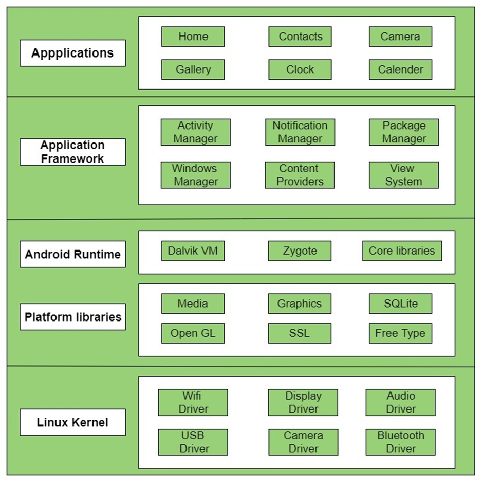
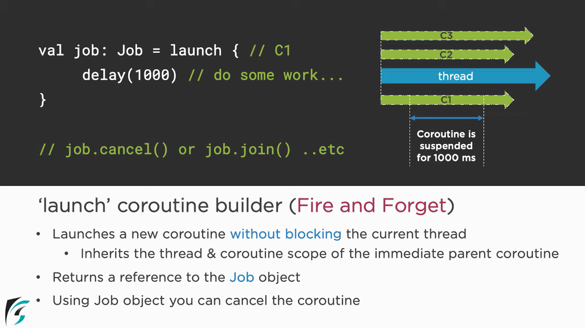
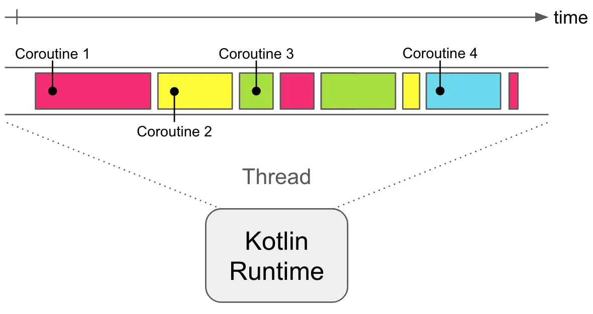
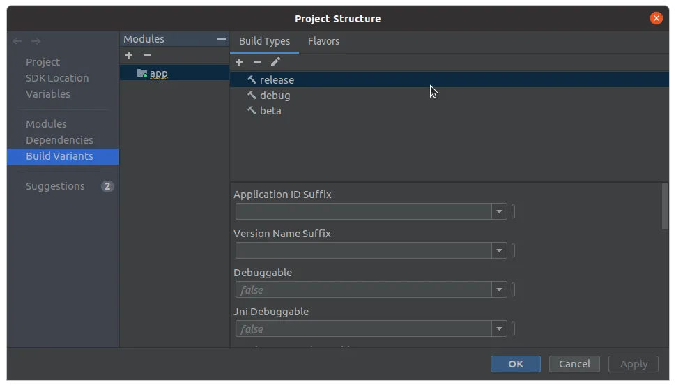

Interview Questions Android
//Note: # ✍️ - mentioned questions are
not asked in interviews. Only for the knowledge.
//Note: * ⭐- mentioned questions are
mostly asked in interviews.
JAVA Questions
- What is OOPs?
- What is class?
- What is Object?
- What is Inheritance and types?
- What is Polymorphism and types?
- What is Abstraction?
- What is Encapsulation?
- What are literals and identifiers in java?
- What is constructor?
- What is singleton class?
- JRE vs JDK?
- Can you compile with JRE?
- What is thread?
- What is thread lifecycle?
- Tell me about java collections?
- Map vs set vs hashtable difference?
- Map vs HashMap vs LinkedHashMap vs TreeMap?
- List, Set, and Vector Difference?
- What is vector?
- HashSet vs TreeSet?
- Types of Complexity in java?
- What is time complexity?
- ✍️Sorting methods in Java?
- Sorting algorithms?
- What is Stream in java?
- What are the operations in stream in Java?
- Difference between flatMap and map?
- What are generics in Java?
- Why do we use generics in Java?
- What is a type parameter?
- How do you define a generic class in Java?
- What is a bounded type parameter?
- What is the difference between upper bounded and
lower bounded wildcards?
- How can you restrict the types that can be used as
type arguments in generics?
- What is type erasure in Java generics?
- How does the diamond operator (<>) improve
code readability in Java generics?
- What is the difference between <? extends T>
and <? super T> wildcards?
- How do you create a generic interface in
Java?
- Can you use primitives as type arguments in
generics?
- How does the Comparable interface relate to
generics?
- Tell me about major updates in Java 8
features?
- What is Lambda Expression in java?
- What is Method Reference in java?
- What is Stream API?
- Tell me about the Date and Time API?
- What is Default Method?
- What is Functional Interface?
- What is Optional Class?
- What is Parallel Array Sorting?
- Features of Java 9?
- Features of Java 10?
- Features of Java 11?
- Features of Java 12?
- Features of Java 14?
- Features of Java 15?
- Features of Java 17?
- How are variables passed to methods? pass by value
or pass by reference?
- What is the difference between final, finally, and
finalize?
- What is a String pool?
- What is reflection?
KOTLIN Questions
- What is Kotlin?
- ✍️What is Functional Programming in
Java?
- Difference between kotlin and java?
- Difference between Kotlin and Java on Functional
programming?
- For loop changes in kotlin?
- What is object keyword?
- What is companion object in kotlin?
- What is higher order function?
- What is Safe call operator?
- What is Elvis operator (?:) Means in Kotlin?
- What is Not Null Assertion operator?
- What is data class?
- What is destructuring?
- What is string interpolation?
- Val vs var difference in Kotlin?
- ✍️Val vs const difference in
Kotlin?
- When to use the lateinit keyword?
- How to check if a "lateinit" variable has
been initialized?
- What is lazy?
- What is the difference between lateinit and lazy
kotlin?
- Const equivalent in Java?
- What is the reference operator/ reflection in
kotlin?
- What is Visibility modifiers in kotlin?
- Protected vs internal?
- What are the different class declaration /
inheritance modifiers in kotlin?
- What is inner in kotlin?
- Tell me about constructors in kotlin?
- What are coroutines?
- What is lightweight?
- What is scope in kotlin?
- What are the scopes we have?
- What is Scope functions?
- Use of scope functions?
- Suspend function?
- ✍️What is inline function?
- ✍️What is actual function?
- ✍️ What are Coroutine Builders?
- What is launch?
- What is async?
- What is await?
- What is runBlocking { }?
- ✍️What is withContext?
- Launch vs Async ?
- What are Dispatchers?
- Types of dispatcher?
- What is extension function?
- List useful higher-order functions for collections
in Kotlin?
- Explain the any function for collections in Kotlin?
- Explain the all function for collections in Kotlin?
- Explain the none function for collections in
Kotlin?
- Explain the find function for collections in
Kotlin?
- Explain the firstOrNull function for collections in
Kotlin?
- Explain the groupBy function for collections in
Kotlin?
- Explain the count function for collections in
Kotlin?
- Explain the filter function for collections in
Kotlin?
- Explain the map function for collections in
Kotlin?
- Explain the distinct function for collections
in Kotlin?
- Explain the distinctBy function for collections in
Kotlin?
- Explain the flatMap function for collections in
Kotlin?
- Explain the reduce function for collections in
Kotlin?
- Explain the maxByOrNull / minByOrNull function for
collections in Kotlin?
- Explain the associateBy function for collections in
Kotlin?
- Explain the partition function for collections in
Kotlin?
- Explain the drop / take function for collections in
Kotlin?
- Explain the plus / minus operators for collections
in Kotlin?
ANDROID Questions
- What is the Android architecture?
- Android Architecture components?
- ✍️ What is Linux kernel in Android
Architecture?
- What does Android ART mean?
- What is ADB?
- What is Activity?
- What is fragment in Android?
- What is Android Activity
“launchMode”?
- Tell activity lifecycle when switching to another
activity?
- Tell activity lifecycle when
Onbackpress->?
- On Home press lifecycle ->?
- What happen when orientation changed in
lifecycle?
- How to pass data to another activity?
- *How to pass data to another fragment?
- How to pass ArrayList to next activity?***
- Why we set setContentView in OnCreate not in
onStart?
- What is service?*
- How to notify UI from the service?***
- What is BoundService?
- What is IntentService?
- What is pending intent?
- How can you handle background tasks in Android 11
and later versions?
- ✍️How can you handle background tasks
in Android 10 and before versions?
- Difference between serializable and parcelable?
Which is the best approach in Android ?***
- What is the difference between a regular .png and a
nine-patch image?
- Recyclerview vs listview?
- ✍️What is meant by viewholder
pattern?
- View vs Viewgroup?
- how to optimize recyclerview android?
- ✍️What is Okhttp intercepter in
Android?
- ✍️How http caching will work in
android?
- Can you tell me about RxJava? How it works? And its
functionalities?
- How will you handle error in RxJava?@
- How custom error handler works?@
- Explain the concept of dependency injection and its
benefits in Android development?
- What is meant by dagger? How it works?@
- What is meant by Hilt? How it works?
- What is content provider?***
- *What is MVVM pattern?Explain
- *What is ViewModel in MVVM?
- *What is Model in MVVM?
- *What is Repository in MVVM?
- Steps to create MVVM in Android using
Kotlin?
- MVVM sample project explanation?
- Alternatives for AsyncTask?
- difference between Thread and Handler?
- What is handler?
- View Binding Vs databinding?
- What is the purpose of the ConstraintLayout in
Android?
- Features of ConstraintLayout?
- How to make ConstraintLayout work with percentage
values?
- Barrier in constraint layout?
- What is Chain in Constraint layout?
- What is dimension ratio?
- What are Android Jetpack components.?
- Tell all the Android Jetpack components.?
- What are Jetpack components we can usually
use?
- Advantages of jetpack components?
- What is meant by livedata?
- LiveData setValue vs postValue?
- Advantages of Using LiveData?
- What is WorkManager?
- Work manager vs coroutine / background processing
in latest Android Components?
- What is navigation components in jetpack?
- Major Parts of Jetpack Navigation
components?
- What is Navigation Graph?
- What is NavHost?
- What is NavController?
- What is room database?
- Primary components of Room Database?
- Important parts of Jetpack compose?
- What are Composable Functions?
- How State Management works in compose?
- What is remember()?
- What is MutableState?
- Approach for Theming and Styles in compose?
- What are Composable Modifiers?
- What is Navigation in compose?
- What are Side Effect APIs?
Explanations & Studies
JAVA
Platform Questions
- How is java platform independent?
- We can write code on one platform and We can run it on
other platforms.
- Because Java have JVM. It will convert
bytecode into the machine language with respect to the platform.

- JRE vs JDK?
- JDK(Java Development Kit) is used to develop Java
applications. JDK also contains numerous development tools like compilers,
debuggers, etc. JRE(Java Runtime Environment) is the implementation of JVM(Java Virtual Machine) and it
is specially designed to execute Java programs.
- Can you compile with JRE?
- No you can't develop java programs only with
JRE. You will need JDK for compiling our programs. JRE provides only
runtime environment,but JDK is something you will need to compile our code
to make it executable by our JRE. You will need javac for compiling our code which is present in
JDK.
- If you have a compiled Java application (.class files or a Java
Archive .jar file), you can run it using the JRE without needing the JDK.
- JVM?
- It will convert bytecode into the machine
language with respect to the platform.
OOPs Questions
- SOLID principle?
|
Principle
|
What it means
|
Android / Kotlin Example
|
|
Single Responsibility Principle (SRP)
|
A class should have only one job, and therefore only one reason to
change. Encapsulation
|
A ViewModel should only manage UI state. It should not make direct
Retrofit network calls or parse JSON.
|
|
Open/Closed Principle (OCP)
|
Classes should be open for extension but closed for modification.
Abstraction & Polymorphism
|
Instead of modifying a DiscountCalculator class with if/else for
every new sale, create a DiscountStrategy interface and implement it for new sales.
|
|
Liskov Substitution Principle (LSP)
|
Subclasses must be substitutable for their base classes without
breaking the app. (Inheritance)
|
If Bird has a fly() method, Penguin shouldn't inherit Bird if it
just throws an UnsupportedOperationException when forced to fly.
|
|
Interface Segregation Principle (ISP)
|
Don't force classes to implement interfaces (methods) they
don't actually use. (Abstraction)
|
Instead of one massive GestureListener interface with onTap(),
onSwipe(), and onPinch(), split them into smaller interfaces so a simple button only implements
onTap().
|
|
Dependency Inversion Principle (DIP)
|
High-level modules should depend on abstractions (interfaces), not
concrete implementations. Tools : Dagger / Hilt
|
A ViewModel should require an UserRepository interface passed in via
constructor (using Hilt/Dagger), rather than instantiating UserRepositoryImpl() directly inside
it.
|
- What is OOPs?
- Object-Oriented Programming is a methodology to design a program
using classes and objects. It simplifies software development and maintenance by providing some
concepts:
- Inheritance
- Polymorphism
- Abstraction
- Encapsulation
- What is class?
- A class is a template or
blueprint from which objects are created.
- A class will contain some member variables and member
functions
- It represents the set of properties or methods that are common to
all objects of one type.
- What is Object?
- It is a basic unit of Object-Oriented
Programming and represents the real life entities.
- We can say that classes are user defined data types and objects are
variables of that type.
- The object class refers to a class created to group various objects
which are instances of that class.
- What is Inheritance and Types?
- Inheritance in Java is
a mechanism in which one object acquires all the properties and behaviors of a parent object. It is an
important part of OOPs.
- (Alternative explanation): Inheritance is a method through which one class inherits the properties
from its parent class
Note: Multiple inheritance is not
supported in Java through class.


- What is Polymorphism and types?
- Polymorphism is a concept by which we can perform a
single action in different ways.
- Method Overloading (compile-time/static)
- Method Overriding (run-time/dynamic)
- Method Overloading: Method overloading
refers to the process of creation of methods with the same name but with different parameters.
- Method Overriding: When the child class has the method which has the same name, same parameters and same
return type as a method in its parent class(or super-class), then the child method has overridden the
parent class method.
- What is Abstraction?
- Abstraction is the process of hiding
certain details and showing only essential information to the
user.
Or
- Abstraction is the concept of hiding the implementation details and showing only the necessary
features of an object.
- Abstraction can be achieved with either abstract classes or interfaces
- What is Encapsulation?
- Encapsulation in Java is a process of
wrapping fields and methods inside a single unit.
- It is a way to achieve data hiding.
- It can be done by access modifiers like private, public and protected.
- What are literals and identifiers in java?
- Literals are syntactic representations of boolean, character,
numeric, or string data. Literals provide a means of expressing specific values in our program.
- Identifiers are the names of variables, methods, classes, packages
and interfaces.
- What is constructor?
- Constructors are special member
functions that are responsible for initializing an instance of
a class.
- Constructors are called when you create a new
object of the class.
- What is singleton class?
- *Writing one instance and accessing the same instance to the
whole application.
|
public static Singleton getInstance() {
if (single_instance == null)
single_instance = new Singleton();
return single_instance;
}
|
- Difference between static and singleton?
- Similarities :
- Both classes can be used for holding the
global state of an application.
- Difference :
- If our application requires a single instance of a class
that encapsulates some state or resources, the Singleton pattern is more appropriate.
- Static methods/variables do not enforce a single
instance; they are shared across all instances of the class.
|
Feature
|
Singleton Pattern
|
Static Class
|
|
Definition
|
A design pattern that ensures that only one instance of a class exists.
|
A class that contains only
static members. It isn't associated with instance.
|
|
Lazy Loading
|
Can be lazy loaded when need
|
static classes are always loaded
|
|
Creation
|
The instance is created using a private
constructor
|
The instance is created when the class is
loaded
|
|
Access
|
The instance is
accessed using a static method
|
The instance is
accessed directly
|
|
Inheritance
|
The class can be inherited
|
The class cannot be inherited
|
- What is thread?
- Thread is a lightweight process that can run concurrently with
other threads within the same process.
- What is the thread lifecycle?
- New: The thread is in the new state if it has
been created but has not yet started. In this state, the
thread has not yet been associated with a processor.
- Runnable: When a thread is in the runnable
state, it is ready to run, but it has not been selected by the thread scheduler to run. In other words,
the thread is waiting for a processor.
- Running: When the thread scheduler selects a
thread from the runnable pool and assigns a processor to it, the thread enters the running state. In
this state, the thread is actively executing its code.
- Blocked or Waiting: Whenever a thread is inactive for a span of
time (not permanently) then, either the thread is in the blocked state or
is in the waiting state.
- Terminated: When
a thread has completed its task or has been terminated by an exception, it enters the terminated state. Once a
thread is in this state, it cannot be restarted.
- It's important to note that a thread can move back and forth
between the runnable and blocked states, depending on the availability of resources. Additionally, a
thread can be suspended or resumed using methods such as sleep(), wait(), and notify().

- How do you create a thread?
- Extend Thread: override run(), then call
start(). This uses up your single inheritance.
- Implement Runnable: pass it to new Thread(r). This is the preferred approach.
- Callable + ExecutorService: returns a result through a
Future and manages a thread pool.
- Difference between extending Thread vs implementing Runnable?
- Core Difference: Thread is the
worker (class); Runnable is the task (interface).
- Inheritance: Extending
Thread blocks extending any other class;
implementing Runnable leaves your class free to extend another parent.
- Design: Runnable separates what to run from how it
runs and works directly with thread pools (ExecutorService).
- Rule of Thumb: Always prefer
Runnable (unless overriding core
Thread behavior).
- What is annotation?
- An annotation is like a special
note that we can add to parts of our code, such as classes, methods, or variables, to provide extra
information about them.
- These notes act as metadata and help
the compiler, runtime environment, or tools understand and handle the code in a specific manner.
- Example : Junit
- What is Garbage collection?
- Garbage collection is a process in
computer programming and memory management, where the runtime environment automatically identifies
and deallocates memory that is no longer in use
or unreachable by the program.
- It is a critical feature of modern programming languages,
including Java and C#, to manage memory effectively and prevent memory leaks.
- What is the difference between
processes and threads?
- Processes:
- Processes are independent execution
environments that contain their own memory space,
code, and data.
- Processes can communicate with each other through shared
memory or message passing.
- Processes are typically used to run large, complex
applications that require multiple threads or to isolate different parts of an application from each
other.
- Threads:
- Thread is a unit of process.
- A Process can have many threads.
- Threads are lightweight
processes that share the same memory space, code, and data as the process
they belong to.
- Threads can run concurrently and communicate with each
other through shared variables.
- Threads are typically used to run multiple
tasks within the same process, such as handling user input or updating the
UI.
- Sleep vs wait vs yield in thread?
- Thread.sleep(),
Thread.yield() and Object.wait()
- sleep(n) : The
OS doesn’t even try to schedule the sleeping thread until requested time has passed.
- In human terms, sleep(n) says “I’m done with my timeslice, and please don’t give me another one for at
least n milliseconds.”
- wait() : As
with sleep(), the OS won’t even try to schedule our task unless someone calls notify() (or one of
a few other wakeup scenarios occurs).
- wait() says
“I’m done with my timeslice. Don’t give me another
timeslice until someone calls
notify().”
- yield() :The OS
is free to immediately give the thread another timeslice, or to give some other thread or process the
CPU the yielding thread just gave up.
- yield() says
“I’m done with my timeslice, but I still have work to
do.”
- Differences:
|
|
Sleep
|
Wait
|
|
1
|
sleep() method doesn't release the
lock.
|
wait() method releases the lock.
|
|
2
|
sleep() is the method of java.lang.Thread class.
|
wait() is the method of Object class.
|
|
3
|
sleep() is the static method - public
static void sleep(long millis, int nanos) throws InterruptedException { //... }
|
wait() is the non-static method - public
final void wait() throws InterruptedException {
//...}
|
|
4
|
after the specified amount of time, sleep() is
completed.
|
wait() should be notified by notify() or
notifyAll() methods.
|
|
5
|
sleep() better not to call from loop(i.e. see
code below).
|
wait() method needs to be called from a
loop in order to deal with false alarm.
|
|
|
sleep() may be called from anywhere. There is
no specific requirement.
|
wait() method must be called from synchronized context (i.e. synchronized method or block),
otherwise it will throw IllegalMonitorStateException
|
- What is the difference between String vs StringBuffer vs
StringBuilder?
- String is immutable in
Java. So it’s suitable to use in a multi-threaded environment.
- StringBuffer and StringBuilder are mutable objects in Java.
- They provide append(), insert(), delete(), and substring()
methods for String manipulation.

Data Structures and algorithm Questions
Important topics:
- HashMap
- ArrayList
- LinkedList
- Tree
- HashSet
- Tell me about java collections?
- Interview
Questions tables.xlsx- Collections excel
sheet
- - - - - - - - - implements
- _________ extends
- Collection: The
Collection interface is the root interface
of the collections hierarchy. It defines the basic operations and behaviors that all collections should
have, such as adding, removing, and querying elements. Subinterfaces of Collection include List, Set, and Queue.
- List: The
List interface extends Collection and represents an ordered collection of
elements with duplicate values allowed. Implementations of List include ArrayList, LinkedList, and Vector.
- Set: The
Set interface extends Collection and represents a collection of unique
elements with no duplicates. Implementations of Set include HashSet,
LinkedHashSet, and TreeSet.
- Queue: The
Queue interface extends Collection and represents a collection that follows
the First-In-First-Out (FIFO) order. Implementations of Queue include LinkedList, PriorityQueue, and ArrayDeque.
- Map: The Map interface represents a mapping between keys and
values. It allows you to store and retrieve values based on a unique key. Implementations of
Map include HashMap, LinkedHashMap, and TreeMap.
- SortedMap: The SortedMap interface extends Map and represents a map that maintains its keys in
a sorted order. Implementations of SortedMap include TreeMap.
- NavigableMap: The NavigableMap interface extends SortedMap and provides additional navigation
methods. Implementations of NavigableMap include TreeMap.
- Deque: The
Deque interface extends Queue and represents a double-ended queue. It
allows elements to be added or removed from both ends. Implementations of Deque include ArrayDeque and LinkedList.
- Map vs set vs hashtable difference?
- All are all collections used to store and retrieve data.
- A Map is a collection of key-value pairs.
- A Set is a collection that contains unique elements.
- A Hashtable is a legacy implementation of a Map, which maps keys to values. Hashtable is a concrete implementation of
the Map interface.
Null
- A null value can be used as a key but
can only be used once in the Map.
- A null value can be added to a Set, but can only be added once.
- null cannot be used
in HashTable.
Duplicate
- Duplicate values are allowed in a Map, but duplicate keys are
not allowed.
- Not allowed in set.
- Duplicate keys and values are not
allowed in a Hashtable.
- Map vs HashMap vs LinkedHashMap vs TreeMap?
- Map is a collection interface, while HashMap and TreeMap are
specific implementations of the Map interface.
- LinkedHashMap is a subclass of HashMap. That means it inherits
the features of HashMap. In addition, the linked list preserves the insertion-order.
- HashMap does not maintain insertion order.
- Map maintains insertion order.
- LinkedHashMap maintains the insertion order.
- TreeMap maintains ascending order.
- The map does not allow a single null key or value.
- HashMap can store multiple null values along with a single null
key.
- TreeMap allows null values only, not null keys.
- List, Set, and Vector Difference?
- If you need an ordered collection
that allows duplicates, use a List.
- Operations: get(index), set(index, element), add(index, element), remove(index), indexOf(element)
- If you need an unordered
collection that does not allow
duplicates, use a Set.
- Operations: add(element), remove(element), contains(element),size()
- Implementations: HashSet, LinkedHashSet, TreeSet.
- If you need a synchronized, thread-safe list
implementation, use a Vector.
- ⭐ArrayList vs LinkedList?
- We can select with respect to time complexity.
- Arraylist is best for getting by index.
- LinkedList is better for add and remove.
|
Operation
|
ArrayList
|
LinkedList
|
|
Get by Index
|
O(1)
|
O(n)
|
|
Insert at End
|
O(1)
|
O(1)
|
|
Insert at Start
|
O(n)
|
O(1)
|
|
Insert in Middle
|
O(n)
|
O(n)
|
|
Delete at End
|
O(1)
|
O(1)
|
|
Delete at Start
|
O(n)
|
O(1)
|
|
Delete in Middle
|
O(n)
|
O(n)
|
|
Search (contains)
|
O(n)
|
O(n)
|
|
Iterating
|
O(n)
|
O(n)
|
|
ArrayList
|
LinkedList
|
|
1) ArrayList internally uses a dynamic
array to store the elements.
|
LinkedList internally uses a doubly
linked list to store the elements.
|
|
2) ArrayList is better for storing and
accessing data.
Accessing elements
by index has a constant time complexity O(1),
|
LinkedList is better for
manipulating data.
Insertions
and deletions have a constant time complexity O(1)
|
|
3) Manipulation with ArrayList is slow because it internally uses an array. If any
element is removed from the array, all the other elements are shifted in memory.
|
Manipulation with LinkedList is faster than ArrayList because it uses a doubly
linked list, so no bit shifting is required in memory.
|
|
4) An ArrayList class can act as a
list only because it implements List only.
|
LinkedList class can act as a list and
queue both because it implements List and Deque interfaces.
|
|
5) The memory location for the elements of an ArrayList is
contiguous.
|
The location for the elements of a linked list is not
contagious.
|
|
6) Generally, when an ArrayList is initialized, a default capacity
of 10 is assigned to the ArrayList.
|
There is no case of default capacity in a LinkedList. In
LinkedList, an empty list is created when a LinkedList is initialized.
|
|
7) To be precise, an ArrayList is a
resizable array.
|
LinkedList implements the doubly linked list of the list interface.
|
- What is vector?
- A Vector is a synchronized, thread-safe
implementation of the List interface that is
similar to an ArrayList, but with some differences in
behavior.
- It supports all of the operations of the List interface, and
also provides synchronized access to its elements.
- Multiple threads can access a Vector object safely.
- HashSet vs TreeSet?
- HashSet allows a null
- TreeSet does not allow null.
- Types of Complexity in java?
- There are two main types of complexity.
- Time complexity
- Space complexity.
- Time Complexity: This refers to how much
time an algorithm takes to execute, based
on the size of the input.
- It is usually expressed using big O
notation, which describes the worst-case
performance of an algorithm.
- Common time complexity classes include O(1),
O(log n), O(n), O(n log n), O(n^2), O(2^n), and O(n!).
- Space Complexity: This refers to how much
memory an algorithm requires to execute, based on the size of the input.
- It is also usually expressed using big O notation.
- Common space complexity classes include O(1), O(n), O(n^2), and
O(2^n).
- What is time complexity?

https://dev.to/christinamcmahon/runtime-analysis-big-o-notation-906
- This refers to how much time an algorithm takes to
execute, based on the size of the
input.
- It is usually expressed using big O
notation, which describes the worst-case performance of an algorithm.
Some common time complexity classes in Java
include:
- O(1): Constant time complexity:
- where the running time of the algorithm remains the
same, regardless of the input size.
- Examples of constant time operations would be assigning a value to
a variable, inserting an element into an array, or retrieving a value from a hash table with a key.
int n = 1000
- O(log n): Logarithmic time complexity:
- where the running time of the algorithm increases
logarithmically with the input size.
- Logarithmic time grows slower as the input grows.
for (int i = 0; i < n; i *= 2) {
// some constant time
operation
}
- O(n): Linear
time complexity:
- where the running time of the algorithm increases
linearly with the input size.
- A common example is a loop with a constant
time operation inside. Other examples could be finding an item in
an unsorted collection or sorting an array with bubble
sort.
for (int
i =0; i < n; i++)
{
// some constant time
operation
}
- O(n^2):Quadratic time complexity, where the
running time of the algorithm increases with the square of the input size.
for (int i = 0; i < n; i++) {
for (int
j = 0; j < n; j++) {
// some
constant time operation
}
}
- O(2^n): Exponential
time complexity, where the running time of the algorithm increases exponentially
with the input size.
- O(n Log n) - Linearithmic Time complexity:
Linearithmic algorithms are good with a very large data set. Examples would be quick sort, merge sort, and heap sort. In the following example, note
that the first loop is linear and the nested loop is logarithmic.
for (int i = 0; i < n; i++ )
for (int
j = 1; j < n; j *= 2) {
// some
constant time operation
}
}
Here are the time complexities of some common
operations in Java data structures:
- Array access: O(1)
- Array search: O(n)
- LinkedList add/remove at beginning: O(1)
- LinkedList add/remove at end: O(1) if tail pointer is
maintained, O(n) otherwise
- LinkedList search: O(n)
- HashSet/HashMap add/search/remove: O(1) on average, O(n)
in worst case
- TreeSet/TreeMap add/search/remove: O(log n)
- Priority Queue add/remove: O(log n) for both
- ArrayList add/remove at end: O(1) if capacity is
available, O(n) otherwise
- ArrayList add/remove at beginning/middle: O(n)
- Binary search: O(log n)
- QuickSort: O(n log n) on average, O(n^2) in worst
case
- MergeSort: O(n log n) on average and in worst
case
- BubbleSort/SelectionSort/InsertionSort: O(n^2)

- ✍️Sorting methods in
Java?
- In Java, sorting is generally performed using a modified version of the
quicksort algorithm called "dual-pivot quicksort" for
primitive types(Array.sort()) and "TimSort"
for objects(Collection.sort()).
- The performance of the sorting methods can vary depending on the
type and size of the data being sorted.
- Here are some commonly used sorting methods in Java:
- Arrays.sort():
- This method is used to sort arrays of primitive types or
objects in ascending order.
- Example: int[]
numbers = {5, 2,
8, 1, 9}; Arrays.sort(numbers);
- Arrays.parallelSort():
- Introduced in Java 8, this method performs a parallel
sort on arrays, utilizing multiple threads for improved performance.
- Example: int[]
numbers = {5, 2,
8, 1, 9}; Arrays.parallelSort(numbers);
- Collections.sort():
- This method is used to sort collections (such as
ArrayList, LinkedList, etc.) in ascending order.
- Example: List<Integer>
numbers = new
ArrayList<>(Arrays.asList(5, 2,
8, 1, 9));
Collections.sort(numbers);
- Collections.sort() with Comparator:
- In addition to sorting in natural order, you can use a
custom Comparator to specify a different sorting order.
- Example: List<String>
names = new
ArrayList<>(Arrays.asList("John", "Alice", "Bob")); Collections.sort(names, Comparator.reverseOrder());
- Arrays.sort() and Collections.sort() with custom
Comparator:
- You can use a custom Comparator to define a specific
sorting order for arrays and collections.
- Example:
String[] names = {"John", "Alice", "Bob"};
Arrays.sort(names, (a, b) -> b.compareTo(a));
- Sorting algorithms?
- Common Sorting Algorithms
- Bubble Sort : Swapping - Stable✅
- Quick Sort : Swapping - non
stable❌
- Selection Sort : Swapping - non stable❌
- Heap Sort : Swapping - non
stable❌
- Insertion Sort : Shifting - Stable✅
- Merge Sort : Allocation of extra memory and data copy -
Stable✅
- Counting Sort
- Radix Sort - Stable✅
- Bucket Sort
- Tree Sort
- Explanations:
- Bubble Sort repeatedly swaps adjacent
elements if they are in the wrong order until the entire array is
sorted.
- Time Complexity: O(n^2) in the worst and average case, O(n) in
the best case (when the array is already sorted).
- Space Complexity: O(1).
- Insertion Sort builds the final sorted array one element at a
time by inserting each element into its correct position within the sorted portion of the array.
- It's faster than bubble, merge, quick, heap sort when
already sorted(best case).
- Time Complexity: O(n^2) in the worst and average case, O(n) in
the best case (when the array is already sorted).
- Space Complexity: O(1).
- Merge Sort is a divide-and-conquer
algorithm that recursively divides the array into two halves, sorts them
independently, and then merges them back together.
- Compared to Quick sort, merge sort is a good choice for sorting
large arrays.
- Time Complexity: O(n log n) in all cases.
- Space Complexity: O(n) due to the need for temporary arrays
during the merging process.
- Quick Sort is another divide-and-conquer
algorithm that selects a pivot element and
partitions the array into two sub-arrays, one with
elements smaller than the pivot and the other with elements larger than the pivot.
- It then recursively applies the same process to the
sub-arrays.
- Compared to merge sort, quick sort is a good choice for sorting
small arrays.
- Time Complexity: O(n^2) in the worst case, O(n log n) in the
average and best case.
- Space Complexity: O(log n) due to the recursive calls on the
stack, but it can be O(n) in the worst case if the partitioning is unbalanced.
- Heap Sort uses a binary heap data
structure to sort elements. It builds a max-heap (or min-heap) from the
array and repeatedly extracts the maximum (or minimum) element, resulting in a sorted array.
- Time Complexity: O(n log n) in all cases.
- Space Complexity: O(1).
- Timsort is a hybrid algorithm
that combines the best features of quicksort and merge sort.
- It is generally considered to be the fastest sorting algorithm for many real-world inputs.
- Time complexity: O(n log n) in the average case and O(n log n)
in the worst case.
- Space Complexity: O(n).
- Dual-pivot quicksort is a sorting algorithm that is a variant of the quicksort algorithm.
- It works by choosing two pivots, one
at the beginning of the array and one at the end of the array.
- Time Complexity: O(n^2) in the worst case, O(n log n) in the
average and best case.
- Space Complexity: O(log n) (average and best cases), O(n) (worst
case)
- Selection Sort divides the array
into sorted and unsorted portions, and in each
iteration, it selects the smallest element from the unsorted portion and places it in the correct
position in the sorted portion.
- Time Complexity: O(n^2) in all cases.
- Space Complexity: O(1).
- Notes:
- For small input data, a simple algorithm like insertion
sort can work best.
- However, for larger data sets, more efficient algorithms
like quicksort, merge sort, or heapsort are the best choices.
Stream API Questions (from Java 1.8)
- Stream vs Collection?

- What is Stream in java?
- The Stream interface represents a sequence of
elements that can be processed in a pipeline. It
is part of the java.util.stream package.
- We can create a stream from various data sources like collections, arrays, or other sources using stream() or of() methods.
|
// From a List
List<Integer> numbers = List.of(1, 2, 3, 4, 5);
Stream<Integer> streamFromList = numbers.stream();
|
- What are the operations in stream in Java?
- Intermediate Operations:
- Intermediate operations are operations that can be applied to a stream
to transform, filter, or modify its elements.
- These operations are lazily evaluated, which means they do not execute until a terminal operation is called.
Example:
- filter(Predicate<T> predicate):
Filters elements based on a condition.
- map(Function<T, R> mapper):
Transforms each element to another object using a function.
- distinct(): Removes duplicate elements
from the stream.
- sorted(): Sorts the stream elements
in natural order.
- limit(long maxSize): Truncates the
stream to a specified size.
- skip(long n): Skips the first n elements
from the stream.
- forEach : to perform an
action on each element of a collection in a concise and expressive way.
|
List<String> names = new
ArrayList<>();
names.add("Alice");
names.add("Bob");
names.add("Charlie");
// Using forEach to print each element
names.forEach(name ->
System.out.println(name));
|
- Terminal Operations:
- Terminal operations are operations that trigger the processing of the stream and produce a result.
- Once a terminal operation is called, the stream cannot be reused.
Example:
- forEach(Consumer<T> action): Performs an action for each element in the stream.
- collect(Collector<T, A, R> collector): Accumulates elements into a collection or a summary result.
- count(): Returns the number of
elements in the stream.
- anyMatch(Predicate<T> predicate): Checks if any element satisfies a given condition.
- allMatch(Predicate<T> predicate): Checks if all elements satisfy a given condition.
- noneMatch(Predicate<T> predicate): Checks if no element satisfies a given condition.
- min(Comparator<T> comparator): Finds the minimum element based on a comparator.
- max(Comparator<T> comparator):
Finds the maximum element based on a comparator.
- Short-Circuiting Operations:
- Some terminal operations are short-circuiting, meaning they may not process all elements in the stream if the
result can be determined early.
Example:
- findAny(): Returns any element from the
stream.
- findFirst(): Returns the first element
in the stream.
- anyMatch(Predicate<T> predicate):
Stops processing when any element matches the condition.
- Difference between flatMap and map?
- FlatMap() is used to combine all the items of lists into one list.
- Map() is used to transform a list based on certain conditions.
- flatMap() is more useful for
flattening one-to-many mappings.
- map() is usually useful for
one-to-one mappings.
- One line answer: flatMap helps to flatten a
Collection<Collection<T>> into a Collection<T>.
- https://stackoverflow.com/questions/26684562/whats-the-difference-between-map-and-flatmap-methods-in-java-8
Java Update Questions
Simple Reference as table : Important
Java updates
- Important points in lambda
expressions and method interface:
- Method reference → always replaceable by lambda.
- Lambda → only replaceable by method reference if
it’s a single method call with matching parameters.
- Multi-line lambdas usually cannot be converted unless you extract them into a method.
|
🧩1.1. Functional Interfaces -> Lambda
Expressions, Method References
Java 7:
interface Greeting {
void say(String name);
}
Greeting g = new Greeting() {
public void say(String name) {
System.out.println("Hello
" + name);
}
};
Lambda - Java 8:
@FunctionalInterface
interface Greeting {
void say(String name);
}
Lambda -
Greeting g = (name) -> System.out.println(name)
Method References
Greeting g = System.out::println; // method
reference
g.say("Munirajan");
✅ Why better: concise and expressive.
|
|
1.2. Functional Interfaces ->
Lambda Expressions, Method References(Example 2)
Java 7:
new Thread(new Runnable() {
@Override
public void run() {
System.out.println("Running in
Java 7");
}
}).start();
Java 8: Lambda Expressions
new Thread(() -> System.out.println("Running in Java
8")).start();
Here: Runnable is a functional interface.
Java 8: Method
References:
Method reference only works if you have a static or instance method that also
takes no arguments and returns void.
public class Runner {
public static void runTask() {
System.out.println("Running in Java 8 with method reference");
}
}
new Thread(Runner::runTask).start();
//Method References
new Thread (() -> Runner.runTask()).start();
//equivalent Lambda
✅ Every method reference can be replaced by a lambda, but not every lambda
can be replaced by a method reference (it depends on whether a matching method
with parameter exists).
|
|
2. Java stream
Java 7:
List<String> names = Arrays.asList("Arun",
"Kavi", "Munirajan");
for (String name : names) {
if (name.startsWith("A")) {
System.out.println(name.toUpperCase());
}
}
Java 8:
names.stream()
.filter(name ->
name.startsWith("A"))
.map(String::toUpperCase)
.forEach(System.out::println);
Why better: cleaner, parallel-ready, no
manual looping.
|
|
“multi line lambda can not be replaced directly by a
method reference”
Runnable r = () -> {
System.out.println("Line 1");
System.out.println("Line 2");
};
// Cannot convert to method reference directly because
multiple statements exist
- If you extract the
block into a method in a class, then
you can use a method
reference:
public class Helper {
public static void
task() {
System.out.println("Line 1");
System.out.println("Line 2");
}
}
Runnable r = Helper::task;
// now method reference works
|
|
3️⃣ Interface Default & Static
Methods
Java 7:
interface Vehicle {
void start();
}
Adding a new method would break all implementations.
Java 8:
interface Vehicle {
void start();
default void stop() {
System.out.println("Stopped");
}
static void clean() {
System.out.println("Vehicle
cleaned");
}
}
✅ Why better: new
behavior without breaking existing classes.
🧩 4️⃣ Optional Class (Avoid
Nulls)
Java 7:
String name = getName();
if (name != null) {
System.out.println(name.toUpperCase());
} else {
System.out.println("No name");
}
Java 8:
Optional.ofNullable(getName())
.map(String::toUpperCase)
.orElse("No
name");
✅ Why better: declarative null-handling, no NPE.
🧩 5️⃣ Date and Time API
Java 7:
Date now = new Date();
System.out.println(now);
Manipulating dates = painful (Calendar.add() etc.)
Java 8:
LocalDate today = LocalDate.now();
LocalDate nextWeek = today.plusWeeks(1);
System.out.println("Today: " + today + ", Next
Week: " + nextWeek);
✅ Why better: immutable, thread-safe, expressive.
🧩 6️⃣ Parallel Processing
Java 7:
List<Integer> list = Arrays.asList(1,2,3,4,5);
int sum = 0;
for (int i : list) {
sum += i;
}
System.out.println(sum);
Java 8:
int sum = list.parallelStream()
.mapToInt(Integer::intValue)
.sum();
System.out.println(sum);
✅ Why better: automatic
multi-threading.
🧩 8️⃣ Filtering and Collecting
Data
Java 7:
List<String> result = new ArrayList<>();
for (String s : names) {
if (s.length() > 3) {
result.add(s.toUpperCase());
}
}
System.out.println(result);
Java 8:
List<String> result = names.stream()
.filter(s -> s.length() > 3)
.map(String::toUpperCase)
.collect(Collectors.toList());
System.out.println(result);
✅ Why better: one-liner
data transformations.
🧩 9️⃣ Sorting Collections
Java 7:
Collections.sort(names, new Comparator<String>() {
@Override
public int compare(String a, String b) {
return a.compareTo(b);
}
});
Java 8:
names.sort(String::compareTo);
✅ Why better: simpler
syntax, readable.
🧩 🔟 Java 8 Date/Time Difference Example
Java 8 Only:
LocalDate birth = LocalDate.of(1995, 5, 12);
Period age = Period.between(birth, LocalDate.now());
System.out.println("Age: " + age.getYears());
|
|
Java Version
|
Important Features Introduced
|
details
|
Example
|
Example
|
|
8 (2014)
|
Functional Interface
|
An interface with exactly one abstract method (SAM – Single
Abstract Method). Enables Lambda or Method Reference usage.
|
It's the base requirement — Lambdas or Method References
can only be used where a functional interface is expected.
|
java<br>@FunctionalInterface<br>interface Greeting {
void sayHello(String name); }
|
|
|
Lambda Expression
|
A short form of implementing a functional interface without writing
a class or anonymous inner class.
|
Used instead of creating a class that implements a functional
interface.
|
java<br>Greeting g = name -> System.out.println("Hi
" + name);<br>g.sayHello("Raj");
|
|
|
Method Reference
|
A shortcut syntax for calling an existing method instead of defining
it in Lambda.
|
Also used in place of a Lambda, but only if an existing method
already matches the functional interface method signature.
|
java<br>Greeting g = System.out::println; // same as name
-> System.out.println(name)<br>g.sayHello("Amit");
|
|
|
Stream API
|
Process collections elegantly
|
.stream()
|
|
|
|
Optional
|
Avoid null checks
|
Optional.ofNullable()
|
|
|
|
Default , static Methods
|
Add interface implementation
|
default void method()
|
|
|
|
Date/Time API
|
New modern time handling
|
LocalDate, LocalTime
|
|
|
|
|
|
|
|
|
11 (2018)
|
- var keyword
for local variables
|
|
var name = "John";
|
|
|
|
|
|
|
|
|
13 (2019)
|
- Switch expressions
|
Value-returning, Arrow syntax: Uses arrows (->) , eliminating the need
for explicit break
|
// Value-returning switch expression (can be assigned to a
variable)
String result = switch (expression) {
case value1 -> "result1";
case value2 -> "result2";
default -> "default result";
};
|
|
|
|
- Text blocks
|
Enhances code readability for multi-line strings, especially for
formatting structured text like HTML, SQL, JSON, or code snippets.
|
String html = """
<html>
<body>
<p>This is a paragraph.</p>
</body>
</html>
""";
|
|
|
|
|
|
|
|
|
14 (2020)
|
- Helpful NullPointerExceptions
|
Provide additional details in the exception message, specifically
pinpointing the exact variable or expression that was null.
|
Traditional NPE message:
java.lang.NullPointerException
at com.example.MyClass.myMethod(MyClass.java:15)
Helpful NPE message:
java.lang.NullPointerException: Cannot invoke "String.length()"
because "myString" is null
at com.example.MyClass.myMethod(MyClass.java:15)
|
|
|
|
|
|
|
|
|
14 (2020)
|
- Records
|
* It is very similar to kotlin
data classes.
* Differences:
* Records are immutable by default, while data classes can be mutable or immutable.
* Records have a single canonical
constructor syntax, while data classes support multiple
constructors.
|
record Person(String name, int age) {}
|
|
|
|
- Pattern matching for instanceof
|
Enhances the instanceof operator, allowing you to combine type checking
and casting in a single expression.
|
if (obj instanceof String str) {
// obj is a String, and its value is now in the variable
str
System.out.println("The string is: " + str);
} else if (obj instanceof Integer num) {
// obj is an Integer, and its value is now in the variable
num
System.out.println("The integer is: " + num);
}
|
|
|
|
|
|
|
|
|
16 (2021)
|
- Sealed classes
|
Sealed classes are designed to enhance the
security of class
hierarchies by specifying which classes are allowed to be
subclasses.
Subclasses must be listed in the permits clause of the sealed class or be marked as
non-sealed if they want to remain open for
further extension.
|
public final class Circle extends Shape {
// Circle class members
}
public non-sealed class CustomShape extends Shape {
// CustomShape class members
}
|
|
|
|
|
|
|
|
|
17 (2022)
|
- Pattern matching for switch
|
|
static String formatterPatternSwitch(Object obj) {
return switch (obj) {
case Integer i -> String.format("int %d",
i);
case Long l -> String.format("long %d", l);
case Double d -> String.format("double %f",
d);
case String s -> String.format("String %s",
s);
default -> obj.toString();
};
}
|
|
|
|
|
|
|
|
|
19 (2022)
|
- Structured concurrency with Project Loom
|
Project Loom is an initiative aimed at improving concurrency. includes
Virtual threads, Structured Concurrency and more.
Structured Concurrency which includes async and await, Structured Task
Scopes
|
|
|
|
|
|
|
|
|
|
20 (2023)
|
- Virtual threads (fibers)
|
A lightweight thread and part of Project Loom
|
|
|
|
|
|
|
|
|
|
21 (2024)
|
- String Template (similar to kotlin string interpolation)
|
similar to kotlin string interpolation
|
// After Java 21
‘Hello {our actual variable value} welcome to the
GeeksForGeeks!’
|
|
- Tell me about major updates in Java 8 features?
- It was released in March 2014.
- Lambda Expressions
- Method References
- Functional Interfaces
- Stream API
- Date and Time API
- Default Methods
- Optional Class
- Parallel Array Sorting - Arrays.parallelSort()
- What is Lambda Expression in java?
- Lambda Expression: Lambda expression allows us to
write more concise and expressive code for functional interfaces. They enable the use of functional programming
paradigms in Java.
- What is Method Reference in java?
- Method References: Method references provide
a shorthand notation for lambda expressions when invoking a method that matches the lambda's signature.
|
Without Lambda(Java 1.7):
List<String> names = Arrays.asList("John", "Alice", "Bob", "Eve");
// Before Java 1.8, you need to use an anonymous Comparator
implementation
names.sort(new Comparator<String>() {
@Override
public int
compare(String name1, String name2) {
return
name1.compareTo(name2);
}
});
// Print the sorted list
System.out.println(names);
|
|
With Lambda(Java 1.8):
List<String> names = Arrays.asList("John", "Alice", "Bob", "Eve");
// With Lambda expression, it's much more concise
names.sort((name1, name2)
-> name1.compareTo(name2));
// Print the sorted list
System.out.println(names);
|
|
With method reference (Java 1.8):
List<String> names = Arrays.asList("John", "Alice", "Bob", "Eve");
// With method reference
names.sort(String::compareTo);
// Print the sorted list
System.out.println(names);
|
- What is Stream API?
- The Stream API provides a way to process collections of data in
a functional style. It allows us to perform various
operations on data streams such as filtering, mapping, and reducing.
|
List<Integer> numbers = Arrays.asList(1, 2, 3, 4, 5);
// Use Stream API to filter even numbers and calculate their
sum
int
sumOfEvens = numbers.stream()
.filter(num
-> num % 2 == 0)
.mapToInt(Integer::intValue)
.sum();
System.out.println("Sum of even numbers: " +
sumOfEvens);
|
- Tell me about the Date and Time API?
- Java 1.8 introduced the java.time package, which provides a new Date and Time API that is
more flexible, comprehensive, and easier to use than the old
java.util.Date and java.util.Calendar classes.
|
import java.time.LocalDate;
import java.time.LocalTime;
import java.time.LocalDateTime;
import java.time.format.DateTimeFormatter;
public class Main {
public static void main(String[] args) {
//
Current date
LocalDate currentDate = LocalDate.now();
System.out.println("Current Date: " + currentDate);
//
Current time
LocalTime currentTime = LocalTime.now();
System.out.println("Current Time: " + currentTime);
//
Current date and time
LocalDateTime currentDateTime = LocalDateTime.now();
System.out.println("Current Date and Time: " +
currentDateTime);
//
Formatting date and time
DateTimeFormatter formatter = DateTimeFormatter.ofPattern("yyyy-MM-dd HH:mm:ss");
String formattedDateTime = currentDateTime.format(formatter);
System.out.println("Formatted Date and Time: " +
formattedDateTime);
}
}
|
- What is Default Method?
- Default Methods: Default methods allow you
to add new methods to interfaces without breaking the classes that implement
them.
- This feature was introduced to support backward compatibility in
existing interfaces.
|
interface Vehicle {
void start();
default void honk() {
System.out.println("Honking the horn!");
}
}
class Car implements Vehicle {
@Override
public void
start() {
System.out.println("Car starting...");
}
}
public class Main {
public static void main(String[] args) {
Car
car = new Car();
car.start();
car.honk(); // Default method from the interface
}
}
|
- What is Functional
Interface?
- Functional Interfaces: functional interfaces are
interfaces with exactly one abstract method. Functional interfaces
are used with lambda expressions and method references. The
@FunctionalInterface annotation is used to indicate
that an interface is a functional interface.
|
@FunctionalInterface
interface MyFunction {
void doSomething();
}
public class Main {
public static void main(String[] args) {
MyFunction func = () -> System.out.println("Doing something");
func.doSomething(); // Output: Doing something
}
}
|
- What is Optional Class?
- Optional Class:
- The Optional class is used to represent optional
values that may or may not be present.
- It helps to avoid null pointer
exceptions and makes code more robust.
|
String name = null;
// Create an Optional from a possibly null value
Optional<String> optionalName = Optional.ofNullable(name);
// Check if the value is present before using it
if (optionalName.isPresent()) {
System.out.println("Name: " + optionalName.get());
} else {
System.out.println("Name not
available.");
}
|
- What is Parallel Array Sorting?
- Parallel Array Sorting: The new Arrays.parallelSort() method was added to the
java.util.Arrays class, allowing for parallel sorting of arrays, taking advantage of multi-core
processors.
- Features of Java 9?
- Flow API - equivalent to RxJava (RxJava observer and Observable deprecated in Java 9)
- Modules
- private methods in interface etc.
- Features of Java 10?
- Released in March 2018.
- Local Variable Type Inference: This version introduced the var keyword for local variable type inference.
- Improved Garbage Collection: Introduced a new Garbage Collector
called G1 (Garbage-First) as the default garbage collector.
- Features of Java 11?
- Local value syntax for lambda parameters.
- HTTP Client: A new, standard HTTP client API was introduced,
providing a more modern and flexible way to interact with HTTP resources.
- Launch Single-File Source-Code Programs: Developers can now run
Java source files directly without compiling them into a class file.
- Features of Java 14?
- Switch expression
- Switch expressions provide a more concise and powerful
syntax for switch statements.
- This is almost equivalent to when expression in kotlin.
It does not contains case and instead of default keyword, else is
used
- Feature Java
14 Java
15 Java 17
- Availability Preview Permanent Permanent
- Can return values
- No Yes
|
int dayOfWeek = 3;
String dayName = switch (dayOfWeek) {
case 1 -> "Sunday";
case 2 -> "Monday";
case 3 -> "Tuesday";
case 4 -> "Wednesday";
case 5 -> "Thursday";
case 6 -> "Friday";
case 7 -> "Saturday";
default -> throw new IllegalArgumentException("Invalid day of
week");
};
System.out.println(dayName); // Output: Tuesday
|
- record:
- That provides a concise way to define classes whose main
purpose is to store data.
- They automatically generate accessor methods, equals(),
hashCode(), and toString() methods, making it easier to work with data classes.
- This is equivalent to data
class in kotlin.
|
record Person(String name, int age) {
//
Constructor, accessor methods, equals(), hashCode(), and toString() are generated
automatically
}
// Usage of records
Person person = new Person("John", 30);
|
- Patterns in switch
- Text blocks
- Features of Java 15?
- Sealed Classes(preview in java 15, released in java 17)
- Sealed classes allow you to define a class hierarchy in a more
restricted way, specifying which subclasses can extend a given class. This feature is useful for creating closed class hierarchies, enhancing code robustness and
maintainability.
- Features of Java 17?
- Sealed classes (JEP 409): sealed with permits restricts which classes can extend or implement a type.
- Strong encapsulation of JDK internals (JEP 403): reflective access to internal APIs is blocked by default.
- Pseudo-random number generators (JEP 356): a new
RandomGenerator interface and more
algorithms.
- Pattern matching for switch
(preview): case String s ->.
- Removals and deprecations: the Applet API and
Security Manager are deprecated for removal. Strict floating-point semantics are restored (strictfp is redundant).
- Incubators: the Foreign Function &
Memory API and the Vector API.
- Already final by 17: records, text blocks and
instanceof pattern matching.
- Features of Java 21?
- ⭐Virtual
Threads (JEP 444): Provide lightweight threads for efficient and scalable concurrency, reducing resource consumption and context
switching overhead.
- Almost tried to replace coroutines in kotlin.
- ⭐Pattern Matching for
switch (JEP 441): Enables more concise and expressive switch statements
based on patterns rather than just values.
- Record Patterns (JEP 440):
Introduce a new syntax for pattern matching against record instances, enhancing type safety and
readability.
- Sequenced Collections (JEP 431):
Offer new interfaces for ordered collections, simplifying operations like accessing the first and last
elements.
- Generational ZGC (JEP 439): A
low-pause garbage collector (GC) with improved scalability and performance, especially for applications
with diverse heap sizes.
- ⭐(Preview only) String Templates -
equivalent to string interpolation in kotlin and also do processing like arithmetic operations
- STR: performs the standard
interpolation
- FMT: performs interpolation, as
well as interprets the format specifiers which appear to the left of embedded expressions
- RAW: is a standard template
processor that produces an unprocessed StringTemplate object.
|
String name= "Alex";
String message = STR."Greetings \{ name }!";
System.out.println(message);
|
|
String
name = "Lokesh";
//STR
String message = STR."Greetings \{name}.";
//FMT
String message = STR."Greetings %-12s\{name}.";
//RAW
StringTemplate st = RAW."Greetings \{name}.";
String
message = STR.process(st);
|
Concept wise questions Questions (Level:
hard)
- How are variables passed to methods? pass by value or pass by
reference?
- Java uses a "pass-by-value" approach, which means that when a method is called, copies of the values of the actual
arguments (or variables) are passed to the method's parameters.
- When a primitive type variable is passed to a method, a copy of
its value is made, and any changes made to the parameter within the method do not affect the original
variable outside the method.
- When an object reference variable is passed to a method, a copy
of the reference is made, but both the original reference and the copy still point to the same object in
memory. However, changes made to the object's state within the method are reflected in the original
object since both references point to the same object.
- What is the difference between final, finally, and
finalize?
- final is a keyword used in Java to declare
a constant value or a method that cannot be extended (in subclass).
- Finally is used in try-catch block in exception handling. The finally block contains code that
is guaranteed to be executed, regardless of whether an
exception is thrown or not. Even if there is a return statement, it will be executed.
- finalize is a method defined in the
Object class in Java. starting from Java
9 it is a deprecated method of an
Object class. This method is called by the garbage collector for cleanup operations on an object before
it is destroyed.
- What is a String pool?
- string pool, is a specific area of memory in Java where String
objects are stored.
- It facilitates efficient memory management and string reuse to
improve performance and reduce memory overhead.
- if an equivalent string already exists in the pool, the existing
string reference is returned instead of creating a new object.
- What is reflection?
- Reflection in Java is a powerful feature that allows you to inspect and
interact with the structure, behavior, and metadata of classes, interfaces, enums, fields, methods, and
other program entities at runtime.
- It provides a way to inspect and manipulate classes, interfaces,
fields, methods, and constructors dynamically, without knowing their names at compile time.
|
Class<?> clazz = Class.forName("com.example.MyClass");
Object instance
= clazz.newInstance();
|
- Output of equals() with the usual string and String object with
the same content?
- For strings, the equals() method compares the
actual contents of the strings, not just their
references.
|
String s1 = "Hello";
String s2 = new String("Hello");
System.out.println(s1.equals(s2)); // Output: true✅
|
|
//visualization of the memory allocation
Heap:
"Hello"
<-- s1
String Pool:
"Hello"
<-- s2
|
- Difference between == vs equals()?
- The == operator is used to compare the
references of two objects.
- The equals() method compares the actual
contents of the strings, not just their references.
|
String s1 = new String("Hello");
String s2 = new String("Hello");
System.out.println(s1 == s2); // Output: false❌
|
|
String s1 = "Hello";
String s2 = new String("Hello");
System.out.println(s1 == s2); // Output: false❌
|
|
String s1 = "Hello";
String s2 = "Hello";
System.out.println(s1 == s2); // Output: true✅
|
- What is a garbage collector?
- It will release the memory occupied by objects that are no
longer in use.
- It ensures efficient use of memory and prevents memory
leaks.
- Can we force garbage collection?
- We can write code for garbage collection with some code. But
It will collect as it requires only. Not immediately.
- Difference between hashcode() and equals() methods used in
collections?
- Whenever two objects are equal, then the
hashcode should be equal.
- Vise versa is not the same. When the hashcodes are equal,
objects may not be equal.
- When can we use abstract and interface?
- Interface: Use if you want 100% mandatory implementation in child classes.
- Abstract class: Use if you want optional implementation and want to provide some
default methods.
- abstract methods →
must be implemented in the first concrete
(non-abstract) subclass.
- If you don’t want it mandatory → use a normal method or default method (in interface).
💡 Just remember: interfaces also allow default
methods in Java 8+, so not all methods are strictly mandatory anymore.
- What is default method?
- It’s introduced in Java 8 for adding an optional
overriding method.
|
interface Vehicle {
void start(); //
abstract — must be implemented
// ✅ default method — optional to
override
default void stop() {
System.out.println("Vehicle stopped");
}
}
class Car implements Vehicle {
@Override
public void
start() {
System.out.println("Car started");
}
// Not overriding stop()
→ still works
}
public class Main {
public static void
main(String[] args) {
Car car
= new Car();
car.start(); // Car started
car.stop(); //
Vehicle stopped (from default method)
}
}
|
Generics Questions (AI generated)(from Java
1.8)
- What are generics in Java?
- Generics means unspecified type.
- Generics allow the creation of classes and
functions that operate on types specified at runtime. They enhance code
reusability and flexibility.
- Generics allow us to create classes, interfaces, and methods
that can work with different types while providing type safety at compile time.
- They reduce the need for explicit type
casting.
- To use generics, we can specify a type parameter in angle brackets (<>) when defining a class, interface, or
method.
- They enable you to create reusable code that can operate on a variety of data types without the need
for casting.
- Why do we use generics in Java? Or What Are Advantages of Using
Generic Types?
- Generics provide compile-time type
safety
(or)
- This helps in preventing type mismatch
errors at compile time rather
than at runtime.
- They also help in creating reusable
code.
- reduces the need for explicit type
casting.
- What is a Generic type parameter?
- A type parameter is a placeholder for
a specific type that is specified when using a
generic class, interface, or method.
- It represents the type that will be used in place of the type parameter.
- How do you define a generic class in Java?
- A generic class in Java is defined by specifying the type
parameter in angle brackets after the class name. For example, class MyClass<T> { ... } represents
a generic class with a type parameter T.
- What is a bounded type parameter?
- A bounded type parameter in generics allows us to restrict the
types that can be used as type arguments. We can specify upper bounds (extends) or lower bounds (super)
for the type parameter.
- What is the difference between upper bounded and lower bounded
wildcards?
- An upper bounded wildcard (<? extends T>) allows any type
that is a subtype of T or T itself. A lower bounded wildcard (<? super T>) allows any type that is
a supertype of T or T itself.
- How can you restrict the types that can be used as type
arguments in generics?
- We can use bounded type parameters or wildcards to restrict the
types that can be used as type arguments. Bounded type parameters specify an upper or lower bound, while
wildcards provide more flexibility in accepting different types.
- Explain the difference between a generic method and a generic
class.
- A generic method is a method that declares its own type
parameters, which can be different from the type parameters of the enclosing class. A generic class, on
the other hand, is a class that declares type parameters at the class level, which are then used by its
methods and members.
- What is type erasure in Java generics?
- Type erasure is a process where the type parameters used in
generic code are replaced with their upper bounds or erased to their raw types during compilation. This
is done to maintain backward compatibility with older Java code that does not support generics.
- How does the diamond operator (<>) improve code
readability in Java generics?
- The diamond operator (<>) is used to infer the type
arguments of a generic class or method based on the context, eliminating the need to explicitly specify
the type arguments. It improves code readability by reducing verbosity.
- What is the difference between <? extends T> and <?
super T> wildcards?
- <? extends T> represents an upper bounded wildcard,
allowing any subtype of T or T itself. <? super T> represents a lower bounded wildcard, allowing
any supertype of T or T itself.
- How do you create a generic interface in Java?
- A generic interface is created by declaring the type
parameter(s) in the interface definition, similar to a generic class. For example, interface
MyInterface<T> { ... } represents a generic interface with a type parameter T.
- Can you use primitives as type arguments in generics?
- No, primitives (such as int, char, etc.) cannot be used as type
arguments in generics directly. Instead, we can use their corresponding wrapper classes (e.g., Integer,
Character) as type arguments.
- How does the Comparable interface relate to generics?
- The Comparable interface is a generic interface that allows
objects of a class to define their natural ordering. It is commonly used in sorting algorithms and
collections that require elements to be comparable.
KOTLIN
Kotlin - Basics
- What is Kotlin?
- Kotlin is a modern, statically
typed, general purpose programming language that runs on the Java
Virtual Machine (JVM).
- It combines object-oriented and
functional programming features. Java has OOP only. (later
Java [1.8] has functional programming)
- It requires less code and it’s more efficient.
- It’s easy to read and write.
- ✍️What is Functional Programming in Java?
- In Functional programming , the basic unit of
computation is a function.
- That means, they can be passed as arguments to other functions,
returned as values, and
stored in data structures.
- It avoids mutable data and side effects.
- It is based on concepts such as lambda calculus
.
- Why do some developers switch to Kotlin from Java?
(or)
- Difference between kotlin and java?
- Kotlin combines features of both object-oriented and
functional programming, whereas Java is limited to object-oriented programming.
- Null Safety
- Extension Functions
- Higher order function
- Coroutines Support
- Data classes
- Smart casts
- Type inference
- No checked exceptions
- ✍️From java 8, It supports
Functional programming. But Java does not truly support functional programming as Kotlin,
Python or JavaScript does. However, using lambda expressions, functional interfaces, method references,
streams, and the Optional class in Java allows us to imitate the behavior of functional
programming.
- ✍️Difference
between Kotlin and Java on Functional programming?
- Kotlin
- Kotlin natively supports functional programming concepts.
- Provides a more concise and expressive
syntax for functional programming.
- less boilerplate code and
improved null safety features.
- Kotlin supports higher-order functions, lambda
expressions, extension functions, smart casts, and more.
- Java
- require more boilerplate code.
- Java supports lambda expressions, functional interfaces, method
references, streams, and the Optional class.
- ✍️For loop changes in kotlin?
- There are two main types of "for" loops:
the for-in loop and the for-each loop.
|
FOR LOOP MEMORY SHORTCUT
- 1.
item in collection
- 2. i
in collection.indices
- 3. i
in start..end
- 4. i
in start until end
- 5.
(index, item) in collection.withIndex()
- 6.
collection.forEach {item -> }
- 7.
collection.forEachIndexed {index, item -> }
- 8. i
step n
- 9. i
downTo n
- 10.
break@label
/ continue@label
|
- For-In Loop:
|
for (variable in rangeOrCollection) {
// Code to
be executed for each iteration
}
|
- Using for-in loop with a range of
values:
|
for (i in 1..5) {
println(i) //
Output: 1, 2, 3, 4, 5
}
|
- Using for-in loop with a
collection:
|
val fruits
= listOf("Apple",
"Banana", "Orange")
for (fruit in fruits) {
println(fruit) //
Output: Apple, Banana, Orange
}
|
- Until Keyword: until
|
for (i in 0 until 5) {
println(i) //
Output: 0, 1, 2, 3, 4
}
|
- ForEach Loop:
|
val numbers
= listOf(1, 2, 3, 4, 5)
numbers.forEach { number ->
println(number)
}
|
Other advanced features and variations
- For Loop with Index: withIndex() - to get position
val fruits = listOf("Apple", "Banana", "Orange")
for ((index, fruit) in fruits.withIndex()) {
println("Index: $index, Fruit:
$fruit")
}
- Indices: - to get position
for (i in fruits.indices) {
println("Position: $i ->
${fruits[i]}")
}
- For Loop with Steps: step
for (i in 0..10 step 2) {
println(i) // Output: 0, 2, 4, 6, 8, 10
}
- DownTo Keyword: downTo
for (i in 10
downTo 0 step 2) {
println(i) // Output: 10, 8, 6, 4, 2, 0
}
- Labeled For Loop: @
- This is useful when you have nested loops and want to break or continue a specific
loop.
loop@ for (i in 1..3) {
for (j in 1..3) {
if
(i == 2 && j
== 2) {
break@loop
}
println("i: $i, j: $j")
}
}
- What is object keyword?
- Singleton Object:
- It is used to declare a singleton object.
- A singleton class is a class that can
only have one instance. Which can be accessed globally, such as a database connection, retrofit instance
or a logger.
// singleton Object declaration
object Singleton{
var variableName = "I am Var"
}
- Anonymous Object:
- It also used to define anonymous classes and objects.
- An object expression creates an instance of an
anonymous class.
- Anonymous classes are useful for creating temporary objects, these are useful for
one-time use.
- Anonymous objects are objects that are
created without explicitly declaring a named class.
// Object expression
val myObject = object : MouseAdapter()
{
override fun
mouseClicked(e: MouseEvent) {
// Do
something
}
}
- What is companion object in
kotlin?
- It is used to define static methods and
properties for the class.
- *A companion object is a special object which is bound to the class. It can be accessed using the name of the
enclosing class.
- Use companion object when you want to define
static members (properties and methods) that are associated with a specific class.
- *It’s an alternative to static in Java.
- It can contain properties and methods.
- Some other points:
- Each class can have only one companion object.
- The members of the companion object can be accessed using the class name as the qualifier, similar to
calling a static method or property in Java.
- The companion object can have a
name, which can be used to access its members from outside the class.
- The companion object can implement
interfaces and inherit from other classes.
- The members of the companion object can be
declared as private, protected, internal, or public, just like class members.
- Ex:
class MyClass {
companion
object {
const val CONSTANT = 42
fun myFunction() {
println("This is a function in the companion object")
}
}
}
In other Class:
val myConstant
= MyClass.CONSTANT
MyClass.myFunction()
Some other points 2:
- The companion object does not create a shared
instance across the application; each class with a companion object has its own separate instance of the
companion object.
- Definition 2 : It’s used to define members
(properties and methods) that are tied to the class itself rather than to instances of the class.
- Definition 3 : We can write in any class with companion object and it can be accessed in
any other classes.
- Difference between companion object and object? How to choose?
- Best Explanation: Objects
in Kotlin | Baeldung on Kotlin
- Companion objects are basically the same as
objects. It has some additional features
to make development easier. ✅
- Companion objects allow their members to be accessed from inside
the companion class without specifying the name.
- Similarity:
- Both are used to create static instances like in Java.
- Both can have an init
(initializer) block.
- Both can be used to create singleton instances.
|
Aspect
|
companion object
|
object
|
|
declaration
|
It is always declared inside of another class.
|
It is not declared inside of another class.
|
|
Scope
|
Associated with a specific class.
|
Standalone, not tied to any class.
|
|
Access
|
Accessed using the class name. Within the same class it doesn’t
need the class name.
|
Accessed directly using its name everywhere.
|
|
Purpose
|
To create static variables and methods.
Class-level properties, functions, constants, class-specific utility.
The companion object also will create singletons. But it needs to be called with the classname.
|
To create singletons, utility objects, shared resources.
|
|
Number per Class
|
Each class can have its own companion object.
|
Multiple object instances can be defined.
|
|
Example
|
class TestClass{
companion object {
private val FILL_COLOR =
Color.parseColor("#ABF44336")
}
}
//Use:
FILL_COLOR //within
same class
TestClass.FILL_COLOR
//within other classes (if not private)
|
class TestClass{
}
object MySingleton{
val FILL_COLOR = Color.parseColor("#ABF44336")
}
//Use:
MySingleton.FILL_COLOR
|
|
KOTLIN
|
JAVA
|
|
//for static
class Utils {
companion object {
fun
print() {}
val
PI = 3.14
}
}
|
public class Utils {
public static void
print() {
}
public static final double PI
= 3.14;
}
|
|
//for singleton
object MyManager {
fun doSomething() {}
}
|
public class MyManager {
private static MyManager instance;
private MyManager() {
}
public static MyManager getInstance() {
if (instance ==
null) {
instance = new MyManager();
}
return
instance;
}
public void doSomething() {
}
}
|
- What are the various data types available in Kotlin? Explain
them.
- These data types can be broadly categorized into two groups:
- Primitive data types
- Reference data types
- Primitive Data Types:
- Byte
- Short
- Int
- Long
- Float
- Double
- Char
- Boolean
- Reference Data Types:
- String
- Array
- List
- Set
- Map
- Class
- What are the operators available in kotlin?
- Elvis Operator (?:)
- Safe Call Operator (?.)
- Not-Null Assertion Operator (!!.)
- Range Operator (..)
- in Operator (in)
- is Operator (is) (in java instanceof)
- Assertion Operator (assert)
- used in testing
- Spread Operator (*)
- What is Safe call
operator?
- Kotlin null safety is a procedure to eliminate the
risk of null reference from the code.
- (?.) is the null safety operator. Also called safe
call operator.
- The safe call operator ?. is used to safely access
properties or call methods on nullable objects.
- This operator executes only when the reference has a non-null value.
- If the reference is null, the expression using the null safety operator will result in a null value.
- What is Elvis operator (?:) Means in Kotlin?
- The Elvis operator ?: is used to
provide a default value when dealing with nullable types.
- It is used for null safety.
- a ?: b is just shorthand for
if (a != null)
a else b
- What is Not Null Assertion operator?
- The Not Null Assertion operator !! is used to assert that a
nullable type is not null and convert it to a non-nullable type.
- we use Null checks (!!) only when we are confident that the
property can't have a null value.
- It tells the compiler that you are certain the value is not
null, and if it happens to be null, a NullPointerException will be thrown at runtime.
- Difference b/w Safe calls(?.) vs Null checks(!!) in
Kotlin?
- we use Null checks (!!) only when we are confident that the
property can't have a null value. Otherwise, crash (NullPointerException will be thrown).
- If we are not sure that the value of the property is null or not, then we can prefer to use
Safe calls(?.)
- ⭐What is lambda function?
- It is a concise way to represent an anonymous function in
programming.
- Lambdas are often used to pass behavior as an
argument to higher-order functions.
|
val sum = { a: Int, b: Int -> a + b }
println(sum(3, 5)) // Output: 8
|
- ⭐What is higher order function?
- *Higher order function (Higher level function) is a
function which accepts function as a parameter or returns a function
is called Higher-Order function.
|
fun higherOrderFunction(operation: (Int,
Int) -> Int): Int {
return operation(5,
3)
}
fun main() {
val sum = higherOrderFunction { a, b -> a + b
}
println("Sum: $sum") // Output: Sum: 8
val
product = higherOrderFunction { a, b -> a * b
}
println("Product: $product") // Output: Product: 15
}
|
|
fun operationSelector(operationType:
String): (Int,
Int) -> Int {
return when (operationType) {
"sum" -> { a, b ->
a + b }
"difference" -> { a, b ->
a - b }
else
-> { _, _
-> 0 }
}
}
fun main() {
val sumFunction = operationSelector("sum")
val result1 = sumFunction(5, 3) // result1 = 8
println("Sum: $result1")
val differenceFunction = operationSelector("difference")
val result2 = differenceFunction(5, 3) // result2 = 2
println("Difference: $result2")
}
|
- ⭐Where do we use higher-order functions?
- Collections & functional operations
- Filtering, mapping, reducing,
grouping.
|
val numbers = listOf(1,
2, 3, 4, 5)
val evenNumbers
= numbers.filter { it % 2 == 0 } //
filter is a HOF
val squared = numbers.map { it * it
} // map is a HOF
|
- Callbacks - Passing behavior to asynchronous
functions.
|
fun fetchData(callback:
(String) -> Unit) {
// simulate
network call
callback("Data received")
}
fetchData { data -> println(data) }
|
- event listeners in UI
|
button.setOnClickListener {
// this lambda is
passed as a function
}
|
- What is data class?
- Using the data class, we can hold
the data like POJO Class in Java.
- And it can’t hold any other
functionality.
- It has some in-built functions such as equals(), hashCode(), toString(), and copy(), which are automatically generated based on
the class properties.
- It reduces the boilerplate
code which needs to be written.
- It can be used with destructuring
declarations, allowing you to easily extract the values of
properties into separate variables.
- What is value class?
- It is designed to represent a single simple value, such as a Int
or a String . This is because value classes are intended to represent simple values, and adding
additional complexity would make them less efficient and less useful.
|
@JvmInline
value class Degree(val value: Double) {
fun toRadians(): Double = Math.toRadians(value)
fun toRotations(): Double = value / 360.0
fun sin(): Double = Math.sin(toRadians())
fun cos(): Double = Math.cos(toRadians())
fun tan(): Double = Math.tan(toRadians())
fun cot(): Double = 1.0 / tan()
fun sec(): Double = 1.0 / cos()
fun csc(): Double = 1.0 / sin()
}
|
- Data class vs value class?
- Data classes in Kotlin are used to represent
immutable data, with automatically generated useful methods.
- Value classes are a concept in Kotlin for creating
type-safe wrappers around primitive types.
- Inline classes vs type aliases?
- Value (inline) class: @JvmInline value class UserId(val id: Int) creates a new, distinct
type. It wraps one value and is usually inlined at runtime, so there is little overhead. It can have
methods and an init block. Kotlin renamed inline class to value class.
- Type alias: typealias
UserId = Int only gives an existing type another name. It is not a new type
and is fully interchangeable with the original.
- Type safety: with a type alias, passing an
Int where a UserId is expected compiles. With a value class it does not, so it
prevents mixing up userId and orderId.
- Use cases: type aliases shorten long types, for
example typealias Handler = (String) -> Unit.
Value classes add type safety, for example ids, money and units.
- Limit: a value class holds exactly one
property.
- What is destructuring declaration?
- Destructuring declaration is a technique that allows you to extract values from data stored in objects and arrays into separate variables.
- It allows you to declare multiple variables at
once.
- https://www.baeldung.com/kotlin/destructuring-declarations
val person = Person(1, "Jon Snow", 20)
val(id, name, age) = person //→ Destructuring
(or)
val(id, name) =
person //→ Destructuring
//ignore the age if it's not needed
//call
println(id) //1
println(name) //Jon Snow
println(age) //20
//----- will be compiled as
val id = person.component1();
val name = person.component2();
val age = person.component3();
- What is string interpolation?
- String interpolation is variable substitution with
its value inside a string. In Kotlin, we use the $ character to interpolate a
variable and ${} to interpolate an expression.
- Type Inference in Kotlin?
- Type inference means Kotlin automatically
determines a variable or expression's type from its context, so explicit type declarations are often
unnecessary.
|
val number = 42 //
Compiler infers type Int
val message = "Hello, Kotlin!" // Compiler infers type String
fun add(a: Int, b: Int) = a + b
val result = add(3, 5) //
Compiler infers type Int
|
- Val vs var difference in Kotlin?
- val is used to
declare immutable variables, while var is used to declare mutable variables.
- Once a value is assigned to a val, it cannot be
reassigned.
- var can be reassigned.
- ✍️Val vs const val difference in Kotlin?
- val is used to
declare an immutable variable
- For val, Its
value is determined at runtime and cannot be changed
thereafter.
- If we want to declare its value at compile time, we can use const val.
- Both are used to declare a variable that cannot be reassigned, once they
are initialized.
- const is used to declare a
compile-time constant. Its value is determined at
compile-time and cannot be changed at runtime.
- const can be used with
val only. Not with
var.
- What is the difference between lateinit and lazy kotlin?
- lateinit can only be used with a var property whereas lazy will
always be used with val property.
- A lateinit property can
be reinitialised again and again as per the use whereas the lazy property can
only be initialized once.
class Demo {
lateinit
var name: String
val
myName: String by lazy {
"www.tutorialspoint.com"
}
}
fun main() {
var
obj = Demo();
//lazy call
println(obj.myName);
// latinit call
obj.name = "www.tutorialspoint.com/"
if
(obj::name.isInitialized)//check
initialization
println(obj.name)
}
|
|
lateinit
|
lazy
|
|
Meaning
|
"I'll initialize it later."
|
"Initialize it when I need it."
|
|
Declared with
|
var
|
val
|
|
Example
|
lateinit var name: String
name = "Munirajan"
|
val name by lazy { "Munirajan"
}
|
|
Who sets the value?
|
You, manually
|
The lambda, on first access
|
|
Mutable?
|
Yes
|
No (read-only)
|
|
Allowed types
|
Non-null, non-primitive
|
Any type
|
|
If accessed too early
|
Throws UninitializedPropertyAccessException
|
Can't happen, it self-initializes
|
|
Check if initialized
|
::name.isInitialized
|
Not needed
|
|
Typical Android use
|
Views, injected dependencies, binding
|
Expensive objects, by lazy { ViewModel }
|
- When to use the lateinit keyword?
- The lateinit keyword is used for the variables,
which are initialized later, before its first access.
- It can only be used with mutable data types, such as var.
//Example1: Initializing in a Separate Method:
class MyClass {
private lateinit var someProperty: SomeClass
fun initialize() {
// Perform
complex initialization logic
someProperty = SomeClass()
}
fun useProperty() {
// Ensure
someProperty is initialized before using it
if
(::someProperty.isInitialized)
{
// Access and use someProperty
someProperty.doSomething()
}
}
}
//Example2: Android Views:
class MyFragment : Fragment() {
//declared
private lateinit var textView: TextView
override fun onCreateView(inflater: LayoutInflater,
container: ViewGroup?, savedInstanceState: Bundle?): View? {
val view = inflater.inflate(R.layout.fragment_my, container,
false)
//initialized
textView = view.findViewById(R.id.textView)
return view
}
override fun onViewCreated(view: View, savedInstanceState:
Bundle?) {
super.onViewCreated(view, savedInstanceState)
//(check
.isInitializing when we need it in logic. Here not needed)
textView.text =
"Hello, World!"
}
}
- How to check if a "lateinit" variable has been
initialized?
- Using the .isInitialized property we can check the initialization state of a lateinit variable.
- otherwise, a LateInitializationException will be thrown.
- What is lazy?
- The object will be initialized only when it is
accessed for the first time in the application.
- It is for efficient memory management.
- lazy will always be used with val property.
fun main(args:
Array<String>) {
val
name: String by lazy {
println("Initializing name")
"John"
}
fun
printName() {
println(name)
}
printName();
printName();
}
Output :
Initializing name
John
John
Explanation: Here, The lambda expression
used to initialize the property. That is only executed when the first time
the property is accessed.
- Where have you used lazy in real-time projects?
- Heavy objects created on first use: a Retrofit
instance, a Room database, Gson, or an OkHttpClient.
- Android UI: private
val binding by lazy { FragmentXBinding.bind(view) }, by
viewModels() and by navArgs() (both use lazy internally).
- SharedPreferences or a helper that is
only needed on some screens.
- Thread safety: it is synchronized by default. Use
LazyThreadSafetyMode.NONE for main-thread-only
objects to avoid the locking cost.
- Limit: it only works with val, and the value is computed once.
- Const equivalent in Java?
- const is used to declare compile-time constants.
- its value cannot be changed at
runtime.
- Const is equivalent to static
final keyword in
Java
|
Kotlin
|
Java equivalent
|
Example
|
|
var
|
Normal variable/field
|
int age = 30;
|
|
val
|
final
|
final int age = 30;
|
|
const val
|
static final
|
static final int MAX = 100;
|
- What are varargs in Kotlin?
- varargs (short for "variable-length arguments") is a
feature that allows a function to accept a variable number of arguments
of the same type.
- It allows you to pass a varying number of
arguments to a function without explicitly defining an array.
- In the function declaration, you use the vararg
modifier followed by the type of the elements that the function can accept.
- The varargs parameter is then treated
as an array inside the function body, allowing you to
access and manipulate the individual elements.
- You can also pass an array
directly to a vararg parameter by using the spread operator (*) when calling the function.
|
fun sumNumbers(vararg numbers: Int): Int {
var sum = 0
for
(num in numbers) {
sum += num
}
return sum
}
fun main() {
val result1 = sumNumbers(1, 2, 3, 4, 5) //
Pass multiple arguments
val
result2 = sumNumbers(10, 20)
// Pass two arguments
println("Result 1: $result1")
println("Result 2:
$result2")
}
|
|
//passing an
array directly with *
val numbersArray =
intArrayOf(1, 2, 3)
val sum3 = sum(*numbersArray)
|
- What is the Method reference operator/ reflection in kotlin?
- :: is used to create references to
functions, properties, or classes.
- :: is used for Reflection in kotlin
- Example:
|
Class Reference
|
val myClass = MyClass::class
|
|
Function Reference
|
this::isEmpty
|
|
Property Reference
|
::someProperty.isInitialized
|
|
Constructor Reference
|
::MyClass
|
- What is Visibility modifiers in
kotlin?
- used to restrict the accessibility of classes, objects, interfaces, constructors, functions, properties, and their setters
to a certain level.


- Protected vs internal?
- Protected cannot be accessed in other classes. But internal can
be accessed in other classes in the same module.
- What are the different class declaration / inheritance
modifiers in kotlin?
- open
- final
- sealed
- abstract
- open: Indicates that the class can be inherited from by other classes.
- final: Indicates that the class cannot be inherited. This modifier is the opposite of "open". In
Kotlin this is the default modifier.
- sealed: Indicates that the class is a
restricted form of "open" class. It can be extended only within the same file where the sealed class
is declared.
- abstract: This keyword is used to mark a class
as abstract. This means that the class cannot be
instantiated, and must be subclassed.
- Explain sealed class? What are the benefits of Sealed
class over Enum?
- Sealed class is a restricted form of open class.
- Which means, It can be extended only within
the same file where the sealed class is declared
- Enum classes allow us to define a fixed set of options or
choices, while sealed classes enabling the creation of restricted class hierarchies with distinct states
or outcomes.
|
Enum
|
Sealed class
|
|
Enum classes allow us to define a fixed set of
options or choices
|
It's often used to represent restricted hierarchies, where we want
to define a limited set of subclasses and prevent the creation of additional subclasses outside that set.
|
|
|
Sealed classes can contain data and
behavior, making them more flexible than
enums.
|
|
|
works well with when expressions for
pattern matching.
|
|
|
can be extended in the future without breaking existing code.
|
|
enum class Color {
RED, GREEN, BLUE
}
fun main() {
val selectedColor: Color = Color.RED
when (selectedColor) {
Color.RED ->
println("Selected color is Red")
Color.GREEN ->
println("Selected color is Green")
Color.BLUE ->
println("Selected color is Blue")
}
}
|
|
sealed class Result {
data class Success(val data: String) : Result()
data class Error(val message: String) : Result()
}
fun handleResult(result: Result) {
when (result) {
is
Result.Success -> println("Success: ${result.data}")
is
Result.Error -> println("Error: ${result.message}")
}
}
|
- What is inner class in kotlin?
- By default, the child does not have access to the outer class members.
- The inner keyword allows the inner class to access
the members of the outer class.
- Access to Outer Class Members: An inner class can
access the members (properties, functions) of its outer class directly, even if they are private.
- Inner Class Visibility: By default,
an inner class is public if the outer class is public, or internal if the outer class is internal. You
can specify the visibility explicitly using access modifiers.
- Outer Class Instance: Each instance of the inner
class holds a reference to the specific instance of the outer class that it was created from. This
reference is accessed using the this@OuterClassName syntax.
- Non-Static: Inner classes are non-static
by nature and are tied to a specific instance of the outer class. They cannot be accessed without an
instance of the outer class.
|
class ClassA {
class ClassB {
}
}
//In the above example, ClassB
does not have access to any of the properties within the
outer class.
|
|
//In the example below ClassB now has access to the
myProperty variable belonging to ClassA:
class ClassA {
var myProperty: Int = 10
inner class
ClassB {
val
result = 20 + myProperty
}
}
|
- Tell me about constructors in kotlin?
- Primary Constructor:
- The primary constructor is defined as part
of the class header. It is declared after the class name and can include
constructor parameters.
- The primary constructor for the data class must have at least one parameter.
- The primary constructor parameters can be declared with
optional val or var keywords to create corresponding
properties.
- If the primary constructor does not have any annotations
or visibility modifiers, the constructor keyword can be omitted.
- The initialization logic of properties and other code
can be placed directly in the class body.
class Person(val name: String, var age: Int) {
init {
println("Initializing Person object")
}
fun introduce() {
println("My name
is $name, and I am $age years old.")
}
}
- Secondary Constructors:
- Secondary constructors are optional and are declared using the
constructor keyword. They provide additional ways to
create objects of a class.
- Secondary constructors must delegate to the primary constructor
using the ‘this’ keyword. This can
be done either directly or indirectly through other secondary constructors.
- Each secondary constructor can have its own
initialization code.
class Person(val name: String, var age: Int) {
constructor(name: String) : this(name, 0) {
println("Secondary constructor called")
}
init {
println("Initializing Person object")
}
fun introduce() {
println("My name
is $name, and I am $age years old.")
}
}
- Execution order:
- Primary constructor
- Init block
(or)
- Init block
- Secondary constructor
- Notes:
- Constructor parameters are val by default in Kotlin.
- You can explicitly declare them using either the val or var keyword.
- What is Scope functions?
- Scope functions are functions that execute a block
of code within the context of an object.
- Scope functions make code more readable, clear and
concise.
- Scope Functions gives temporary scope to the
object, where specific operations can be applied to the object within the block
of code.
- There are five scoped functions in Kotlin: let , run , with , also and apply.

- Functionality wise, all scope functions have almost the same
functionality. Each one has some different properties.
- Readability tips
- Prefer apply/also for object configuration/side effects — that signals intent to readers.
- Use let when you
intentionally want an it variable or short null-safe scope.
- Use run or with when this makes code clearer (avoid it for multi-line
blocks).
- Where have you used scope functions in real-time
projects?
- apply configures an object and returns it:
Intent(...).apply { putExtra(...) }, or building Notification or Retrofit objects.
- let handles nullables: user?.let { show(it) }. It also maps a value: response.body()?.let { ... }.
- run initializes and computes: binding.run { title.text = ...; button.setOnClickListener {...} }.
- with calls many members on one object:
with(binding) { ... }.
- also adds side effects such as logging or
analytics: list.also { Log.d("TAG", "$it")
}.
- Use of scope functions?
- Object Configuration
- Chained Calls
- Nullable Object Handling
- Data Transformation
- Some other Purposes(may be confusing. So skip
it):
- Executing a lambda(block of code) on non-null objects:
let
- Introducing an expression as a variable in local
scope: let
- Object configuration: apply
- Object configuration and computing the result:
run
- Running statements where an expression is required:
non-extension run
- Additional effects: also
- Grouping function calls on an object: with
- Scope functions are interchangeable?
- ⭐yes — they are interchangeable in syntax,
- but not equivalent in intent,
- and Kotlin encourages choosing the one that makes intent obvious to future readers
- Technically, these scope functions can replace each
other, but in Kotlin we choose the one that clearly shows our
intent — whether we’re initializing, computing, or just
logging.
- It’s about writing readable and meaningful
code.
- For example, apply and
also both return the object, but apply is for configuring and also is for side effects.
- So yes, they can be interchanged, but we use the one that best
fits the meaning.
- Interview
Questions tables.xlsx
|
|
|
|
|
|
|
|
in my view
|
Let
|
also
|
apply
|
run
|
with
|
|
Main use
|
- Executing a block of code (lambda) on nullable objects.
|
|
|
- Multiple method calls on nullable object
|
- Multiple method calls on an non- nullable object
|
|
Secondary use points
|
- It is generally used to prevent NullPointerException
|
|
|
- The run function is a combination of the with and let functions.
- object configuration
|
- Returns a lambda function on an object
- additional effects
- object configuration
|
|
is extension or not
|
extension function
|
extension function
|
extension function
|
extension function
|
non-extension function
|
|
result
|
λ
|
returns same object
|
returns same object
|
λ
|
λ
|
|
Context
|
it
|
it
|
this
|
this
|
this
|
|
|
|
|
|
|
|
|
|
|
|
|
|
|
Examples:
|
Here apply is used to configure an object (Retrofit.Builder) and return the object itself.
// Example: Initializing Retrofit using scope functions
val retrofit = Retrofit.Builder().apply {
baseUrl("https://api.example.com/")
addConverterFactory(GsonConverterFactory.create())
}.build()
val apiService = retrofit.create(ApiService::class.java)
|
|
Example 2: let — Null safety in API response
response.body()?.let {
// Executes only if body is not null
Log.d("API", "Response:
$it")
}
|
|
Example 3: also — For logging side effects
val user = User("Muni", 30).also {
Log.d("UserDebug", "Created user:
$it")
}
|
|
Example 4: run — When you want to compute and return result
val result = user.run {
"User name is $name and age is
$age"
}
Log.d("Result", result)
|
|
Example 5: with — For calling multiple functions on same object
with(binding) {
textViewName.text = user.name
textViewAge.text = user.age.toString()
}
|
Let:
//without scope
|
val name: String? =
null
println(name!!.reversed())
println(name.length)
|
//with scope
|
val name: String? =
null
name?.let{
println(it.reversed())
println(it.length)
}
|
With:
//without scope
|
class Person{
var firstName: String = "Elena Wilson"
var age: Int = 28
}
fun main() {
val person = Person()
println(person.firstName)
println(person.age)
}
|
//with scope (if we had over twenty properties or methods in the Person
class, which would result in multiple code repetitions. We can reduce code in that case by using
with)
|
val person = Person()
val personInfo : String =
with (person){
println(this.firstName)
println(this.age)
age + 10
"I
love the game of football"
}
println(personInfo)
|
run:
//with scope
|
val person: Person? = Person()
val bio = person?.run
{
println(name)
println(age)
"LogRocket rocks!!!"
}
println(bio)
|
apply:
//with scope
|
person.apply {
name = "John Doe"
age =
35
}
|
also:
//with scope
|
val numberList: mutableList<Int> = mutableListOf(1,2,4,5)
numberList.also{
println("The list of items are: $numberList")
it.add(6)
println("The list of items after adding an
element are: $numberList")
it.remove(4)
println("The list of items after removing an
element are: $numberList")
}
|
- Suspend function?
- A suspending function is simply a function that can be paused and
resumed at a later time.
- They can execute a long running operation and wait for it to
complete without blocking.
- suspending functions can only be invoked by another suspending
function or within a coroutine.
- ✍️What is inline function?
- Without an inline function, When we handle higher order functions, the compiler
substitutes the actual code of the lambda directly into
the calling code.
- Without an inline function, the compiler replaces the lambda with
an anonymous object of Function type. It will
reduce performance. So we can use inline in this case.
- This can improve performance for small, frequently-called functions.
- However, inline functions can also increase the
size of the resulting code as the function code is duplicated
at each time. It's generally recommended to use inline
functions for small functions that are called
frequently.
- With inline functions, you will not be able to
access private members/methods of our enclosing
class. You will need to make those members/methods internal and
then annotate them with @PublishedApi.
- Other keywords similar to inline to study in Advanced: noinline, crossinline, @Volatile, synchronized
- Stack overflow explanation: Use
inline for preventing object creation
- Explanation: inline,
noinline, crossinline — What do they mean?
|
//Say you have a higher order function in Kotlin,
fun higherOrderFunction(aLambda: () -> Unit) {
doSomething()
aLamda()
doAnotherThing()
}
|
|
//converted to Java
public void higherOrderFunction(Function aLambda) {
doSomething();
aLambda.invoke();//invoke will execute the logic in our lambda.
doAnotherThing();
}
|
|
//Java translated code: compiler replaces the lambda with
an anonymous object of Function type
public void callingFunction(){
higherOrderFunction(new Function() {
@Override
public void invoke() {
//aLambda's logic here.
System.out.print("lambda
logic")
}
});
}
|
|
|
|
//add the inline keyword to improve the higher order
function's performance.
inline fun higherOrderFunction(aLambda: () -> Unit) {
doSomething()
aLamda()
doAnotherThing()
}
fun callingFunction() {
higherOrderFunction{ print("lambda logic")
}
}
|
|
//Java translated code
//note that the entire `higherOrderFunction` method
//was copied into this method during the inlining.
public void callingFunction() {
doSomething()
System.out.print("lambda logic")
doAnotherThing()
}
|
- What is noinline ?
- prevents certain lambda parameters from being inlined (useful if you
need to store or pass them around).
- What is crossinline ?
- ensures a lambda cannot use non‑local returns when inlined.
- What is reified ?
- only possible in inline functions, allowing type checks at runtime.
- ✍️What is actual function?
- The actual function and expected function pair are used for a feature in Kotlin called
"multiplatform programming".
- With multiplatform programming, a common
module can declare expected functions that have no
implementation with expect keyword.
- and platform-specific modules can
provide actual implementations of those functions for each
platform with actual keyword.
Common module:
expect fun getNameOfPlatform():
String
class Greeting{
fun sayWelcome(): String = "Welcome, ${getNameOfPlatform()}"
}
Android/iOS specific module:
actual fun getNameOfPlatform():
String {
return "Android ${Build.VERSION.RELEASE}"
}
- What is extension function?
- When a function is added to an existing class without
declaring it, that is known as Extension Function.
- New functions will behave like static
- Ex.: we can add Add function to
default String class., Find
greater value function in Integer class
// A sample class to demonstrate extension
functions
class Circle (val radius:
Double){
//
member function of class
fun
area(): Double{
return
Math.PI *
radius * radius;
}
}
fun main(){
//
Extension function created for a class Circle
fun
Circle.perimeter(): Double{
return
2*Math.PI*radius;
}
val newCircle = Circle(2.5);
println("Area of the circle is ${newCircle.area()}")
//
invoke extension function
println("Perimeter
of the circle is ${newCircle.perimeter()}")
}
- What is the use of extension function?
- Add functionality without inheritance → Don’t need to subclass.
- Better readability → Makes code feel
natural (textView.visible()).
- Organized utilities → Instead
of static helper classes.
- Android-friendly → Used a lot for UI
helpers, Fragment transactions, Context helpers.
- When to use:
- When I need to add reusable helper logic to a class I don’t
own (like Android’s View or Context). For example, I use extension functions to easily show a
Toast, change View visibility, or format dates. They keep my code clean and more expressive.
- What do @JvmStatic and
@JvmFiled mean in Kotlin?
- Both improve Java
interoperability and remove Companion/INSTANCE boilerplate
code.
- Reason:
- Kotlin doesn’t have true static members like
Java.
- Instead, it uses objects and companion objects.
- Solution:
- @JvmStatic and @JvmFiled will make it look like a true static function and
field.
|
Actual problem:
class Utils {
companion
object {
fun
greet() = println("Hello")
val
version = "1.0"
}
}
object Config {
val API_KEY = "XYZ123"
}
|
|
Calling from java:
Utils.Companion.greet();
System.out.println(Utils.Companion.getVersion());
System.out.println(Config.INSTANCE.getAPI_KEY());
That’s awkward for Java developers — it
doesn’t look natural.
|
|
Solution with @JvmStatic and @JvmFiled:
class Utils {
companion object {
@JvmStatic
fun greet() = println("Hello")
@JvmField
val version = "1.0"
}
}
|
|
Calling directly from java:
Utils.greet();
System.out.println(Utils.getVersion());
|
|
Annotation
|
Used For
|
Applies To
|
What It Does
|
Example
|
|
@JvmStatic
|
Expose Kotlin static-like methods to Java
|
Functions inside object, companion object
|
Makes a method or property callable as a true static member in
Java
|
✅ Utils.printName() instead of
Utils.Companion.printName()
|
|
@JvmField
|
Expose Kotlin property as a public Java field (without
getters/setters)
|
For val or var
inside object, companion object
|
Removes generated get() / set() methods
|
✅ Config.API_KEY instead of
Config.INSTANCE.getAPI_KEY()
|
- @JvmStatic vs @JvmOverloads?
|
Annotation
|
Purpose
|
Example Use
|
|
@JvmStatic
|
Make a function static for Java calls
|
Utils.sayHello()
|
|
@JvmOverloads
|
Java doesn't support default values in parameters. It generate
Java-friendly overloads for default values
|
fun show(name: String, age: Int = 18) → multiple Java
overloads
|
|
object Utils {
@JvmStatic
fun greet() = println("Hello") // Acts as static method in Java
@JvmField
val version = "1.0"
// Acts as static field in
Java
}
|
|
class Helper {
@JvmOverloads
fun show(name: String, age: Int = 18) { // Now Java will support default
value.
println("Name: $name, Age: $age")
}
}
|
- What are some of the disadvantages of Kotlin?
- Learning resources are limited. The
number of developers who are moving to Kotlin is growing, yet there is a small developer community
accessible to help them understand the language or address problems during development.
- A lot of what happens in Kotlin is hidden. You can almost always trace the logic of a program in Java. When it comes to bug hunting,
this can be really useful. In case, If you define a data class in Kotlin, getters, setters, equality
testing, tostring, and hashcode are automatically added for you.
- Kotlin has variable compilation speed. In some situations, Kotlin outperforms Java, particularly when executing incremental
builds. However, we must remember that when it comes to clean builds, Java is the clear winner.
- We still need Java: Even though you are planning to
completely program our application in Kotlin, we might still want to use Java For certain things.
Especially accessing the advanced functionalities of the hardware,
you might still want to make use of Java to make those things work. So technically, you will be
incorporating a lot of Java code inside our Kotlin
project.
- Checked exceptions are likewise absent in Kotlin. Although checked exceptions have become less prominent, many programmers believe them
to be an effective technique to ensure that their code is stable.
- In Kotlin, there are a few keywords that have non-obvious
meanings: internal, crossinline, expect, reified, sealed, inner,
open. Java has none of these.
Coroutines
- What are coroutines?
- Coroutines are a concurrency design
pattern in Kotlin that simplify asynchronous programming.
- coroutines are lightweight
threads.
- a new way of writing asynchronous, non-blocking code. It is called non-blocking since it does not block the main thread.
- Coroutines allow execution to be suspended and resumed later at
some point in the future which is best suited for performing non-blocking operations in the case of
multithreading.
- ⭐Link for complete explanation: Coroutines
- medium
- What is lightweight?
- it means that creating coroutines doesn’t allocate new
threads. Instead, they use predefined thread pools and smart
scheduling for the purpose of which task to execute
next and which tasks later.
- Coroutine lifecycle?

- What is Structured
Concurrency?
- Structured concurrency means that coroutines are
launched within a well‑defined scope, and their lifecycle is tied to that scope.
- ⭐It ensures that when a parent scope completes or is canceled, all its child coroutines
are also canceled — preventing leaks
and guaranteeing predictable cleanup.
|
- structured concurrency is the default behavior when you launch coroutines.
- Here child coroutines are tied to a parent
scope.
- It ensures proper cancellation and completion of all
childs.
- Scenarios of structured concurrency :
- Using Scope Extension Functions (launch / async) with viewModelScope or lifecycleScope , CoroutineScope.
- ✅ Structured (using coroutineScope or supervisorScope(modified))
|
suspend fun doWork() = coroutineScope {
launch
{ fetchData() }
launch
{ logAnalytics() }
// function will
not return until both coroutines finish or are canceled
}
|
|
Scenario
|
Structured Concurrency?
|
If a child fails, will it cancel all siblings?
|
Why / What happens?
|
|
CoroutineScope().launch (Default setup)
|
🟢 Yes
|
🟢 Yes
|
Uses a standard Job.One child failing cancels the parent and all
sibling coroutines.
|
|
viewModelScope.launch / lifecycleScope.launch
|
🟢 Yes
|
🟢 Yes
|
Uses a standard Job.One child failing cancels the parent and all
sibling coroutines.
|
|
coroutineScope { ... } (Scope Builder)
|
🟢 Yes
|
🟢 Yes
|
Designed for parallel tasks that depend on each other. One child
failing cancels the parent and all sibling coroutines.
|
|
supervisorScope { ... }
|
🛡️ yes but partially.
|
🛑 No
|
Failure is isolated. The exception does not move up to the parent,
so all other sibling coroutines keep running normally.
|
|
GlobalScope.launch
|
❌ No
|
🛑 No
|
Breaks the hierarchy completely. The coroutines run as independent
"free agents" on the application level; they are not actual siblings.
|
|
Passing a Job() manually (e.g., launch(Job()))
|
❌ No
|
🛑 No
|
Breaks the hierarchy. Independent free-agents.
|
- supervisorScope vs CoroutineScope with (SupervisorJob() difference?
supervisorScope
- Use Case: When we want structured concurrency (scope tied to a suspending function) but need
failure isolation between child coroutines.
- Behavior:
- Child coroutines run independently.
- If one child fails, it does not cancel
siblings.
- The scope itself will only complete when all children
complete.
|
suspend fun fetchData() = supervisorScope {
val user = async
{ fetchUser() }
val posts = async { fetchPosts() }
// if fetchPosts
fails, fetchUser still runs
user.await()
posts.await()
}
|
supervisorScope :
- Use Case: Long‑lived scopes (e.g.,
ViewModel, application‑level) where you want independent coroutines but still need cancellation
control.
- Behavior:
- Similar failure isolation: one child’s failure
doesn’t cancel others.
- But this scope is not bound to structured
concurrency — you must manage its lifecycle manually (cancel it when
appropriate).
|
class MyViewModel : ViewModel() {
private val
scope = CoroutineScope(SupervisorJob() + Dispatchers.Main)
fun loadData() {
scope.launch { fetchUser() }
scope.launch { fetchPosts() }
}
override fun
onCleared() {
scope.cancel() // must cancel manually
}
}
|
|
Aspect
|
supervisorScope
|
CoroutineScope(SupervisorJob())
|
|
Lifecycle
|
Bound to the suspending function call
|
Long‑lived, cancel with manual lifecycle
|
|
Structured Concurrency
|
Yes (scope ends when function ends)
|
No (lives until explicitly canceled)
|
|
Failure Handling
|
Child failure doesn’t cancel siblings
|
Same (failure isolation)
|
|
Cancellation
|
Automatic when function completes
|
Manual via scope.cancel()
|
- What is Job?
- A Job is a handle to a
coroutine.
- With a job we can cancel or do some operations on the
coroutines
- Cancelling a parent Job cancels all its child
coroutines.
- What is SupervisorJob?
- A special Job where one child failing does not
cancel its sibling coroutines.
- 41. Job vs SupervisorJob?
|
Feature
|
Job (Standard)
|
SupervisorJob
|
|
Child Failure
|
Cascades: Cancels the parent and
all sibling coroutines.
|
Isolated: Parent stays alive; siblings keep running unaffected.
|
|
Exception Handling
|
Throws upward immediately to the parent scope.
|
Caught at the child boundary; must be handled inside the child.
|
|
Real-World Use Case
|
All-or-nothing tasks: (e.g., Loading a checkout page where if the payment step fails,
the whole process must stop).
|
Independent tasks: (e.g., A dashboard loading a Profile Card and an Ad Banner
simultaneously; if the Ad fails, the Profile shouldn't break).
|
- What is CoroutineExceptionHandler?
- A handler for uncaught exceptions in root coroutines, typically
used for logging or displaying error messages.
- What is coroutine scope in kotlin?
- There are scopes which specify the lifetime of
coroutine. If we specify GlobalScope,
the coroutine will work until application lifetime ends.
- What are the scopes we have?
- GlobalScope — If we specify GlobalScope, the coroutine will work until application lifetime
ends.
- If we just want to have a simple launch without worrying about
managing it, we can use GlobalScope.launch { }. However, this is not ideal, as per this
article.
- MainScope — This will launch the
coroutine in the main thread (UI thread) by default when using MainScope().launch { }.
- CoroutineScope — This allows us to
define a custom scope by providing our own context.
- CoroutineScope is
the default scope for coroutines.
- e.g. CoroutineScope(Dispatchers.IO).launch { }.
- LifecycleScope —
- This is an Android-specific coroutine scope.
- It lives as long as the Lifecycle object such as Activity/Fragment is active.
- ViewModelScope — This scope will live as long
the view model is alive.
1. Use ViewModelScope if you want to run coroutine in ViewModel.
2. Use LifecycleScope if you want to run coroutine in Activity/Fragment
3. Use CoroutineScope if you want to run coroutine for places other than
ViewModel and lifecycle owner.
4. Use GlobalScope if you want to run coroutine with application scope
running task.
5. Use RunBlocking if you want to run suspend function or library on regular blocking code. (runBlocking is a coroutine builder
)
- (new) supervisorScope —
SupervisorScope is used when you want to create a scope where the failure of one child
coroutine doesn't cancel the others.
- Use it only with
suspend function or within the coroutine.
|
//supervisorScope
private fun fetchUsers() {
viewModelScope.launch {
uiState.postValue(UiState.Loading)
// supervisorScope is needed, so that we can ignore error and continue
// here, more than two child jobs
are running in parallel under a supervisor, one child job gets failed, we can continue with the
other.
supervisorScope {
val usersFromApiDeferred = async { apiHelper.getUsersWithError() }
val moreUsersFromApiDeferred = async { apiHelper.getMoreUsers() }
val usersFromApi =
try {
usersFromApiDeferred.await()
} catch (e: Exception)
{
emptyList()
}
val moreUsersFromApi =
try {
moreUsersFromApiDeferred.await()
} catch (e: Exception)
{
emptyList()
}
val allUsersFromApi =
mutableListOf<ApiUser>()
allUsersFromApi.addAll(usersFromApi)
allUsersFromApi.addAll(moreUsersFromApi)
uiState.postValue(UiState.Success(allUsersFromApi))
}
}
}
|
|
//SupervisorJob
class AndroidViewModel() : ViewModel() {
val parentJob = SupervisorJob()
val coroutineScope =
CoroutineScope(parentJob + Dispatchers.Default)
fun startCoroutine() {
val
job1 = coroutineScope.launch {
delay(500)
// do things
}
val
job2 = coroutineScope.launch {
delay(500)
// do things
}
}
override fun onCleared() {
super.onCleared()
this.parentJob.cancel()
}
|
- Why avoid GlobalScope?
- It is not lifecycle-aware, can continue running after the UI is destroyed, and
may cause memory leaks or wasted work.
- lifecycleScope vs viewModelScope?
- lifecycleScope is tied to an Activity or
Fragment lifecycle. viewModelScope is tied to the
ViewModel and survives configuration changes.
- What happens to a coroutine on rotation?
- A coroutine launched in lifecycleScope is cancelled because the Activity or Fragment is recreated.
- A coroutine launched in viewModelScope continues running because the ViewModel survives the configuration change.
- What is rememberCoroutineScope?
- Provides a CoroutineScope tied to the composable
lifecycle.
- Mainly for launching coroutines from event handlers like button
clicks.
- What is collectAsStateWithLifecycle()?
- Collects a Flow while respecting the Lifecycle, preventing unnecessary work when the UI is not active.
- it starts and stops collecting based on the Lifecycle, saving
resources and avoiding leaks.
- ✍️ What are Coroutine Builders?
- Coroutine builders are functions or classes that allow you to
create, launch and manage coroutines.
- Launch - does not blocks main
thread
- Async - does not blocks
main thread
- runBlocking - blocks main thread
- withContext - not block the
main thread.
- What is launch?
- launch { } starts a coroutine simultaneously.
- When we require multiple tasks to run in parallel, we can use this.
- It returns a Job object
that can be used to control the coroutine (like job.cancel(), job.join() ..etc).


- What is async?
- async starts a coroutine in parallel similar to launch. But, it
provides a way to wait for one coroutine before
starting another coroutine in parallel.
- returns a Deferred object that
represents that result and has some other functions like
await().

- What is await?
- When we need to wait for any async's completion, we need to
call .await()
- At the time the await() function is called, it will block the
main thread.
- What is runBlocking { }?
- runBlocking is a coroutine builder.
- It blocks the current
executing thread, until the coroutine gets completed.
- It's generally used to write test cases to test suspend
functions.
- ⚠ Compiler Error due to calling suspend function on test case.

- ✅Solved with runBlocking.

- What is withContext?
- used to switch the context of a
coroutine to a different thread.
- Sometimes, we would like to have our coroutine switching between the
Context, while being in the same coroutine. We can do so using withContext.
- This function will shift execution of the
block into a different thread if
a new dispatcher is specified. And it will get back to its original dispatcher when it completes.
- It’s a suspend function.
- It doesn’t create a new
coroutine (unlike launch or
async)
It just suspends the current coroutine, switches to the given context (like
Dispatchers.IO or Dispatchers.Default), runs the block, and then returns the
result.


- Launch vs Async ?
- The launch is basically fire and forget.
- Async basically performs a task and returns a result.
- launch{} does not return the result.
- async{ }, which has an await() function returns the result of the
coroutine.
- launch{} will not block our main thread.
- Async will block the main thread at the entry point of the await()
function.
- Launch will return the Job object.
- Async will return the Deferred object.
- What are Dispatchers?
- Dispatchers are used for deciding the
thread on which the work has to be done in
coroutine.
- Types of dispatcher?
- There are majorly 4 types of Dispatchers.
- Default Dispatcher
- Main Dispatcher
- IO Dispatcher
- Unconfined Dispatcher
- Dispatchers.Default
- Dispatchers.IO
- Dispatchers.Main
- Dispatchers.Unconfined
|
Dispatcher
|
Used For
|
Thread Type
|
|
Default
|
Heavy CPU work
|
Background (CPU optimized)
|
|
IO
|
Network / DB / File I/O
|
Background (I/O optimized)
|
|
Main
|
UI work
|
Main/UI thread
|
|
Unconfined
|
Lightweight / Testing
|
Starts on current thread
|
- Default dispatcher:
- It starts the coroutine in the Default Thread.
- The default dispatcher is used when no other dispatcher
is specified.
- The Default dispatcher uses a pool of threads intended for CPU-bound tasks.
- Used for: CPU-intensive
tasks
- Heavy calculations
- Parsing JSON
- Large sorting or filtering
- Data encryption, compression, or encoding etc.
- Runs on: Shared background
thread pool
|
//filtering:
viewModelScope.launch(Dispatchers.IO) {
val flightList =
repository.getFlights()
withContext(Dispatchers.Default) {
flightList.groupBy { it.airline }
.mapValues { (_, flights) -> flights.sortedBy { it.price } }
}
}
|
- IO Dispatcher:
- It starts the coroutine in the IO thread.
- Used for: Input/Output
operations (network calls, database read/write, file read/write)
- Runs on: Optimized thread
pool for blocking I/O tasks
|
launch(Dispatchers.IO) {
val response = apiService.getFlights()
}
|
- Main Dispatcher:
- It starts the coroutine in the main
thread.
- It is mostly used when we need to perform the UI
operations within the coroutine. Because we can change the UI from the main thread only.
- Used for: Updating UI
(works on the main thread)
- Use for UI updates or calling suspend functions
that return data to display.
- Runs on: Android main/UI
thread
|
launch(Dispatchers.Main) {
textView.text =
"Flight data loaded"
}
|
|
Example use of io/main dispatcher - in project
class FlightViewModel : ViewModel() {
private val repository = FlightRepository()
val flights = MutableLiveData<List<Flight>>()
val loading = MutableLiveData<Boolean>()
val error = MutableLiveData<String>()
fun fetchFlights() {
viewModelScope.launch(Dispatchers.IO) {
try {
// Start loading (need Main dispatcher for UI)
withContext(Dispatchers.Main) {
loading.value = true
}
val response = repository.getFlights()
// Switch to main thread to update LiveData/UI
withContext(Dispatchers.Main) {
loading.value = false
flights.value = response
}
} catch (e: Exception) {
withContext(Dispatchers.Main) {
loading.value = false
error.value = e.message
}
}
}
}
}
|
|
viewModelScope.launch(Dispatchers.IO) {
val response = repository.getFlights()
val filteredFlights = withContext(Dispatchers.Default) {
response
.filter { it.price < 10000 } // heavy in-memory filtering
.sortedBy { it.departureTime } // sorting
logic
}
withContext(Dispatchers.Main) {
flightsLiveData.value = filteredFlights
}
}
|
- Unconfined Dispatcher:
- It does not confine the
coroutine to any specific thread.
- Instead it uses the thread in which the coroutine is currently
executing until the first suspension point,
- After that, the coroutine may
continue its execution on any thread that is
available.
- ⭐When a coroutine starts with Dispatchers.Unconfined, it runs
immediately in the current thread (no thread switching).
- If that coroutine later suspends (like waiting for a network call,
delay, etc.), when it resumes, it can continue on a different thread — depending on who resumes it (e.g., a
callback, another coroutine, etc.).
- It can be used mostly for testing purposes.
- ⭐Use Case: If your ViewModel (or any coroutine) uses the
main dispatcher, then yes, you must call this.
- eg: withContext(Dispatchers.Main)
- viewModelScope.launch(Dispatchers.Main)
- In unit tests, there’s no real
Android Main thread. So without setting it, your test will crash
with IllegalStateException: Module with the Main dispatcher had failed to
initialize.
- It is not recommended normally by doc.
|
//testing example
@OptIn(ExperimentalCoroutinesApi::class)
class FlightViewModelTest {
private val testRepo =
FakeFlightRepository()
private lateinit var
viewModel:
FlightViewModel
@Before
fun setup() {
Dispatchers.setMain(Dispatchers.Unconfined)
viewModel =
FlightViewModel(testRepo)
}
@Test
fun `test fetchFlights emits data`() =
runBlocking {
viewModel.fetchFlights()
//
Observe instantly because Unconfined runs immediately
val
result = viewModel.flights.getOrAwaitValue()
assert(result.isNotEmpty())
}
@After
fun tearDown() {
Dispatchers.resetMain()
}
}
|
|
//normal use case(not recommended- just for understanding
purpose)
fun main() = runBlocking {
launch(Dispatchers.Unconfined) {
println("Before delay on ${Thread.currentThread().name}")
delay(100)
println("After delay on ${Thread.currentThread().name}")
}
}
|
|
Before delay on main
After delay on kotlinx.coroutines.DefaultExecutor
|
- Test case recommended is StandardTestDispatcher
not Dispatchers.Unconfined
|
Dispatcher
|
When to use
|
Recommended?
|
Why
|
|
Dispatchers.Unconfined
|
Quick, simple tests (no Main access)
|
❌ Not ideal
|
Unpredictable timing
|
|
Dispatchers.IO / Default
|
Real code, not tests
|
✅ For production
|
Proper threading
|
|
StandardTestDispatcher + MainDispatcherRule
|
Unit & instrumentation tests
|
✅✅✅ Best practice
|
Stable, deterministic, official support
|

- Other explanation from stock
overflow:
- It executes coroutine immediately on the current thread
and later resumes it in whatever thread called resume.
- It is usually a good fit for things like intercepting
regular non-suspending API or invoking coroutine-related code from blocking world callbacks.
- How/where will you use the Unconfined dispatcher practically?
- Behaviour: it starts in the
caller's thread. After a suspension it resumes on whatever thread the suspending function used, so
it is not tied to a particular thread.
- Unit tests: Dispatchers.setMain(Dispatchers.Unconfined) runs coroutines
eagerly, so assertions work without waiting.
- Rare production use: lightweight work that needs
immediate execution and isn't CPU-heavy or UI-bound. Dispatchers.Main.immediate is the UI equivalent.
- Avoid it for UI updates or heavy work,
because the resuming thread is unpredictable.
- What is the difference between
coroutines, processes and threads?
Process
/
\
Thread
Thread
/
\
Coroutine Coroutine
- As you can see, a process can have multiple threads, and each
thread can have multiple coroutines.
- Processes:
- Processes are independent execution
environments that contain their own memory space,
code, and data.
- Processes can communicate with each other through shared
memory or message passing.
- Processes are typically used to run large, complex
applications that require multiple threads or to isolate different parts of an application from each
other.
- Threads:
- A thread is the smallest
unit of execution within a process. Threads within the same
process share the same memory space and resources.
- Threads are lightweight
processes that share the same memory space, code, and data as the process
they belong to.
- Threads can run concurrently and communicate with each
other through shared variables.
- Threads are typically used to run multiple
tasks within the same process, such as handling user input or updating the
UI.
- Coroutines:
- Coroutines are lightweight
functions that can be suspended and resumed at any
point.
- Each thread can have multiple coroutines.
- They are often used to implement asynchronous tasks,
such as network requests or file I/O.
- Coroutines are not tied to any particular thread, so
they can be used to run multiple tasks concurrently without blocking the main thread.

- Where have you used coroutines in real-time projects?
- API calls: viewModelScope.launch { val data = withContext(Dispatchers.IO) { repo.fetch() }
}.
- Room: suspend DAO functions, and Flow for observing data.
- Parallel calls: async with awaitAll() to load several endpoints at once.
- Search: Flow with debounce and
flatMapLatest.
- Other uses: CoroutineWorker in WorkManager, lifecycleScope with repeatOnLifecycle, timers and polling.
Kotlin - Advanced
- What is the difference between LiveData, StateFlow, Flow and
SharedFlow and ComposableState?
|
|
LiveData
|
Flow
|
StateFlow
|
SharedFlow
|
Compose State
|
|
Definition
|
LiveData is an lifecycle aware observable
data holder. (means it knows the lifecycle of the activity or an
fragment)
|
Flow is a new reactive stream that was introduced in Kotlin Coroutines. It is similar to LiveData in that it
allows us to observe a stream of data
|
StateFlow(hot stream) does similar things like LiveData but it is made using flow from
kotlin.it's not lifecycle aware but this is also been solved using repeatOnLifecycle api.
|
SharedFlow(hot stream) - name itself says it is shared, this flow can be
shared by multiple consumers. (If multiple
collect calls happening on the sharedflow
there will be a single flow which will get shared across all the consumers unlike normal
flow.)
|
|
|
Saving State
|
It saves the state.
|
It doesn't save the state.
|
It saves the state.
|
It doesn't save
the state.
|
|
|
Launching
|
Doesn’t need coroutines
|
it have to call within coroutines and we can use launch()
|
it have to call within coroutines and launchWhenStarted()
|
it have to call within coroutines and we can use launch()
|
|
|
Reactive operations
|
No
|
Flows are reactive and can be transformed and processed using operators like map, filter, and reduce
|
|
|
Hot/Cold flow
|
|
ColdFlow. it emits value only when it have
collectors
|
StateFlow is a hotFlow. which means it emits value even it doesn't have collectors
|
SharedFlow is a hotFlow. which means it emits value even it doesn't have collectors
|
|
|
Triggering method
|
|
We have to construct flow builder to use. To trigger the value, use emit()
function.
|
to trigger set value to stateFlow.value
|
to trigger use emit() function
|
|
|
Triggering
|
|
with one time trigger, we can send multiple values one by one
|
usually it's used for a one time event, if the value has not changed,
it will not be triggered even if we called again.
|
it will be triggered whenever it is called.
|
|
|
Mutable State
|
|
immutable
|
mutable
|
immutable
|
|
|
Activity recreation state
|
|
if activity recreated nothing will happen
|
if activity is recreated it will trigger the
value last stored.
|
if activity recreated nothing will happen
|
|
|
State Preservation
|
No
|
No
|
StateFlow retains the most recent state
|
StateFlow retains the most recent value
|
|
|
thread-safe
|
|
thread-safe
|
thread-safe
|
thread-safe
|
|
|
multiple collectors
|
|
No
|
No
|
SharedFlow is designed for multiple
collectors
|
|
|
Use Case
|
use it when you play with UI elements(views).
|
Use it if you want to emit multiple values over a period of time
|
Use it if you want to save state
|
Use it if you want to send events to UI
|
|
|
Recommended Use Cases
|
Type
|
Use Case Example
|
|
LiveData
|
Old XML-based UI (observe in Activity/Fragment). Use only if project already has
LiveData.
|
|
Flow
|
DB queries (dao.getUsersFlow() in Room), streaming data (timer, websocket).
|
|
StateFlow
|
ViewModel → UI state (count, list, loading flag).
Replaces LiveData in new apps.
|
|
SharedFlow
|
UI events → Snackbar, Toast, Navigation. (One-shot, not
state).
|
|
Compose State
|
Local screen state only (text field, toggle, expanded
state). Doesn’t survive config changes.
|
|
- collectAsState vs observeAsState?
- observeAsState is an extension on LiveData.
- Starts observing this LiveData and represents its values
via State.
- Uses Lifecycle internally for safely observing the
data.
- collectAsState is an extension on StateFlow.
- Collects values from this StateFlow and represents its
latest value via State.
- You need to handle the collection as per appropriate
Lifecycle
- For threading do you use Coroutines or RxJava? Why?
- Kotlin vs. Java: If you're using
Kotlin, Coroutines may be a more straightforward choice. If you're working with Java or need
multi-platform compatibility, RxJava is a solid option.
- Project Complexity: For relatively
simple asynchronous tasks, Coroutines can provide a more concise and readable solution. For complex
reactive scenarios with many operators, RxJava might be better.
- How do you use Channels in kotlin?
- Channels in Kotlin are a way to communicate and
pass data between different coroutines.
- They are a core part of Kotlin's coroutines library and
provide a convenient mechanism for sending and receiving data asynchronously.
|
launch {
channel.send(42) // Send an integer to the channel
}
|
|
launch {
val data = channel.receive() // Receive data from
the channel
println("Received: $data")
}
|
- What do you understand about the backing field in Kotlin?
- A backing field refers to the automatically
generated field that holds the actual value of a property declared in a
class.
- When you define a property in Kotlin, the compiler automatically generates the backing field along with the getter and setter methods for that property.
|
class Person {
private var
$name: String = "John"
//backing field
var
name: String
get() = $name
set(value) {
$name = value
}
}
|
- What is Function Invocation?
- In Kotlin, you can call functions using a more concise syntax,
omitting parentheses for functions with no arguments.
- ➜ Just for reference
|
// Error when testing this - recheck other solutions
fun sayHello() {
println("Hello, World!")
}
sayHello() // Normal function
call
sayHello // Function call
without parentheses
|
- What is operator fun invoke?
- In Kotlin, the operator fun invoke is a special function that
allows you to call an instance of a class as if it were a function.
- This is achieved by overloading the invoke operator in a
class.
- Mostly it’s used in unit testing.
|
class MyFunction {
operator fun invoke(x: Int, y: Int): Int {
return x +
y
}
}
fun main() {
val myFunction = MyFunction()
val result = myFunction(5, 3) // This calls the invoke
function
println(result) // Output: 8
}
|
- How to access a kotlin function from java?
- No Change- Standard Class Functions
- Companion Object Functions
- By default, functions inside a companion object are accessed via the Companion field in Java. To expose them as true static methods, use
@JvmStatic.
|
class Config {
companion object
{
@JvmStatic
fun
getVersion(): Int = 1
}
}
|
- Default Parameters: Use @JvmOverloads in Kotlin so Java can see the variations.
Kotlin - Collections
- Kotlin Collections?
|
Type
|
Kotlin Equivalent
|
Ordering Behavior
|
Allows Duplicates
|
Mutation Type
|
Code Sample + Explanation
|
|
Kotlin List Implementations
|
|
List (Interface)
|
List<T>
|
Maintains insertion order
|
✅ Yes
|
Immutable (read‑only)
|
val l: List<Int> = listOf(1,2,2,3) // [1,2,2,3]
|
|
MutableList (Interface)
|
MutableList<T>
|
Maintains insertion order
|
✅ Yes
|
Mutable (can add/remove/update)
|
val ml: MutableList<String> = mutableListOf("a","b"); ml.add("c")
|
|
ArrayList
|
arrayListOf<T>() or ArrayList<T>()
|
Maintains insertion order
|
✅ Yes
|
Mutable
|
val al = arrayListOf(1,2,3) // [1,2,3]
|
|
LinkedList (Java)
|
java.util.LinkedList<T>()
|
Maintains insertion order
|
✅ Yes
|
Mutable
|
val ll = java.util.LinkedList(listOf(1,2,3))
|
|
Kotlin Set Implementations
|
|
Set (Interface)
|
Set<T>
|
No guaranteed order
|
❌ No duplicates
|
Immutable (read‑only)
|
val s: Set<Int> = setOf(1,2,2,3) // [1,2,3]
|
|
MutableSet (Interface)
|
MutableSet<T>
|
No guaranteed order
|
❌ No duplicates
|
Mutable
|
val ms = mutableSetOf("a","b"); ms.add("c")
|
|
HashSet
|
hashSetOf<T>() / HashSet<T>()
|
No order guarantee (hash‑based)
|
❌ No duplicates
|
Mutable
|
val hs = hashSetOf("a","b","c") // order not guaranteed
|
|
LinkedHashSet
|
linkedSetOf<T>() / LinkedHashSet<T>()
|
Maintains insertion order
|
❌ No duplicates
|
Mutable
|
val lhs = linkedSetOf(3,1,2) // [3,1,2]
|
|
TreeSet
|
sortedSetOf<T>() / java.util.TreeSet<T>()
|
Maintains sorted order (natural/comparator)
|
❌ No duplicates
|
Mutable
|
val ts = sortedSetOf(3,1,2) // [1,2,3]
|
|
Kotlin Map Implementations
|
|
Type
|
Kotlin Equivalent
|
Ordering Behavior
|
Allows Duplicate Keys
|
Mutation Type
|
Code Sample + Explanation
|
|
Map (Interface)
|
Map<K,V>
|
No guaranteed order
|
❌ No duplicate keys
|
Immutable (read‑only)
|
val m: Map<Int,String> = mapOf(1 to "a", 2 to "b")
|
|
MutableMap (Interface)
|
MutableMap<K,V>
|
No guaranteed order
|
❌ No duplicate keys
|
Mutable (can put/remove/update)
|
val mm = mutableMapOf(1 to "a"); mm[2] = "b"
|
|
HashMap
|
hashMapOf<K,V>() or HashMap<K,V>()
|
No order guarantee (hash‑based)
|
❌ No duplicate keys
|
Mutable
|
val hm = hashMapOf(1 to "a", 2 to "b")
|
|
LinkedHashMap
|
linkedMapOf<K,V>() or LinkedHashMap<K,V>()
|
Maintains insertion order
|
❌ No duplicate keys
|
Mutable
|
val lhm = linkedMapOf(1 to "a", 2 to "b") // preserves order
|
|
SortedMap / TreeMap
|
sortedMapOf<K,V>() or java.util.TreeMap<K,V>()
|
Maintains sorted order (by key)
|
❌ No duplicate keys
|
Mutable
|
val sm = sortedMapOf(2 to "b", 1 to "a") // {1=a,2=b}
|
- Kotlin collection functions segregation?
- Creation:
⭐⭐⭐⭐⭐⭐
|
Function
|
Block / Param must return
|
Overall return type
|
Code Sample
|
|
emptyList ⭐
|
—
|
Empty List
|
emptyList<Int>() // []
|
|
emptyMap ⭐
|
—
|
Empty Map
|
emptyMap<Int,String>() // {}
|
|
emptySet ⭐
|
—
|
Empty Set
|
emptySet<String>() // []
|
|
|
|
|
|
|
listOf ⭐
|
elements
|
Read‑only List
|
listOf(1,2,3) //
[1,2,3]
|
|
mapOf ⭐
|
key → value pairs
|
Read‑only Map
|
mapOf(1 to "a", 2 to "b") // {1=a,2=b}
|
|
setOf ⭐
|
elements
|
Read‑only Set
|
setOf(1,2,2,3) //
[1,2,3]
|
|
|
|
|
|
|
mutableListOf ⭐
|
elements
|
Mutable List
|
mutableListOf("a","b") // ["a","b"]
|
|
mutableMapOf ⭐
|
key → value pairs
|
Mutable Map
|
mutableMapOf(1 to "a") // {1=a}
|
|
mutableSetOf ⭐
|
elements
|
Mutable Set
|
mutableSetOf(1,2,3) // [1,2,3]
|
|
arrayListOf ⭐
|
elements
|
Mutable ArrayList
|
arrayListOf(1,2,3) // [1,2,3]
|
|
|
|
|
|
|
linkedMapOf
|
key → value pairs
|
Linked Map
|
linkedMapOf(1 to "a", 2 to "b")
|
|
linkedSetOf
|
elements
|
Linked Set
|
linkedSetOf("a","b")
|
|
sortedMapOf
|
key → value pairs
|
Sorted Map
|
sortedMapOf(2 to "b", 1 to "a")
// {1=a,2=b}
|
|
sortedSetOf
|
elements
|
Sorted Set
|
sortedSetOf(3,1,2) // [1,2,3]
|
|
hashMapOf
|
key → value pairs
|
HashMap
|
hashMapOf(1 to "a", 2 to "b")
|
|
hashSetOf
|
elements
|
HashSet
|
hashSetOf("a","b")
|
|
|
|
|
|
|
buildList
|
block → add elements
|
List
|
buildList { add(1); add(2) } // [1,2]
|
|
buildMap
|
block → put key/value
|
Map
|
buildMap { put(1,"a"); put(2,"b") }
// {1=a,2=b}
|
|
buildSet
|
block → add elements
|
Set
|
buildSet { add("x"); add("y") }
// [x,y]
|
|
|
|
|
|
|
List
|
size + init lambda
|
List
|
List(3) { it * 2 } // [0,2,4]
|
|
MutableList
|
size + init lambda
|
MutableList
|
MutableList(3) { it + 1 } // [1,2,3]
|
|
Iterable
|
implemented manually
|
Iterable
|
object: Iterable<Int> { override fun iterator() =
listOf(1,2).iterator() }
|
- Changers:
|
Function
|
Block / Param must return
|
Overall return type
|
Code Sample
|
|
Transformers (lambda → new List) - Immutable (Returns New Collection)
|
|
map
|
transformed element
|
new List
|
listOf(1,2,3).map { it * it } // [1,4,9]
|
|
mapIndexed
|
transformed element
|
new List
|
listOf("a","b").mapIndexed { i, v ->
"$i:$v" }
|
|
flatMap
|
List of elements
|
new flattened List
|
listOf(1,2).flatMap { listOf(it, -it) }
|
|
sorted
|
|
|
|
|
sortedBy
|
key (Comparable)
|
new sorted List
|
listOf("aa","b").sortedBy { it.length
}
|
|
sortedDescending
|
key (Comparable)
|
new sorted List
|
listOf(1,3,2).sortedDescending()
|
|
distinctBy
|
key
|
new distinct List
|
listOf("a","aa").distinctBy { it.length
}
|
|
Selectors (predicate → List/Single) - Immutable (Returns New Collection)
|
|
filter
|
Boolean (true = keep)
|
new filtered List
|
listOf(1,2,3).filter { it % 2 == 0 }
|
|
filterNot
|
Boolean (true = exclude)
|
new filtered List
|
listOf(1,2,3).filterNot { it % 2 == 0 }
|
|
find
|
Boolean (true = match)
|
returns the first element (nullable)
|
listOf(1,2,3).find { it > 2 }
|
|
firstOrNull
|
Boolean (true = match)
|
returns the first element (nullable)
|
listOf(1,2,3).firstOrNull { it % 2 == 0 }
|
|
lastOrNull
|
Boolean
|
returns the last element (nullable)
|
listOf(1,2,3).lastOrNull { it % 2 == 0 }
|
|
indexOfFirst
|
Boolean
|
returns the index of first
element (nullable)
|
listOf(1,2,3).indexOfFirst { it > 2 }
|
|
indexOfLast
|
Boolean
|
returns the index of last
element (nullable)
|
listOf(1,2,3).indexOfLast { it % 2 == 0 }
|
|
Checkers (predicate → Boolean)
|
|
any
|
Boolean (true = match)
|
Boolean
|
listOf(1,2,3).any { it > 2 }
|
|
all
|
Boolean
|
Boolean
|
listOf(2,4,6).all { it % 2 == 0 }
|
|
none
|
Boolean
|
Boolean
|
listOf(1,2,3).none { it < 0 }
|
|
Counters / Index Finders (predicate → Int)
|
|
count
|
Boolean
|
Int
|
listOf(1,2,3).count { it % 2 == 0 }
|
|
Grouping / Mapping (lambda → Map)
|
|
groupBy
|
key
|
Map<K, List<V>>
|
listOf(1,2,3).groupBy { it % 2 }
|
|
associateBy
|
key
|
Map<K, V>
|
listOf("a","bb").associateBy { it.length
}
|
|
associateWith
|
value
|
Map<K, V>
|
listOf("a","bb").associateWith {
it.length }
|
|
associate
|
Pair<K,V>
|
Map<K, V>
|
listOf(1,2).associate { it to it*it }
|
|
Dropping / Taking (param → new List)
|
|
drop(n)
|
param = Int (1st n elements remove)
|
new List
|
listOf(1,2,3,4).drop(2)//1st 2 elements removed
|
|
dropLast(n)
|
param = Int
|
new List
|
listOf(1,2,3,4).dropLast(2)//last 2 elements removed
|
|
take(n)
|
param = Int
|
new List
|
listOf(1,2,3,4).take(2)//1st 2 elements added
|
|
takeLast(n)
|
param = Int
|
new List
|
listOf(1,2,3,4).takeLast(2)//last 2 elements added
|
|
Aggregators (lambda/param → Number/Single)
|
|
reduce
|
param = lambda (acc, element) → accumulated value
|
single value (non‑nullable, throws if list empty)
|
listOf(1,2,3).reduce { acc, e -> acc + e } // stepwise combine elements into one result
|
|
fold
|
param = initial value + lambda (acc, element) → accumulated
value
|
single value (safe on empty list because of initial value)
|
listOf(1,2,3).fold(10) { acc, e -> acc + e } // same as reduce but starts with initial value
|
|
sum / sumOf
|
param = none (or selector lambda for sumOf) → Number
|
Number
|
listOf(1,2,3).sum() //
adds all elements directly listOf("a","bb").sumOf { it.length } // sums transformed values
|
|
average
|
param = none
|
Double
|
listOf(1,2,3).average() // computes mean value of elements
|
|
maxBy / minBy
|
param = lambda (element) → key (Comparable)
|
single element (nullable if list empty)
|
listOf("a","bb").maxBy { it.length
} // returns element with largest key
|
|
maxOf / minOf
|
param = lambda (element) → key (Comparable/Number)
|
Number (or Comparable type)
|
listOf("a","bb").maxOf { it.length }
// returns numeric max of key
|
|
Utility (various return types) - forEach, forEachIndexed - only mutable functions
|
|
forEach
|
Unit (side effect)
|
Unit
|
listOf(1,2).forEach { println(it) }
|
|
forEachIndexed
|
Unit (side effect)
|
Unit
|
listOf("a","b").forEachIndexed { i,v
-> println("$i:$v") }
|
|
plus / minus
|
param = element/collection
|
new List/Set
|
listOf(1,2).plus(3)
|
|
union / intersect / subtract
|
param = collection
|
new Set/List
|
setOf(1,2).union(setOf(2,3))
|
|
get / elementAt
|
param = index
|
single element
|
listOf(1,2,3).get(1)
|
|
getOrNull / elementAtOrNull
|
param = index
|
single element (nullable)
|
listOf(1,2,3).getOrNull(5)
|
|
getOrElse / elementAtOrElse
|
default value
|
single element
|
listOf(1,2,3).getOrElse(5) { -1 }
|
|
zip
|
param = other collection
|
List of Pairs
|
listOf(1,2).zip(listOf("a","b"))
|
|
unzip
|
—
|
Pair of Lists
|
listOf(1 to "a", 2 to "b").unzip()
|
|
chunked / windowed
|
param = size
|
List of sublists
|
listOf(1,2,3,4).chunked(2)
|
|
partition
|
Boolean
|
Pair of Lists
|
listOf(1,2,3,4).partition { it % 2 == 0 }
|
|
Mutating Functions (comparator on MutableList)
|
|
sort()
|
optional comparator (natural order if none)
|
Unit (list sorted in place)
|
val nums = mutableListOf(3,1,2); nums.sort() // nums becomes [1,2,3]
|
|
sortBy / sortWith
|
key selector (Comparable) / comparator
|
Unit (list sorted in place)
|
val words = mutableListOf("aa","b");
words.sortBy { it.length } // words becomes
["b","aa"]
|
|
shuffle()
|
optional Random
|
Unit (list order randomized in place)
|
val nums = mutableListOf(1,2,3,4); nums.shuffle() // nums order randomized
|
|
Aggregators / Utility
|
|
min / max
|
param = none
|
single element (nullable if empty)
|
listOf(1,2,3).min() // 1
listOf(1,2,3).max() //
3
|
|
isEmpty / isNotEmpty
|
param = none
|
Boolean
|
listOf<Int>().isEmpty() // true listOf(1,2,3).isNotEmpty()
// true
|
|
contains
|
param = element
|
Boolean
|
listOf(1,2,3).contains(2) // true
|
|
Sequence / Advanced
|
|
asSequence()
|
param = none
|
Sequence<T> (lazy evaluation)
|
listOf(1,2,3).asSequence().map { it*2 }.toList() //
[2,4,6]
|
|
toList / toSet / toMap
|
param = none
|
new List / Set / Map
|
setOf(1,2,3).toList() // [1,2,3] listOf(1,2,2).toSet() //
[1,2] mapOf(1 to "a").toMap() // {1="a"}
|
- What is map in transforming elements ?
- map for transforming elements: In Kotlin, map
is a higher-order function that is used to transform each element of a
collection into another form.
|
val numbers = listOf(1, 2, 3, 4, 5)
// Using map to square each number in the list
val
squaredNumbers = numbers.map { it * it }
println(squaredNumbers) // Output: [1, 4, 9, 16, 25]
|
Kotlin
collection cheat sheet (Medium):

Creation:
1. Creation — instantiate new collection
- emptyList, emptyMap, emptySet
- mutableListOf, mutableMapOf, mutableSetOf,
arrayListOf
- // Build Collection from mix sources
- buildList, buildMap, buildSet
- linkedMapOf, linkedSetOf (more
in stackOverflow)
- sortedMapOf, sortedSetOf (more
in stackOverflow)
- hashMapOf, hashSetOf (more in
stackOverflow)
- // Programmatically create Collection
- List, MutableList, Iterable
2. Creation Copy
— replicate of collection
- copyInto // Can into
array
- copyOfRange // Partially
copy
- copyOf // Copy
fully
- toCollection // Copy into
collection
3. Creation Catch —
like try-catch to create otherwise
- ifEmpty //
if empty give a default
- orEmpty // change null into empty
- requireNoNulls // crash if any
element is null
- listOfNotNull // make single
element list or null
Conversion:
1. Conversion Copy —
convert to another type of a new collection
toBooleanArray, toByteArray, toCharArray, toDoubleArray,
toFloatArray, toIntArray, toLongArray, toShortArray, toTypedArray, toUByteArray, toUIntArray, toULongArray,
toUShortArray
- // to read-only collection
toList, toMap, toSet
toMutableList, toMutableMap, toMutableSet, toHashSet
toSortedMap, toSortedSet
- // Convert Entries to Pair
toPair // to convert map entry
to Pair instead
- // Convert Map to Properties
toProperties // to convert Map to Properties (a Java native
class). It is a subclass of Map<String, String> though.
2. Conversion Cite —
convert to another type with a reference to the origin
- // as array type
- asByteArray, asIntArray, asLongArray, asShortArray,
asUByteArray, asUIntArray, asULongArray, asUShortArray,
- // as collection type. For list
vs sequences, check this blog
- asIterable, asList, asSequence
- // Convert to indexed iterator
- withIndex // to convert
List to IndexedValue iterable (iterator with index).
- // Convert to Map with customized default
- withDefault // to convert Map to a
Map with customized DefaultValue
Change:
1. Change Content
— change the content but not the structure
Types:
- Generate a new collection and change
the content of it, and return it
- Mutate itself by changing
its content without returning anything.

set, setValue
plus, plusElement,
plusAssign,
add, addAll, put, putAll
minus, minusElement, minusAssign, remove
- // Remove away from the front or behind of the collection
drop, dropLast, dropLastWhile, dropWhile,
removeFirst, removeFirstOrNull, removeLast,
removeLastOrNull,
- // Pick from the front or behind part of the collection
take, takeLastWhile, takeLast, takeWhile,
- // Pick from the center section of the collection
slice, sliceArray
- List useful higher-order functions for collections in
Kotlin?
- All functions are higher-order functions on various collection types and
can be used with List, Set, Map, and other collection types.
- any
- all
- none
- find
- firstOrNull
- groupBy
- count
- filter
- map
- distinct
- distinctBy
- flatMap
- reduce
- maxByOrNull / minByOrNull
- associateBy
- partition
- drop / take
- plus / minus operators (+/-)
- Explain the any function for collections in
Kotlin?
- any: The any function is used to check if
at least one element in the collection satisfies a given
condition (predicate).
- matches, returns true; otherwise, it returns false
- Java equivalent : stream.anyMatch(predicate)
|
val numbers = listOf(1, 2, 3, 4, 5)
val hasEvenNumber
= numbers.any { it %
2 == 0
}
println(hasEvenNumber) //
Output: true (at least one element is even)
|
- Explain the all function for
collections in Kotlin?
- all:The all function checks if all elements in the collection satisfy a given
condition (predicate).
- matches, returns true; otherwise, it
returns false
- Java equivalent : stream.allMatch(predicate)
|
val numbers = listOf(2, 4, 6, 8, 10)
val allEven = numbers.all { it %
2 == 0
}
println(allEven) // Output: true (all elements are even)
|
- Explain the none function for collections in Kotlin?
- none: The none function is used to check if none of the elements in the collection satisfy a given condition (predicate).
- matches, returns true; otherwise, it
returns false
- Java equivalent : stream.noneMatch(predicate)
|
val numbers = listOf(1, 3, 5, 7, 9)
val noneEven = numbers.none { it %
2 == 0
}
println(noneEven) // Output: true (none of the elements are even)
|
- Explain the find function for collections in Kotlin?
- find: The find function returns the first
element in the collection that satisfies a given condition (predicate).
- returns the number of elements.
- Java equivalent :
- stream.filter(predicate).findFirst()
-> (returns the first element that matches the given predicate)
- stream().findAny()
->(Not same: Returns any element from the stream)
|
val numbers = listOf(1, 2, 3, 4, 5)
val firstEven = numbers.find { it % 2
== 0 }
println(firstEven) // Output: 2 (the first even element found)
|
- Explain the firstOrNull function for collections in
Kotlin?
- firstOrNull:The firstOrNull function
returns the first element of the collection, or null if the collection is empty.
- returns the number of elements.
- Java equivalent : stream.filter(predicate).findFirst().orElse(null) -> (returns the first element that matches the given predicate, or null if none
found)
|
val numbers = listOf(1, 2, 3)
val firstEven = numbers.firstOrNull { it
% 2 == 0
}
println(firstEven) // Output: 2 (the first even element found)
|
- Explain the groupBy function for collections in Kotlin?
- groupBy: The groupBy function groups elements of the collection by the
result of a given key selector function.
- It returns a map where the keys are the results of the key selector function, and the values are lists
of elements that have the same key.
- Java equivalent : stream.collect(Collectors.groupingBy(classifier)) -> (groups elements by the result of
a classifier function)
|
val words = listOf("apple", "banana", "cherry")
val groupedByFirstLetter
= words.groupBy {
it[0] }
println(groupedByFirstLetter) // Output: {a=[apple], b=[banana], c=[cherry]}
|
- Explain the count function for collections in Kotlin?
- count: The count function is used to
count the number of elements in the collection that satisfy a given condition (predicate).
- returns the number of elements.
- Java equivalent : count()
|
val numbers = listOf(1, 2, 3, 4, 5)
val evenCount = numbers.count { it %
2 == 0 }
println(evenCount) //
Output: 2 (there are 2 even numbers in the list)
|
- Explain the filter function for collections in Kotlin?
- filter: The filter function returns a new collection containing only the elements
that satisfy a given condition (predicate).
- returns a new collection with elements for which the
predicate is true.
- Java equivalent : stream.filter(predicate) ->(filters elements based on the given predicate)
|
val numbers = listOf(1, 2, 3, 4, 5)
val evenNumbers = numbers.filter { it %
2 == 0
}
println(evenNumbers) // Output: [2, 4]
|
- Explain the map function for collections in Kotlin?
- map: The map function transforms each element in the collection based on a given transform function.
- It takes a transform function as a
parameter and returns a new collection with the transformed elements.
- Java equivalent : stream.map(mapper)
-> (transforms elements based on the given mapper function)
|
val numbers = listOf(1, 2, 3, 4, 5)
val squaredNumbers = numbers.map { it *
it }
println(squaredNumbers) // Output: [1, 4, 9, 16, 25]
|
- Explain the distinct function for collections in
Kotlin?
- distinct (தனித்துவமான
): The distinct function returns a new
collection with duplicate elements removed.
- It is useful for getting a list of unique
elements from a collection.
- Java equivalent : stream.distinct()
-> (removes duplicates from the stream)
|
val numbers = listOf(1, 2, 2, 3, 3, 4, 5, 5)
val uniqueNumbers = numbers.distinct()
println(uniqueNumbers) // Output: [1, 2, 3, 4, 5]
|
- Explain the distinctBy function for collections in
Kotlin?
- distinctBy: The distinctBy function
returns a new collection with duplicate elements removed based on a selector function.
- It is similar to distinct, but it considers the result of the
selector function for determining uniqueness.
- Java equivalent : - not available. But can achieve with collectingAndThen() and toMap()
|
data class Person(val name: String, val
city: String)
val people = listOf(
Person("Alice", "New York"),
Person("Bob", "Los Angeles"),
Person("Charlie", "New York")
)
val uniqueCities = people.distinctBy { it.city }
println(uniqueCities)
// Output: [Person(name=Alice, city=New York),
Person(name=Bob, city=Los Angeles)]
|
- Explain the flatMap function for collections in Kotlin?
- flatMap: The flatMap function transforms each
element in the collection to a new collection and then flattens the results into
a single list.
- It takes a transform function that returns an iterable (e.g., list) for
each element, and returns a single flattened list.
- Java equivalent :stream.flatMap(mapper) -> (flattens elements after applying the mapper function)
|
val words = listOf("hello", "world")
val letters = words.flatMap {
it.toList() }
println(letters) // Output: [h, e, l, l, o, w, o, r, l, d]
|
- Explain the reduce function for collections in Kotlin?
- reduce: The reduce function applies
a binary operation to elements of the collection, starting from the first element and accumulating the
result.
- It takes a binary operation as a parameter and returns a single
accumulated result.
- Java equivalent : stream.reduce(identity, accumulator) -> (reduces the stream to a
single value using the accumulator function and an identity value)
|
val numbers = listOf(1, 2, 3, 4, 5)
val sum = numbers.reduce {
acc, num -> acc + num }
println(sum) // Output: 15 (1 + 2 + 3 + 4 + 5)
|
- Explain the maxByOrNull / minByOrNull function for collections
in Kotlin?
- maxByOrNull / minByOrNull: The
maxByOrNull function returns the maximum element of the collection based on the result of the given
selector function.
- The minByOrNull function returns the minimum element of the
collection based on the result of the given selector function.
- Java equivalent : stream.max(comparator) / stream.min(comparator) -> (returns the maximum/minimum
element based on the given comparator)
|
data class Person(val name: String, val
age: Int)
val people = listOf(
Person("Alice", 25),
Person("Bob", 30),
Person("Charlie", 20)
)
val oldestPerson = people.maxByOrNull {
it.age }
val youngestPerson = people.minByOrNull {
it.age }
println(oldestPerson) // Output: Person(name=Bob, age=30)
println(youngestPerson) // Output: Person(name=Charlie, age=20)
|
- Explain the associateBy function for collections in
Kotlin?
- associateBy: The associateBy function
creates a map where keys are determined by the key selector function and values are the elements of the
collection.
- It is useful for converting a list into a
map based on a specific property.
- Java equivalent : Not available. But
can be achieved with Collectors.toMap()
|
data class Person(val name: String, val
id: Int)
val people = listOf(
Person("Alice", 1),
Person("Bob", 2),
Person("Charlie", 3)
)
val peopleById = people.associateBy {
it.id }
println(peopleById) // Output: {1=Person(name=Alice, id=1), 2=Person(name=Bob, id=2),
3=Person(name=Charlie, id=3)}
|
- Explain the partition function for collections in
Kotlin?
- partition: The partition function divides the collection into two lists based on a given
predicate.
- It returns a pair of two lists, where the first
list contains elements that satisfy the predicate, and the second list contains
elements that do not.
- Java equivalent :
Collectors.partitioningBy(Predicate<T> predicate)
|
val numbers = listOf(1, 2, 3, 4, 5)
val (evenNumbers, oddNumbers) = numbers.partition { it % 2 == 0 }
println(evenNumbers) // Output: [2, 4]
println(oddNumbers) // Output: [1, 3, 5]
|
- Explain the drop / take function for collections in
Kotlin?
- drop / take: The drop function returns a new collection with the first N elements removed from the original
collection.
- The take function returns a new collection with only the first
N elements from the original collection.
- Equivalent in java :
- drop - stream.skip(long n);
- take - stream.Limit(long n)
|
val numbers = listOf(1, 2, 3, 4, 5)
val droppedNumbers = numbers.drop(2) // [3, 4, 5]
val takenNumbers = numbers.take(3) // [1, 2, 3]
|
- Explain the plus / minus operators for collections in
Kotlin?
- plus / minus operators (+ and -): The
plus operator (+) combines two collections into a new collection.
- The minus operator (-) removes elements from a collection based
on another collection.
- Java equivalent : addAll() and
removeAll()
|
val list1 = listOf(1, 2, 3)
val list2 = listOf(3, 4, 5)
val combinedList = list1 +
list2 // [1, 2, 3, 3, 4,
5]
val subtractedList = list1 -
list2 // [1, 2]
|
====================================================================
Generics Questions
- kotlin generics in, out, where terms with
examples?
- kotlin
generics <in, out, where> terms with examples 📝 | by Betul Necanli
- In : The in keyword is used to specify that a
generic type is an "input" type, meaning it will
only be used as parameter to a function or a class
- Out : The out keyword is used to specify that a generic
type is an "output" type, meaning it will only be used as a return type from a function or a
class.
- Where : The where keyword is used to specify
constraints on the types that can be used as arguments or
return types.
ANDROID
Android Basics
- Latest Android version?
- Android 17(Cinnamon Bun)
- . It is currently rolling out to Pixel devices and
will expand to other manufacturers in the coming months. Android 17 introduces AI-driven features, mandatory large-screen resizability, enhanced privacy/security, and
API level 37.
- Android
version history - Wikipedia
- Things to Note
- Privacy Shift: Background audio restrictions may affect music or podcast apps.

|
Feature
|
Android 16 (Baklava)
|
Android 17 (Cinnamon Bun)
|
|
Release Date
|
June 2025
|
June 2026
|
|
API Level
|
36
|
37
|
|
AI Features
|
Limited Gemini integration
|
Full Gemini Omni, Lyria 3, AudioLM
|
|
Resizability
|
Optional for large screens
|
Mandatory resizability
|
|
Security
|
Standard threat detection
|
Live Threat Detection + Mark as Lost
|
|
Media
|
AV1 codec
|
VVC codec support
|
- What is the Android architecture?
- Android architecture is a software
stack of components to support mobile device needs. Android
software stack contains a Linux Kernel, collection of libraries, Android runtime, application framework,
and application.
- Android Packaging process?
- Native
Android Build Generation Process
- Step1:

- Step 2 :

- Step 3 :

- Complete Process:

- Android Architecture components?
- https://developer.android.com/topic/architecture
- https://developer.android.com/codelabs/android-room-with-a-view-kotlin#1

- ✍️ What is Linux kernel in Android
Architecture?
- Linux Kernel is the heart
of the android architecture. It manages all the available drivers
such as display drivers, camera drivers, Bluetooth drivers, audio drivers, memory drivers, etc. which
are required during the runtime.

- What does Android
ART mean?
- a. Android Runtime is an application runtime environment used by the Android
operating system.
- b. ART performs the translation of the application's bytecode into
native instructions that are later executed by the device's runtime environment.
- When an Android app is installed
on a device, the app's bytecode is compiled into a machine code format called an
"Ahead-of-Time" (AOT) compilation.
- This AOT compilation process happens
during the app installation, rather than the just-in-time (JIT) compilation used by Dalvik at
runtime.
- What is ADB?
- ADB, or Android Debug Bridge, is a command-line tool that is used to communicate
with an Android device or emulator.
- We can use it for,
- Installing and uninstalling apps
- Debugging applications
- Copying files to and from the device
- Launching and controlling apps on the
device
- Examining log output and performance data
- What is DDMS?
- DDMS stands for Dalvik Debug Monitor Server. It is
a debugging tool provided by the Android SDK (Software Development Kit)
- It allows developers to monitor and debug Android
applications running on an emulator or a connected Android device.
- Features and tools:
- Logcat
- Heap Viewer
- Allocation Tracker
- Network Statistics
- File Explorer
- Screen Capture
- Emulator Control
- What is sdk and ndk?
- SDK (Software Development Kit): the tools for building Android apps in Java or Kotlin. It includes the platform APIs, build tools, emulator,
ADB and debugger.
- NDK (Native Development Kit): lets
you write parts of an app in C or C++ and call them via JNI.
- NDK use cases: performance-critical work such as games, audio and image processing, or
reusing existing native libraries.
- NDK trade-off: it adds
complexity, so use it only when needed.
- What are the (solid) S.O.L.I.D Principles in
android?
S.O.L.I.D
Principles

- Single Responsibility Principle:
- A class should have only one
responsibility.
- Open-Closed Principle:
- Software entities such as classes,
functions, and modules should be open for extension but closed for modification.
- Liskov substitution Principle:
- Child classes should never break the
parent class’ type definitions.
|
Bad example:
open class Bird {
fun fly() {}
}
class Parrot : Bird()
class Hen : Bird() -> hen can not fly. But it has that function. That's
wrong.
|
|
Correct Example:
open class Bird {
}
open class FlyingBirds : Bird() {
fun fly() {}
}
class Parrot : FlyingBirds()
class Hen : Bird()
|
- Interface Segregation Principle:
- A client should not be
exposed to methods it doesn’t need.
- Declaring methods in an interface that the
client doesn’t need pollutes the interface and leads to a “bulky” or “fat”
interface.
|
Bad example:
interface Listener{
fun longClickListener()
fun onClickListener()
fun sendDataToOtherPage()
fun showToast()
fun clearInput()
}
|
|
Correct Example:
interface ClickListener{
fun longClickListener()
fun onClickListener()
}
interface DataDownloaded{
fun showResult()
fun showToast()
}
|
- Dependency Inversion Principle:
- Any higher classes should always depend
upon the abstraction of the class rather than the detail.
- Higher classes are not (directly) dependent on the
lower classes but instead depend upon the abstraction of the lower classes.
|
Bad example:
class Computer(keyboard:DellKeyboard){
fun assembleComputer(){
//use
keyboard and other components
}
}
class DellKeyboard(){
}
|
|
Correct Example:
class Computer(keyboard: Keyboard) {
fun assembleComputer() {
//use
keyboard and other components
}
}
open class Keyboard {
}
class DellKeyboard : Keyboard() {
}
class HPKeyboard : Keyboard() {
}
|
- Clean architecture:
- Clean architecture is a software design philosophy
that emphasizes separation of concerns, making the codebase modular, testable, and maintainable.
- It typically includes layers like presentation, domain, and data.
- What is Activity & its Lifecycle?
- It represents a single screen with
a user interface (UI) that the user can interact with.
- Each screen in an Android app is typically
implemented as an activity.

- What is fragment in Android?
- a. Android Fragment is the part of
activity, it is also known as sub-activity. There can be more than one fragment in an activity.
Fragments represent multiple screens inside one activity.
- b.
 [a]
[a]

- Tell all the Android application
components.
1) Activities. An activity is a class that is considered as an entry point for users
that represents a single screen. ...
2) Services. ...
3) Content Providers. ...
4) Broadcast Receiver. ...
i. Additional Components
- Intents
- Views
- Notifications
- Fragments
- Layout XML Files
- Resources
- Widgets etc…
- ⭐What is
Android Activity “launchMode”?
- an activity's "launchMode" is an
attribute in manifest that determines how the activity is launched and how it interacts with the system's task stack.
- The launch mode determines how the activity is
created and managed, and affects how it behaves when the user navigates back to it.
- There are four main launch modes in
Android:
- standard: This is the default launch mode.
- It creates
a new instance of activity every time even if the
activity instance is already present.
- singleTop: This launch mode will create a new instance of the activity only when it is not present on the top of the task stack.
- Otherwise it
will be reused. (If the
activity is already at the top, the same instance will be reused ).
- onNewIntent() will be called with updated data.
- This is the behavior expected from a
combination of flag FLAG_ACTIVITY_CLEAR_TOP |
FLAG_ACTIVITY_NEW_TASK

- singleTask: it will create a new Task and put an Activity as a root Activity. You need to
assign taskAffinity attribute to the singleTask
Activity like this.
- In this launch mode, if the activity doesn't
exist in the current Task stack, a new task, and activity. otherwise onNewIntent() is called. Additionally,
activities above it in the stack get destroyed.
|
A →B →C
launching D that has a
singleTask launch
mode
A →B →C →D
|
|
if we launch
B that also have has a singleTask launch mode
A →B
old instance of B gets
called and intent data route through onNewIntent() callback. Also, notice that C and D
activities get destroyed.
|
- singleInstance: This launch mode creates a new task and places the activity in its own task, so
that it is the only activity in the task. Other activities cannot be launched in the same task.
- singleInstance Activities cannot share a
task with other Activities
- Tell activity lifecycle when switching to another
activity?
- FIRST Activity onPause
- SECOND Activity onCreate
- SECOND Activity onStart
- SECOND Activity onResume
- FIRST Activity onStop
- Tell activity lifecycle when Onbackpress->?
- TOP Activity onPause
- BACK Activity onRestart
- BACK Activity onStart
- BACK Activity onResume
- TOP Activity onStop
- When you press back, which lifecycle is called from the
fragment stack?
- Fragment popped (replace +
addToBackStack): onPause → onStop →
onDestroyView → onDestroy → onDetach. The previous fragment then runs
onCreateView → onViewCreated → onStart → onResume.
- Fragment added (hide/show): the
fragment is hidden and keeps its state.
- Last fragment: the fragment lifecycle
runs, then the activity finishes.
- On Home press lifecycle ->?
- onPause() -> onStop()
- onRestart() -> onStart() -> onResume()
- What happens when orientation changes in the
lifecycle?
- onPause();
- onSaveInstanceState();
- onStop();
- onDestroy();
- onCreate();
- onStart();
- onRestoreInstanceState();
- onResume();
If you do long operation in onCreate() and want prevent re-create our activity add configChanges attribute in our manifest
- How to pass data to another activity?
- Using Intent putExtra()
- Or use Listeners
- Using ViewModel (for Shared Data):
- Using a Singleton (not recommended)
- Using a static variable (not recommended)
- *How to pass data to another fragment?
- ViewModel(latest):
- Create a shared ViewModel instance between the
fragments or use a shared ViewModel from an activity.
- Store the data in the ViewModel in the sending
fragment.
- Retrieve the data from the ViewModel in the receiving
fragment.
- If shared ViewModel instance between the fragments , Make
sure that both fragments use the activityViewModels()
- Because both needs to share same viewModelProvider
- We can use normal variables or Livedata(recommended).
private val sharedViewModel: SharedViewModel by
activityViewModels()
- interface callbacks(traditional method):
- Create an interface in the sending fragment with a
method declaration.
- Implement the interface in the parent activity or
another fragment that hosts both the sending and receiving fragments.
- Pass the data through the interface method from the
sending fragment to the activity/parent fragment, and then to the receiving fragment.
- Bundle as Arguments:
- In the sending fragment, create a Bundle object and add
data to it using key-value pairs.
- Set the arguments of the receiving fragment to the
created Bundle.
- Access the data in the receiving fragment using the
getArguments() method.
e.g. // Set Fragmentclass Arguments
HomeFragment fragobj = new HomeFragment();
fragobj.setArguments(bundle);
Receiving in OnCreateView()
getArguments().getString("message");
- startActivityForResult:
- Start the receiving fragment from the sending fragment
using startActivityForResult() method.
- In the receiving fragment, set the result using
setResult() before finishing.
- Implement onActivityResult() in the sending fragment to
receive the data passed back from the receiving fragment.
- What can pass a fragment result back to the previous fragment
(the onActivityResult equivalent)?
- This replaces onActivityResult and setTargetFragment, using the Fragment Result API.
|
// Sender (B)
parentFragmentManager.setFragmentResult("req", bundleOf("name" to "Raj"))
parentFragmentManager.popBackStack()
// Receiver (A), in onViewCreated
parentFragmentManager.setFragmentResultListener("req", viewLifecycleOwner) { _, b
->
val name = b.getString("name")
}
|
- How to pass ArrayList to next activity?***
- Object should be serializable or parcelable.
- To get , use getIntent().getSerializableExtra()
- What is SavedStateHandle?Why do we need it?
- ViewModel survives rotation, but does not survive
process death.
- SavedStateHandle allows small UI state to be restored after the
process is recreated.
- Real-World Example: Storing
user-selected search filters or a multi-step form progress. If the user takes a call and the app process
dies, their progress isn't wiped out.
- Bonus Use Case: Jetpack
Navigation automatically injects destination arguments (like a `userId`)
directly into the `SavedStateHandle` of the target ViewModel.

- Why we set setContentView in OnCreate not in
onStart?
- During the lifetime of Activity class onCreate gets called exactly
once. onResume and onStart will get called multiple times without our Activity getting destroyed.
- How many sensors in Android?
- Accelerometer: Measures the
acceleration of the device in three dimensions. It is commonly used for tilt and motion-based
interactions.
- Gyroscope: Measures the rotation of the
device around its three axes. It is used for precise motion tracking and orientation detection.
- Proximity Sensor: Detects the presence
of an object near the device, often used to control the screen behavior during phone calls (turning off
the screen when the device is held to the ear).
- Ambient Light Sensor: Measures the
ambient light level, enabling automatic brightness adjustments of the display.
- Magnetometer (Compass): Measures the
magnetic field around the device, allowing it to act as a compass.
- Fingerprint Sensor: Allows biometric
authentication and unlocking of the device.
- GPS (Global Positioning System): Provides
geolocation information, enabling location-based services and navigation.
- Camera (Image Sensor): Captures still images and
videos, essential for photography and video recording apps.
- Microphone (Audio Sensor): Captures audio input,
used for voice recognition, audio recording, and other audio-related tasks.
- Orientation Sensor: Provides orientation data,
including pitch, roll, and azimuth angles.
- Barometer: Measures atmospheric pressure, useful
for altitude and weather-related applications.
- Step Counter and Step Detector: Counts the number
of steps taken by the user.
- Heart Rate Sensor: Measures the user's heart
rate.
- Pedometer: Counts the number of steps taken by
the user.
- What is GIS?
- Meaning: Geographic Information System.
It captures, stores, analyses and displays location-based data on maps.
- On Android: Google Maps SDK (markers, polylines,
polygons, GeoJSON), FusedLocationProviderClient for
location, Geocoder for address and coordinate
conversion, and Geofencing.
- Examples: delivery tracking,
ride-hailing and live location.
- how to use sensors in android?
- use the SensorManager class to
get the list of available sensors.
- Register a SensorEventListener to
receive sensor data updates.
- Implement the onSensorChanged
method in the SensorEventListener to handle sensor data
updates.
- Get specific sensor data with SensorEvent
getType() method
@Override
public void onSensorChanged(SensorEvent
event) {
if (event.sensor.getType() == Sensor.TYPE_ACCELEROMETER) {
// Get
accelerometer sensor data
float xAxis =
event.values[0];
float
yAxis = event.values[1];
float
zAxis = event.values[2];
// Do
something with the sensor data
// For example, update UI based on
the sensor data
}
}
- What do you know about deeplink?
- Opening Apps specific activity with some data with respect to a
link which we configured in manifest.
- For example, clicking on Registration email or
forgot password email which moves us to a specific activity
containing some specific data like user data.
- how to improve memory management in android?
- Release unused resources.
- Unregister listeners when no longer needed.
- Cancel tasks when not needed.
- Forward lifecycle methods to release resources.
- Use the latest versions of the SDKs
- What is memory leak?
- The objects, which can not be collected by Garbage collector that are not needed anymore are called memory
leaks.
- A memory leak is a type of resource leak that
occurs when a computer program does not release allocated memory that is no longer needed.
- It can be allocated to our app, leading to OutOfMemoryError which ultimately crashes the app.
- How to improve performance?
- UI: a flat layout (ConstraintLayout), no work on
the main thread, RecyclerView with DiffUtil and view holders, and avoiding overdraw.
- Compose: stable keys in lists, remember and derivedStateOf, and minimal recomposition.
- Memory: avoid leaks, and use Glide or
Coil with caching and sized images.
- Startup: lazy initialization, App
Startup library, Baseline Profiles.
- Network: OkHttp caching, pagination,
and compression.
- Build: R8 shrinking and ProGuard
(minify, shrink resources).
- Tools: Android Profiler, LeakCanary and
StrictMode.
- What are some of the common improvements that fix memory
leaks?
- Broadcast Receivers
- properly unregister
the broadcast receiver.
- Never use static variables to declare views or activity context.
- Use WeakReference.
- Do not pass activity context to the Singleton class.
- Instead pass application Context.
(Or)
- Unregister the singleton class when onDestroy Called.
- Use WeakReference.
- Other:
- Use WeakReference: When holding references to Context, Activity, or other objects
that should not prevent garbage collection, use WeakReference instead of strong references.
- Avoid Static References: Avoid using
static references to Activity or Context, as they can prevent the activity from being garbage
collected when it's no longer needed.
- Use Application Context: Use the Application context instead of the Activity context when possible, as the Application context has a longer lifecycle and is less
likely to cause memory leaks.
- Release Resources: Ensure that you release
resources such as Bitmaps, Cursors, or FileDescriptors when they are no longer needed, especially in long-running tasks or background
threads.
- Use LeakCanary or
Profiler: Use a tool like LeakCanary to
detect and fix memory leaks in your app. LeakCanary can help you identify the source of the leak and provide guidance on how to fix
it.
- Avoid Excessive Memory Usage: Be mindful of your app's memory usage and avoid loading large amounts of
data into memory unnecessarily. Use efficient data structures and algorithms to minimize memory
usage.
- View Binding: When using View binding, ensure that you properly release the binding
in onDestroyView() to avoid holding onto
references to View objects after
the view is destroyed.
- Use Handler with WeakReference: When using a Handler in a Thread or AsyncTask, use a WeakReference to the Activity or Fragment to avoid holding a strong reference
to it.
- Avoid Anonymous Inner Classes: Avoid using anonymous inner classes, especially when registering callbacks or
listeners, as they can hold implicit references to the outer class and prevent it from being garbage
collected.
- What is WeakReference?
- WeakReference is a class in Java that allows you to maintain a reference to an object without preventing it from being garbage
collected.
Old Android Java components
- What is service?*
- A Service is an application component that can perform
long-running operations in the background.
- It does not provide a user interface.
- Once started, a service might continue running for some time,
even after the user switches to another application.
- Types of services in Android?
- Foreground Service:
- A foreground service is a type of service that has a high priority and is designed to perform tasks that are noticeable to the user.
- It must display a notification to the user while running to indicate its ongoing operation.
- Foreground services are used for tasks that require continuous
processing and should not be interrupted by the system, such as playing
music in background while using other apps and downloading
files.
- These services are less likely to be
killed by the system, even under memory pressure.
- To create a foreground service, you must call startForeground() within the service to show the
notification.
- Background Service:
- A background service is a type of service that runs in the
background but does not require a foreground notification to be displayed.
- It is suitable for tasks that can be
performed without direct user interaction and do not
require constant user awareness.
- Background services are more likely
to be affected by the system's memory management and can be
killed if the system needs resources.
- Background services are typically used for tasks that run in the
background, such as syncing data or storing data.
- To create a background service, you extend the Service class and
override the onStartCommand() method.
- Bound Service:
- Bound services are services that can be bound to other application components, such as activities and fragments.
- This allows other components to interact with the service and send requests to it.
- Bound services are typically used for tasks that require two-way communication, such as playing music within the app or receiving location updates.
- To create a bound service, you extend the Service class and
implement the onBind() method.
- When all clients unbind from the service,
the system automatically stops the service.
- How to notify UI from the service?***
- Use a bound
service which enables the Activity to get a direct
reference to the Service, thus allowing direct calls on it, rather than using Intents.
- Use RxJava to execute
asynchronous operations to update UI.
- If the Service needs to continue
background operations even when no Activity is running, also start the
service from the Application class so that it does not get
stopped when unbound.
- Otherwise the simplest solution was to
send a broadcast Message.
- What is BoundService?
- A BoundService is a Service that is bound to an
activity/fragment. This means that the activity/fragment always knows if the service is running or not
and, in addition, it gets access to the service’s public methods.
- What is IntentService?
- Like Service, IntentService runs on a separate thread, and stops itself
automatically after it completes its
work.
- It's like fire and forget.
- IntentService is usually used for short tasks that don’t need to be
attached to any UI.
- What is pending intent?
- Normal Use : to launch
an activity or service when the notification is tapped.
- Pending intent is the same as intent but will be triggered later in
future by some other applications.
Normal intent starts immediately.
- The most common use of PendingIntent is as the action
associated with a notification.
- Complete Explanation: A PendingIntent is a
token that you give to a foreign application (e.g. NotificationManager, AlarmManager, Home Screen AppWidgetManager, or other 3rd party applications),
which allows the foreign application to use our application's
permissions to execute a predefined piece of code.
- If you give the foreign application an Intent, it will
execute our Intent with its own permissions. But if you give the foreign application a PendingIntent,
that application will execute our Intent using our application's permission.
- How can you handle background tasks in Android 11
and later versions?
- In Android 11 and later versions, background task
restrictions have become more stringent.
- Foreground Services: Perform long-running tasks by running them in a foreground service, which shows
a persistent notification to the user.
- WorkManager: Schedule
and manage background tasks efficiently, taking advantage of battery optimizations and network
connectivity.
- JobScheduler: Schedule
tasks based on specific conditions, such as device charging or network availability.
- Firebase Cloud Messaging: Utilize Firebase Cloud Messaging to trigger background tasks when a device
receives a specific message.
- ✍️How
can you handle background tasks in Android 10 and before versions?
- Background Service: You can use a background service to perform
long-running tasks even when the app is not in the foreground. Services run on the main thread by
default, so you need to handle background tasks on a separate thread to avoid blocking the main UI
thread and prevent ANR (Application Not Responding) errors.
- IntentService:
IntentService is a subclass of Service that handles each Intent in a worker thread, making it a good
choice for handling background tasks sequentially.
- Thread or AsyncTask: You
can use traditional Java threads or AsyncTask to execute background tasks. However, AsyncTask is now
considered deprecated in favor of more robust approaches like Executors or Kotlin coroutines.
- JobScheduler: JobScheduler
is available from Android 5.0 (API level 21) and provides an efficient way to schedule background tasks
based on conditions like network availability, charging status, etc. For Android 10 and before versions,
you can use this as an alternative to foreground services to perform tasks periodically or under
specific conditions.
- AlarmManager: AlarmManager
allows you to schedule tasks at specific times or intervals, even if our app is not running. It is
commonly used for repetitive tasks or tasks that need to occur at specific times.
- BroadcastReceiver: You can
use a BroadcastReceiver to receive system-wide broadcasts and perform background tasks based on those
events. For example, listening for network connectivity changes or receiving device boot-up
events.
- Difference between serializable and parcelable?
Which is the best approach in Android ?***
- Serializable
- Serializable is an empty interface.
- It is a Standard Java Interface
- It doesn’t have any
pre-implemented methods.
- The main advantage of serializable is the creation
and passing of data is very easy but it is a slow process compared to parcelable.
- Stores data as a file.
- It is slow because of creating a lot of garbage objects.
- Parcelable
- Parcelable is
recommended approach(by google) for data transfers.
- It is an Android specific
Interface.
- Parcelable is faster than serializable.
- Writing parcelable code is little bit complex compare to serialization.
- Stores data as IPC(Inter process
communication)

- What is the difference between a regular .png and a nine-patch
image?
- It is a resizable bitmaps.
- Usually that is used for background images.
- Ex. background of a chat message.

- 9 patch images will never loose its
sharpness of its edges for bigger size or smaller size.
- 9-patch images are lighter than png images.
- We can convert png to 9-patch with the draw-9-patch
tool in android.
- Recyclerview vs listview?
- Recyclerview
Contains ViewHolder by default.
- In recycler view Mandatory ViewHolder pattern providing better
performance
- In recycler view Advanced Layout Management capabilities for
vertical and horizontal lists, grids and staggered grids. But list view has Vertical list only.
- recycler view supports notification of individual item changes. But
in list view entire data change notification only available.
- Recyclerview has itemAnimator to make easy animations. In listview
it’s very complex to implement.
- recyclerview has ItemTouchHelper enables you to implement drag and
drop and swipe functionalities. Listview has not this.
- ✍️What is meant by
viewholder pattern?
- A ViewHolder holds the reference to the id of the view resource and
calls to the resource.
- it avoids the frequent call of findViewById() for each item when
binding data, which will make it smooth.
- View vs Viewgroup?

- how to optimize recyclerview android?
- Use Image-Loading Library. ...
- By using the Bitmap pool to avoid continuous allocation
and deallocation of memory in our application, you reduce GC overhead, which results in a smooth-running
application.
- Glide Using Bitmap Pool concept
- Use Notify Item...
- Do less in onBindViewHolder method. ...
- Avoid a nested views and try to use constraint layout
- Use setHasFixedSize. ...
- ✍️What is Okhttp interceptor in Android?
- Interceptors are a powerful mechanism that
can monitor, rewrite, and retry the API call. So basically, when we do some API call, we can monitor the
call or perform some tasks.
- In simple words, Interceptors are like the
security personnel in the security check process at the Airport.
- We can Add the Header like Authorization
Token centrally
- We can Log the errors centrally
- We can cache the API response for
offline-first App.
- ✍️How http caching will work in android?
- Caching is nothing but a way to store network
fetched data on a device’s storage and access later when the device
is offline or we want the same data again and again.
- We can do it with Adding intercepters
- * Interceptors
- Interceptor is a powerful component of this okhttp
through which we can read and modify the requests and obviously, we will use this interceptor for our
Cache control. There are two types of interceptor:
- Application Interceptors — Gets you the final
response.
- Network Interceptors — To intercept intermediate
requests.
- For caching, we will use Network interceptor.
- Retrofit
2: Http Caching in Android | by SHISHIR
- What is content provider?***
- SQLite database created on Android by one application is
usable only by that application,
not by other applications.
- If you need to share data
between applications, you need to use the content provider
model as recommended in Android.
- *What is MVVM pattern?Explain
- That overcomes all drawbacks of MVP and MVC design
patterns.
- MVVM separates our UI (i.e.
Activities and Fragments) from our business logic.
- Model: This layer is
responsible for the abstraction of the data sources. Model and ViewModel work together to get and save
the data.
- View: The purpose of this layer is
to inform the ViewModel about the user’s action. This layer observes the ViewModel and does not contain any kind of
application logic.
- ViewModel: It serves as
a link between the Model and the View.
- MVVM is a modern architectural pattern that leverages
data binding and reactive programming.
- What is the difference between MVP and MVVM?
- In MVP, view will have some functions to
make interactions with the presenter.
- In MVVM, view don't have any functions. ViewModel will directly
updates views with databinding .
- Unlike MVVM, where the view model might not be
aware of the fragment or activity, in MVP, there's a mutual understanding between the presenter and the view.
- in MVP, the Presenter is tied with the View.
- The view knows about the presenter because it holds
a reference to the presenter, and presenter in turns holds the reference of the View.
- But in MVVM the view model is not tied to the view.
- Also the view still holds the reference to the
ViewModels, the ViewModel knows nothing about the view.
- And MVVM promotes decoupling because we can have
multiple views that are bound to the same ViewModel.
- Difference MVC vs MVP?
- In MVVM, ViewModel is loosely
coupled with View. In MVC, controller is tightly
coupled with view
- MVC:
- View and Controller are tightly coupled.
- Model is independent of View and Controller.
- Changes in View or Controller can impact each
other.
- Violates separation of concerns.
- Difficult to write independent test cases for View and
Controller.

- MVP (Model-View-Presenter):
- Presenter acts as an intermediary between Model and
View.
- View is more passive and delegates user interactions to
Presenter.
- Model remains independent of View and Presenter.
- Better separation of concerns compared to MVC.
- Better to write independent test cases for View and
Presenter.

- Clean Architecture?
- Clean Architecture emphasizes the separation
of concerns and the dependency rule.
- Use Clean Architecture for large, complex
projects with a focus on maintainability and testability.
- It divides the codebase into layers: Presentation, Domain, and Data, each with its own
responsibilities and dependencies.
- Clean Architecture allows for easy replacement of components
and facilitates unit testing.
- However, it introduces additional
complexity and can be over-engineered for smaller projects.
- What are the advantages of MVVM?
- The code is decoupled. Easily testable.
- Package structure is even easier to navigate.
- Project is even easier to maintain.
- Scalable — easy to add new features.
Advantages of MVVM: (detailed)
- Easier to Test: Because the
ViewModel and Model
are completely independent from the View, developers
can write tests for both without
having to use the View.
- Easier to maintain:
The separation between the different components of the application makes the code simpler and
cleaner.
- Disadvantages of MVVM?
- Complexity: MVVM is overkill when
it comes to creating simple user interfaces. When working on larger
projects, designing the ViewModel in order to get the right amount of generality can be quite
difficult.
- Can be difficult to debug: Because data binding is declarative, it can be harder to debug than
traditional, imperative code.
- *What is ViewModel in MVVM?
- It serves as a link
between the Model and the View.
- The ViewModel class is designed to store and
manage UI-related data in a lifecycle conscious way.
- The ViewModel class allows data to survive
configuration changes such as screen rotations.
- *What is Model in MVVM?
- This layer is responsible
for the abstraction of the data sources.
- Model can be applied to a class which
represents our application's data model, and will cause instances of the class to become observable,
such that a read of a property of an instance of this class during the invocation of a composable
function will cause that component to be "subscribed" to mutations of that instance.
- Composable functions which directly or
indirectly read properties of the model class, the composables will be recomposed whenever any
properties of the model are written to.
- *What is
Repository in MVVM?
- Repository modules handle data operations. They
provide a clean API so that the rest of the app can retrieve this data easily.
- They know where to get the data from and what
API calls to make when data is updated. You can consider repositories to be mediators between different
data sources, such as persistent models, web services, and caches.
- What is the use of ViewModelFactory?
- By default, ViewModelProvider can only
create ViewModels with empty constructors.
- If your ViewModel needs parameters (like a
repository, context, or API service), you must provide a factory that tells Android how to create it.
- Steps to create MVVM in Android using
Kotlin?
- Add ViewModel and LiveData dependencies
- Create 4 packages namely - model(data class),
repository, view, viewmodel
- Create a Model(data class) class inside model
package
- Create a ViewModel class inside ViewModel
package
- Make a ViewModel class object using ViewProviders
in our Activity/Fragment class
- Make a singleton Retrofit class for Retrofit client
and attach a logger and write code for Retrofit
- Make a Repository class and link it to the Retrofit
as shown in the code
- MVVM sample project explanation?
- Project Name: TaskList
- Project Description:
- TaskList is a simple Android application
that allows users to manage their tasks. Users can add tasks, mark them as completed, and delete
tasks.
- Project Structure:
- Model: Task.kt
(data class representing a task)
- View:
MainActivity.kt (activity displaying the task list and user interface)
- ViewModel:
TaskViewModel.kt (manages the data and logic for the task list)
- Project Setup:
- Create a new Android project in Android
Studio.
- Set up the necessary dependencies for MVVM,
such as ViewModel and LiveData.
- Create the Task model class
with properties like taskName, taskDescription, and isCompleted.
- Create the layout for the MainActivity, contains
views including a RecyclerView to display the tasks.
- Create the TaskViewModel class, which holds the list of tasks and exposes methods for adding, marking as completed, and deleting tasks.
- Bind the MainActivity to the TaskViewModel using the
ViewModelProvider.
- In the MainActivity, observe changes in the task list using LiveData and update the
RecyclerView accordingly.
- Implement the necessary logic in the
MainActivity to add new tasks, mark tasks as completed, and delete tasks.
- Alternatives for AsyncTask?
- ExecutorService(BG) with handler(UI)
- Thread(BG) with runOnUiThread(UI)
- RxJava
- CoroutineScope (in kotlin)
- difference between Thread and Handler?
- Thread : creates a new thread and runs tasks
asynchronously.
- Handler : execute the code later in the same
thread.
- What is handler?
- To update UI From Background thread.
- ViewBinding Vs databinding?
- With View binding we can access views by id
directly without using findViewById()
- Data binding also includes view binding and we
can use variables in xml files also and it has binding adapter support.
- What is the purpose of the ConstraintLayout in
Android?
- ConstraintLayout allows you to position views relative to each other, rather than relative
to the edges of the layout.
- This makes it much easier to create layouts that are
flexible and responsive to changes in screen size or orientation.
- Benefits:
- Flexibility:
ConstraintLayout layouts are very flexible and can be resized or rotated without any
problems. This makes them ideal for apps that need to be
able to adapt to different screen sizes or orientations.
- Performance:
ConstraintLayout layouts are very performant, even on devices with limited resources. This is because
ConstraintLayout layouts are not nested, which can lead to performance problems with other layout managers.
- Ease of use: ConstraintLayout is very easy to use, even for beginners. The Layout Editor in
Android Studio provides a good graphical interface that makes it easy to
create and edit ConstraintLayout layouts.
- Limitations:
- Complexity: ConstraintLayout layouts can be more complex than layouts created with
other layout managers.
This is because you need to explicitly define the
constraints between views, rather than relying on the layout manager to automatically position the
views.
- Features of ConstraintLayout?
- Guideline
- Bias
- Width/Height percent
- Barrier
- Chain
- Dimension Ratio
- Placeholder(for animating views by id like
transition)
- Constraintsets(https://www.youtube.com/watch?v=-sPOtGqd5OA)
- How to make ConstraintLayout work with percentage
values?


- What is guideLine in constraint
layout?
- It is useful when multiple composables need to be aligned along
an axis.
- Barrier in constraint layout?
- Similar to a guideline, a barrier is an invisible line that you can use to constrain views.
- Barriers were introduced to
address an issue that occurs with some frequency involving
overlapping components.
- Except a barrier does not define its own position —
instead, the barrier position moves based on the position of views contained within it.


<android.support.constraint.Barrier
android:id="@+id/barrier"
android:layout_width="wrap_content"
android:layout_height="wrap_content"
app:barrierDirection="right"
app:constraint_referenced_ids="button_example,text_view_status" />
- What is Chain in Constraint layout?
- By using chain, for multiple views, we
can control how the available space is divided between them.
- Types
- Spread Chain
- Spread inside Chain
- Packed chain
- Weighted Chain
- Spread Chain
- Spread Inside Chain
- Weighted Chain
- Packed Chain

 [b]
[b] [c]
[c] [d]
[d] [e]
[e]
- What is dimension ratio?

- app:layout_constraintDimensionRatio="h,15:9"
Android Advanced Questions
- ⭐What is Build Type in
android?
- Build types are used to create multiple versions of our app with different characteristics, such as debug or release builds.
- Each build type can have its own unique settings, such as
signing configurations, optimization
levels, and more.
|
//Approach with combining multiple flavors using
dimensions
Flavor dimensions:
backend
target
|
|
Build types:
debug
release
|
|
Flavors:
target dimension:
dev
test
live
backend dimension:
production
test
|
|
Which would result in these build variants (you don't have to use all of them):
productionDevDebug
productionDevRelease
productionTestDebug
productionTestRelease
productionLiveDebug
productionLiveRelease
testDevDebug
testDevRelease
testTestDebug
testTestRelease
testLiveDebug
testLiveRelease
|


- ⭐What is flavor in android?
- Android Product Flavors are used to
create different versions of an app.
- These versions can have different features, such as
being free or paid, having different themes or using different environments or APIs.
- What are compile options?
- The compileOptions block in build.gradle sets the Java language level and desugaring:
|
android {
compileSdk = 35
compileOptions
{
sourceCompatibility =
JavaVersion.VERSION_17
targetCompatibility =
JavaVersion.VERSION_17
isCoreLibraryDesugaringEnabled = true
// use new Java APIs on old devices
}
kotlinOptions { jvmTarget = "17" }
}
|
- compileSdk is the API you
compile against, minSdk is the lowest
supported version, and targetSdk is the behaviour level the app is tested on.
- What are signing conflicts?
- Meaning: the installed
app was signed with a different key than the one you're installing, for example debug vs release or
another machine's keystore.
- Error: INSTALL_FAILED_UPDATE_INCOMPATIBLE, or a signature
mismatch.
- Fix: uninstall the old app, or
sign everything with the same keystore through signingConfigs.
- Play Store: with Play
App Signing, the upload key (you hold it) differs from the app signing key (Google holds it). If you
lose the upload key, request a reset from Play Console.
- What is exported In Manifest?
- If we want an activity or service to be launched by
components from other applications, we will set android:exported="true".
- This is often used for activities that serve as
entry points for the application.
- Ex: with respect to the
broadcast receiver
- true : broadcast receiver can receive events sent by same or
others applications
- false : broadcast receiver can receive events sent by same
application
Security and data protection
- What is a Multi-Layered Security Approach?
|
Layer
|
Technique/Tool
|
Purpose
|
|
Key Management
|
Android Keystore
|
Protects encryption keys in hardware
|
|
Data Encryption
|
EncryptedSharedPreferences / EncryptedFile
|
Encrypts sensitive data at rest
|
|
Access Control
|
BiometricPrompt
|
Optional control over who accesses the data
|
|
Secure Communication
|
HTTPS + Cert Pinning
|
Secures data in transit
|
|
Safe Deletion
|
Token cleanup on logout
|
Ensures no residual data remains
|
|
App Hardening (Bonus)
|
ProGuard, SafetyNet, root detection, etc.
|
Prevent reverse engineering
|
- What is proguard?
- ProGuard is a code shrinker, obfuscator, and
optimizer for Java and Android applications.
- It helps reduce the size of the compiled code, making the
application more efficient and improving its performance.
- What is an SSL certificate?
- SSL certificates are used to enable encrypted
communication between a client (usually a web browser or application) and a
server, ensuring data security during transmission.
- What is SSL binding?
- SSL binding in Android is the process of configuring the app to only
connect to servers that have a valid SSL certificate.
- SSL binding is commonly used in web server
configurations, such as those for HTTP servers like Apache, Nginx, or Microsoft
IIS, to secure communication over the HTTPS protocol.
- This can help to protect the app from man-in-the-middle attacks, where an attacker can intercept the
app's traffic and steal our data.
- There are two main ways to do SSL binding in Android:
- Certificate pinning: SSL pinning is
the process of embedding the server's certificate in our app's
code. At runtime, our app will compare the server's certificate to the one it has embedded. If the certificates match, our
app will connect to the server. If the certificates do not match, our app will abort the
connection.
- Trusting only specific CAs: This
involves specifying a list of CAs(Certificate Authorities) that our app
trusts. When our app connects to a server, it will only connect if the
server's certificate is issued by one of the CAs in our list.
- Setup with okhttpclient.
|
OkHttpClient client = new OkHttpClient.Builder()
.sslSocketFactory(sslContext.getSocketFactory(), trustManager)
.build();
|
- What is SSL pinning? How do you integrate SSL into an Android
application?
- SSL pinning is the process of embedding the
server's certificate or public key in our app's code.
- At runtime, our app will compare the server's certificate or public key to the one it has embedded. If the
certificates match, our app will connect to the server. If the certificates do not match, our app will
abort the connection.
- Setup:
- Network_security_config.xml

- OkHttp pinning: CertificatePinner.Builder().add("api.example.com",
"sha256/...").build().
- Never use a trust-all TrustManager or disable hostname verification.
- Always keep a backup pin so a certificate change doesn't break
the app.
- SSL
Pinning in Android. What is pinning? | by Anand Gaur | Medium
- SSL pinning vs SSL binding?
|
Aspect
|
SSL Pinning (Client-side) 🛡️
|
SSL Binding (Server-side) 🌐
|
|
Where
|
In the mobile app (client)
|
On the server (web server / load balancer)
|
|
Purpose
|
Prevent MITM, only trust pinned cert/key
|
Ensure correct cert is attached to domain/port
|
|
Control
|
Developer controls in Android/iOS app
|
Server admin controls in server config
|
|
Failure
|
If cert changes & app not updated → app breaks ❌
|
If misconfigured binding → site won’t load ❌
|
|
Example
|
OkHttp CertificatePinner
|
IIS binding cert → www.example.com:443
|
- What is OkHttp Interceptor?
- Interceptors are a powerful mechanism that can monitor, rewrite, and
retry API calls.
- Uses:
- Logging request parameters
and other useful information
- Adding authentication and authorization
headers to our requests
- Formatting our request and
response bodies
- Altering our response headers by adding some cookies or extra header information
- Compressing the response data sent to the client
- OkHttp
Interceptor - blog.mindorks.com
- How will you protect data in Android (with latest)?
FULL
Guide to Encryption & Decryption in Android (Keystore, Ciphers and more)
- KeyStore:
- We use encryption and decryption to protect data.
Previously we save encryption keys in internal storage or shared preference. It can be accessed by
attackers easily.
- So Android Introduced Keystore. We can store keys in the keystore.
This keystore will be saved in TEE(Trusted Execution Environment).
That is a piece of separate hardware which can
not be rooted like rooting android OS. So It’s safe to save using Keystore.
- Our app can make a request to the keystore system to
encrypt or decrypt with the key it owns.
Jetpack components
- What are Android Jetpack components.?
- Jetpack Components is a collection of Android
libraries that are designed to simplify app
development and improve app performance.
- Some of the most commonly used Jetpack components are:
- Work Manager
- Room DB
- Navigation - My doc >> Jetpack
navigation⭐
- Paging
- Databinding
- LiveData
- ViewModel

- Tell all the Android Jetpack components.?
- Data Binding - allows you to bind
UI components in our layouts to data sources in our app.
- LiveData - is an observable data holder
that is lifecycle-aware. It can be used to update UI components when data changes.
- ViewModel - helps you manage UI-related
data in a lifecycle-conscious way, surviving configuration changes such as screen rotations.
- Room - provides an abstraction layer
over SQLite to allow you to store and retrieve data easily.
- Navigation - that simplifies the
implementation of navigation within an app, such as creating a back stack and handling deep
linking.
- Paging - helps you load and display
large data sets gradually, while minimizing memory usage.
- WorkManager - that allows developers to
schedule and run background tasks, even when the app is not in the foreground.
- What are Jetpack components we can usually use?
https://developer.android.com/jetpack/androidx/versions#version-table
- Navigation
- ViewModel
- LiveData
- DataBinding
- Room (replacement of SQLite)
- DataStore (replacement of
sharedpref)
- Work Manager - (scheduling and
executing background tasks)
- Paging - (for handling
pagination)
- ViewPager2
- CameraX
- Hilt - (dependency injection library
built on top of Dagger)
- Advantages of jetpack components?
- Increased Developer Productivity: Jetpack components provide a set of ready-to-use libraries, tools, and architectural
guidelines that help developers build Android apps more efficiently. They provide high-level
abstractions and simplify complex tasks, reducing boilerplate code and saving development time.
- Consistent and Modern APIs: Jetpack
components follow modern Android development practices and provide consistent APIs, making it easier to
build robust and maintainable apps. They promote best practices such as separation of concerns,
lifecycle awareness, and modularity, which leads to cleaner and more maintainable codebases.
- Backward Compatibility: Jetpack
components are designed to be backward-compatible, meaning they work on a wide range of Android devices,
including older versions of the Android platform. This allows developers to leverage new features and
functionality without excluding users on older devices.
- Lifecycle Management: Jetpack
components offer lifecycle-awareness, which simplifies managing Android lifecycle events. They provide
built-in mechanisms to handle activities, fragments, services, and other components' lifecycles,
reducing the risk of memory leaks and ensuring efficient resource management.
- Architecture Guidance: Jetpack
components provide architectural guidelines and libraries like ViewModel, LiveData, Room, and
DataBinding that support the adoption of modern architectural patterns such as MVVM
(Model-View-ViewModel). These patterns promote separation of concerns, testability, and maintainability
of the codebase.
- Testability: Jetpack components are
designed to facilitate unit testing and integration testing. They provide test-friendly APIs, utilities,
and frameworks that enable developers to write tests for their app's components, increasing code
quality and reducing the likelihood of bugs.
- Modular Design: Jetpack components
promote a modular approach to app development, allowing developers to break down their apps into
smaller, reusable modules. This modular design facilitates code reusability, maintainability, and
enables easier collaboration among team members.
- Integration with Kotlin: Jetpack
components are designed to work seamlessly with the Kotlin programming language. They leverage Kotlin
language features such as coroutines, extension functions, null safety, and Kotlin-specific APIs,
enhancing the developer experience and productivity when using Kotlin for Android development.
Work Manager⭐
- How can you update the UI from workers?⭐
- Using WorkManager’s WorkInfo (Best
Practice)
- Workers return a Result.success() with Data.
- UI observes the WorkManager via LiveData or Flow.
- Using getWorkInfoByIdLiveData
and workID
- Using setProgress() for
intermediate updates
- Using getWorkInfoByIdLiveData
and workID
|
workManager.getWorkInfoByIdLiveData(workId)
.observe(this, { workInfo ->
if (workInfo != null && workInfo.state == WorkInfo.State.RUNNING) {
val progress =
workInfo.progress.getInt("progress", 0)
// Update UI with progress
}
})
|
|
//worker
override fun doWork(): Result {
for (i in 1..100) {
setProgress(workDataOf("progress" to i))
Thread.sleep(50)
}
return Result.success()
}
//Activity:
WorkManager.getInstance(this).getWorkInfoByIdLiveData(workRequest.id)
.observe(this) { workInfo ->
val progress =
workInfo.progress.getInt("progress", 0)
progressBar.progress =
progress
}
|
- What is WorkManager?
- Android WorkManager simplifies and manages background tasks in
Android applications.
- It guarantees to schedule and execute tasks reliably, even across device reboots.
- But it will not execute in exact
time.⭐
(explanation 2)
- It's used for background work that needs a combination of opportunistic and guaranteed execution.
- Opportunistic execution means that WorkManager will do our
background work as soon as it can.
- Guaranteed execution means that WorkManager will take care of
the logic to start our work under a variety of situations, even if you navigate away from our
app.
- Sample Uses:
- Uploading logs
- Applying filters to images and saving the image
- Periodically syncing local data with the network
- Work manager vs coroutine / background processing in latest
Android Components?


Approaches to background work:
- All
persistent(பிடிவாதமான) work: You should use WorkManager for all forms of persistent work.
- Immediate
impersistent(உறுதியற்ற) work: You should use Kotlin
coroutines for immediate impersistent work. For Java
programming language users, read the guide
on threading for recommended options.
- Long-running and deferrable(ஒத்திவைக்கக்கூடிய) impersistent work: You shouldn't use long-running and deferrable impersistent work. You
should instead complete such tasks through persistent work using WorkManager.

- Replace foreground service with workmanager:
- Android 12 restricts launching foreground
services from the background. For most cases, you should use setForeground() from WorkManager rather than handle foreground services ourself.
- Some use cases for using foreground
services directly are as follows:
- Media playback
- Activity tracking
- Location sharing
- Voice or video calls
- Replaced Old APIs with workmanager:

- What are Workers in WorkManager, and how are they used?
- Worker class performs the actual background work in
WorkManager.
- We can create custom Workers by extending
the Worker class and override
the doWork() method to define the work to
be done.
- Workers are used in work requests to execute specific tasks.
- Two types:
- Worker - for non suspending functions.
- coroutineWorker - for suspend functions.
|
//worker
class MyWorker(context: Context,
params: WorkerParameters) :
CoroutineWorker(context, params) {
override suspend fun
doWork(): Result {
//
background task
return
Result.success()
}
}
|
|
//use
val workRequest: OneTimeWorkRequest = OneTimeWorkRequest.Builder(MyWorker::class.java).build()
|
- What are the key features of WorkManager?
- Guaranteed task execution, even across device
reboots.
- It supports one-time and
periodic tasks.
|
// One-time task
val myWorkRequest: OneTimeWorkRequest = OneTimeWorkRequest.Builder(MyWorker::class.java).build()
|
|
// Periodic task
val myPeriodicWorkRequest: PeriodicWorkRequest =
PeriodicWorkRequest.Builder(MyWorker::class.java, 1,
TimeUnit.HOURS).build()
|
- Ability to define constraints for task execution, such as network availability or device charging
status.
|
val constraints = Constraints.Builder()
.setRequiredNetworkType(NetworkType.UNMETERED)
.build()
val workRequest = OneTimeWorkRequestBuilder<MyWorker>()
.setConstraints(constraints)
.build()
|
- Backward Compatible: It uses JobScheduler
on Android 6.0 (API level 23) and higher, while falling
back to Firebase JobDispatcher or AlarmManager on lower API levels.
- What are the different types of constraints that can be applied
to a WorkRequest?
- NetworkType
- BatteryNotLow
- RequiresCharging
- DeviceIdle
- StorageNotLow
- UnmeteredNetwork
|
Constraints.Builder().setRequiredNetworkType(NetworkType.CONNECTED)
|
|
Constraints.Builder().setRequiresBatteryNotLow(true)
|
|
Constraints.Builder().setRequiresCharging(true)
|
|
Constraints.Builder().setRequiresDeviceIdle(true)
|
|
Constraints.Builder().setRequiresStorageNotLow(true)
|
- What is the difference between OneTimeWorkRequest and
PeriodicWorkRequest?
|
Feature
|
OneTimeWorkRequest
|
PeriodicWorkRequest
|
|
Task Type
|
Single, non-repeating task
|
Repeating task at specified intervals
|
|
Use Case Examples
|
Uploading a file, one-time background task
|
Syncing data periodically, regular maintenance
|
|
Cancelability
|
No❌
|
Yes✔️
|
|
Interval
|
No
|
Need to set
|
|
Builder Class
|
OneTimeWorkRequest.Builder
|
PeriodicWorkRequest.Builder
|
- How can you pass data to a Worker class?
- By using setInputData()
|
//pass
val inputData: Data = Data.Builder()
.putString("key", "value")
.putInt("count", 42)
.build()
val uploadWorkRequest: OneTimeWorkRequest = OneTimeWorkRequest.Builder(MyWorker::class.java)
.setInputData(inputData)
.build()
|
|
//receive
class MyWorker(context: Context,
params: WorkerParameters) :
CoroutineWorker(context, params) {
override suspend fun
doWork(): Result {
//
Retrieve input data
val stringValue = inputData.getString("key")
val
intValue = inputData.getInt("count", 0)
//
background task
return
Result.success()
}
}
|
- ⭐How can you observe the
progress or output of a Worker class?
- By using the WorkInfoByIdLivedata()⭐ method we can get workInfo live data.
- For result : workInfo.outputData
- For progress: workInfo.progress
- To get the state of work:
workInfo.state
|
val workInfoLiveData = WorkManager.getInstance(context).getWorkInfoByIdLiveData(uploadWorkRequest.id)
workInfoLiveData.observe(owner,
{ workInfo ->
if (workInfo != null)
{
when
(workInfo.state) {
WorkInfo.State.ENQUEUED
-> {
// Work is enqueued, waiting to run
}
WorkInfo.State.RUNNING
-> {
// Work is currently running
val progress = workInfo.progress.getInt("progress", 0)
// Update UI with progress information
}
WorkInfo.State.SUCCEEDED
-> {
// Work completed successfully
val outputData = workInfo.outputData
val result = outputData.getString("resultKey")
// Update UI or perform further actions
}
WorkInfo.State.FAILED
-> {
// Work failed
val errorMessage = workInfo.outputData.getString("errorKey")
// Handle errors or retry logic
}
// Add more cases as needed
}
}
})
|
- How can you chain multiple work requests together?
- We can use WorkManager.beginWith() and
then() method on a WorkRequest object.
- If any one of the work requests
fail (returning Result.failure()), the entire chain will be considered failed.
|
// first work request
val firstWorkRequest = OneTimeWorkRequestBuilder<FirstWorker>().build()
// second work request
val secondWorkRequest = OneTimeWorkRequestBuilder<SecondWorker>()
.setConstraints(Constraints.Builder().setRequiresCharging(true).build())
.build()
// third work request
val thirdWorkRequest = OneTimeWorkRequestBuilder<ThirdWorker>().build()
// Chain the work requests using the then method
WorkManager.getInstance(context)
.beginWith(firstWorkRequest)
.then(secondWorkRequest)
.then(thirdWorkRequest)
.enqueue()
|
- How to Cancel a Work?
- We can cancel ongoing works with methods in
WorkManager instance.
- cancelWorkById
- cancelAllWork()
- cancelAllWorkByTag
- cancelUniqueWork
|
WorkManager.getInstance(this).cancelWorkById(oneTimeWorkRequest.id)
|
- Differences between Alarm Manager and Work Manager?
AlarmManager:
- It is primarily used for scheduling time-sensitive
tasks that need to be executed even if the device is asleep.
- scheduling periodic tasks, or performing background work at
specific times.
- Use case: Ex: Show a notification at a
specific time. Or do a task at a specific time.
WorkManager:
- It is primarily used for scheduling non
time-sensitive (deferrable) tasks.
- It can be executed under certain conditions, such as when the
device is idle, charging, or connected to Wi-Fi.
- Use case: Ex: Sync data when connected
to wifi.
- How can you handle and retry failed tasks in WorkManager?
- We can use the setBackoffCriteria() method, which allows you to define the initial
and maximum delay for retries.
|
// OneTimeWorkRequest with retry policy
val retryWorkRequest = OneTimeWorkRequestBuilder<MyWorker>()
.setBackoffCriteria(BackoffPolicy.LINEAR, WorkRequest.MIN_BACKOFF_MILLIS, TimeUnit.MILLISECONDS)
.build()
// Enqueue the work request
WorkManager.getInstance(context).enqueue(retryWorkRequest)
|
- What is AlarmManager ?
- AlarmManager is used for time-sensitive tasks that need to be
executed even when the app is not running.
- It allows you to schedule an intent to be executed at a
specified time or interval.
|
AlarmManager alarmManager =
(AlarmManager)getSystemService(Context.ALARM_SERVICE);
Intent intent = new Intent(this,
YourBroadcastReceiver.class);
PendingIntent pendingIntent = PendingIntent.getBroadcast(this, 0,
intent, PendingIntent.FLAG_UPDATE_CURRENT);
Calendar calendar = Calendar.getInstance();
calendar.setTimeInMillis(System.currentTimeMillis());
calendar.set(Calendar.HOUR_OF_DAY, 8); // Set the hour of the day
(e.g., 8 AM)
calendar.set(Calendar.MINUTE, 0); // Set the
minute (e.g., 0 minutes)
long alarmTime = calendar.getTimeInMillis();
alarmManager.set(AlarmManager.RTC_WAKEUP, alarmTime,
pendingIntent);
|
|
public class YourBroadcastReceiver extends BroadcastReceiver
{
@Override
public void onReceive(Context context, Intent intent)
{
// Handle the alarm task here
// This method will be called when the
alarm goes off
}
}
|
- How do you trigger a notification at a time gap like 1 hour or 2
hours, or at 12 pm?
- Every 1 or 2 hours: PeriodicWorkRequestBuilder<NotifyWorker>(1, TimeUnit.HOURS). The minimum interval is 15 minutes and timing is approximate.
- At 12 pm: compute the delay until 12:00 and use
setInitialDelay on the periodic request (every 24 hours). For
an exact time, use AlarmManager with setExactAndAllowWhileIdle().
- Exact alarms: on Android 12 and above they need
the SCHEDULE_EXACT_ALARM permission, or USE_EXACT_ALARM on Android 13 and above for apps like alarm
clocks.
- Receiver: a BroadcastReceiver or Worker
builds the notification.
- Other requirements: a notification channel, the
POST_NOTIFICATIONS permission on Android 13+, and
rescheduling after reboot via BOOT_COMPLETED.
- How do you implement localization (language by country)?
- String resources: put text in values/strings.xml, with translations in values-ta/, values-hi/ and
so on. Use values-en-rIN for a country
variant.
- Use @string/... in layouts and code, with no hard-coded text.
- Plurals and formatting: plurals, and String.format or DateFormat / NumberFormat with Locale.
- RTL support: android:supportsRtl="true" with start/end instead
of left/right.
- Switch language in the app: AppCompatDelegate.setApplicationLocales(LocaleListCompat.forLanguageTags("ta")).
Android 13 and above also has per-app language settings via locales_config.xml.
- Testing: change the device language and
use pseudolocales.
Other Components
- What is navigation components in
jetpack?
- Jetpack's Navigation component helps you implement navigation, from simple button clicks to
more complex patterns, such as app bars and the navigation drawer.
- The Navigation component also ensures a consistent and predictable user experience
- Main Advantages:
- Handles Navigation
- Handles back stack
- Handles correct button

- Major Parts of Jetpack Navigation
components?
- Navigation Graph
- NavHost
- NavController
- What is Navigation Graph?
- A navigation graph is a resource file that contains all of our destinations
and actions. The graph represents all of our app's navigation paths.
- Destinations are the different content areas in our app.
- Actions are logical connections between our destinations that represent paths that
users can take.

- What is NavHost?
- The navigation host is an empty container that displays
destinations from our navigation graph.
- A navigation host must derive from NavHost. The Navigation component's default NavHost implementation, NavHostFragment, handles swapping fragment destinations.
- What is NavController?
- It is an object that manages app navigation within
a NavHost .
- Each NavHost has its own corresponding
NavController .
- Navigating to a destination is done using a
NavController.
- Advantages of Android Jetpack:
- Allow apps to run on all
Android platform versions.
- It helps to follow best practice.
- reduce boilerplate code.
- Independent functionality.
- What is meant by livedata?
- LiveData is an observable data holder
class.
- Unlike a regular observable,LiveData is lifecycle-aware, meaning it respects the lifecycle of other app
components, such as activities, fragments, or services.
- So, it only updates app component observers that are in an
active lifecycle state.
- LiveData setValue vs postValue?
- setValue must be called from the main thread.
- If you need to set a value from a background thread, you
can use postValue(Object).
- It Posts a task to a main thread to
set the given value.
- Advantages of Using LiveData?
- **Ensures our UI matches our data
state:** LiveData follows the observer pattern. LiveData notifies
Observer objects when the lifecycle state changes. You can consolidate our code to update the UI in
these Observer objects. Instead of updating the UI every time the app data changes, our observer can
update the UI every time there's a change.
- **No memory leaks:** Observers are bound to Lifecycle objects and clean up after themselves
when their associated lifecycle is destroyed.
- **No crashes due to stopped
activities:** If the observer's lifecycle is inactive, such as
in the case of an activity in the back stack, then it doesn't receive any LiveData events.
- **No more manual lifecycle
handling:** UI components just observe relevant data and don't
stop or resume observation. LiveData automatically manages all of this since it's aware of the
relevant lifecycle status changes while observing.
- **Always up to date
data:** If a lifecycle becomes inactive, it receives the latest
data upon becoming active again. For example, an activity that was in the background receives the latest
data right after it returns to the foreground.
- **Proper configuration
changes:** If an activity or fragment is recreated due to a
configuration change, like device rotation, it immediately receives the latest available data.
- **Sharing resources:** You can extend a LiveData object using the singleton pattern to wrap system
services so that they can be shared in our app. The LiveData object connects to the system service once,
and then any observer that needs the resource can just watch the LiveData object. For more information,
see Extend LiveData.
- What is room database?
- Room acts as a layer on top of SQLite
- With the help of room we can quickly create sqlite
databases and perform the crud operations.
- Room makes everything very easy and quick.
- Why use Room DB?
- Compile Time Verification (e.g., wrong column
name)
- Boilerplate Code
- Primary components of Room Database?
- The database class that holds the database and serves as the main access point for the
underlying connection to our app's persisted data.
- Data entities that
represent tables in our app's database.
- Data access objects (DAOs) that provide methods that our app can use to query, update, insert, and
delete data in the database.
- What is Jetpack Security?
- Jetpack Security is a set of libraries and tools
provided by Android Jetpack to help you secure data on our Android app.
- It offers various components to help you encrypt
and store sensitive information securely, such as passwords, keys, and other confidential data.
- Note: Jetpack Security uses Android Keystore to store encryption keys securely. Make sure to handle key management properly and follow best practices.
- Components of Jetpack Security?
- EncryptedSharedPreferences:
- A secure version of SharedPreferences for storing
sensitive data.
- Data is encrypted and decrypted automatically when
read or written.
- Provides a simplified API for secure data
storage.
- EncryptedFile:
- Helps you create and manipulate encrypted files
securely.
- Suitable for storing files with sensitive data such
as images, documents, or other content.
- BiometricPrompt:
- Integrates biometric authentication (fingerprint,
face, etc.) into our app.
- Enhances security by adding an extra layer of user
verification.
- Provides a consistent and user-friendly
authentication experience.
- SecretsManager:
- Manages secrets (API keys, OAuth tokens, etc.)
securely.
- Offers APIs for storing, retrieving, and deleting
secrets.
- Seamlessly integrates with Android Keystore.
- IdentityCredential API:
- Facilitates secure storage and management of
identity credentials.
- Suitable for scenarios like digital driver's
licenses or other forms of digital identity.
- Android Keystore Integration:
- Provides access to the secure hardware-backed
Android Keystore.
- Enables secure storage and retrieval of
cryptographic keys and sensitive data.
- Network Security Config:
- Allows you to define network security policies for
our app.
- Controls which domains should be accessed over
secure connections (HTTPS).
- Helps prevent man-in-the-middle attacks and ensures
secure communication.
- SQLCipher for Android (Third-party):
- A widely used third-party library for encrypting
database files.
- Enables transparent 256-bit AES encryption for
local databases.
Jetpack Compose
- Principles of jetpack compose?
- See Jetpack
Compose & Kotlin - Flow
- In the past, Android UIs were manipulated using a tree of widgets, which
had to be updated using methods like findViewById() and which
led to errors and maintenance
challenges and complexity when
updating views.
- Declarative UI models, like Compose, have become the industry standard.
- (declarative means, UI components are described as functions of
the application state)
- The technique works by conceptually regenerating
the entire screen from scratch, then applying only the necessary
changes.
- Dynamic content: Because composable
functions are written in Kotlin instead of XML, they can be as dynamic as any other Kotlin code.
- It reduces boiler plate code.
- Ex: in xml for listing, we need,
- Recyclerview
- Adapter
- ViewHolder
- ⭐What is
recomposition?
- Recomposition is the process of
automatically updating only the parts of the UI that have changed when the state variables of a Composable function are modified.
- What triggers Recomposition?
- Changes to observed state, such as:
- mutableStateOf
- StateFlow
- LiveData
- remember
- rememberSaveable
- ⭐What is the
state?
- State is any value that can
change over time.
- State in Compose is usually managed
using:
- remember { mutableStateOf(...) }
- StateFlow or
LiveData observed in
Composables
- Unidirectional data flow?
- Advantages
- Testability
- State encapsulation
- UI consistency

- ⭐What is
state hoisting and reason?
- State hoisting is lifting the state to a
higher-level composable.
- This promotes reusability and
testability.
(other better explanation)
- State hoisting in Jetpack Compose is the practice of
moving state out of a Composable and into its parent or ViewModel.
- The Composable then becomes
stateless: it only displays data and exposes events (like button
clicks).
- This makes the Composable reusable, testable, and ensures
unidirectional data flow. The main reasons are: single source of truth, reusability, and
predictability.
- ⭐Where to
hoist state?
- State should be hoisted to the
nearest common ancestor of the components that need to
observe or modify it.
- What is Derived State?
- If we want a state value that’s computed
from other states.
- Here, displayMessage will update when isLoading does.
|
val isLoading = remember { mutableStateOf(true) }
val displayMessage = derivedStateOf
{ if (isLoading.value) "Loading..."
else "Loaded!" }
|
- What is side effects?
- Side-effects are operations that interact with
the outside world, like network requests or database operations.
- Why are side effects problematic?
- Unpredictable recompositions: Compose can recompose parts of your UI at any time due to changes in
state, events, or other factors. If a composable function has side effects, they could run repeatedly or
at unintended times, leading to unexpected behavior or performance issues.
- Testing difficulties:
Side effects can make testing Composables challenging, as you need to mock or control external
interactions during tests.
- Launched effect - how to use them?
- LaunchedEffect is used for executing side
effects in Compose.
- It is typically used to perform
actions such as starting a coroutine for tasks like
fetching data or updating UI based on certain conditions.
- When should LaunchedEffect be used?
- For one-time or key-based side effects such
as:
- API calls
- Navigation
- Collecting Flows
- Disposal effect - what happens on calling this
and can it be called with coroutine scope?
- Used for cleanup work. onDispose() runs when the effect leaves
the composition or its key changes.
- DisposableEffect is used for cleanup
the resources when a composable is removed from
the UI or its key changes.
- DisposableEffect vs LaunchedEffect?
Similarities
- LaunchedEffect and DisposableEffect are composable functions and can only
be used inside another composable function.
- LaunchedEffect and DisposableEffect both take key/keys to execute blocks of code when passed
key/keys changes and during initial composition phase.
- LaunchedEffect cancels previous
running coroutine before starting a new one. Whereas
DisposableEffect calls onDispose for the previous running block of code
to cleanup resources before executing a new block of
code.
Differences
- LaunchedEffect executes suspend
functions whereas DisposableEffect is used for non suspending functions.
- DisposableEffect provides onDispose block where
we can cleanup resources whereas LaunchedEffect does not provide any such thing but it runs coroutine
within the scope of the composable so its lifecycle is managed automatically.
- LaunchedEffect should only be used to perform UI
related tasks whereas DisposableEffect is mostly used to perform other tasks which are not UI specific
e.g logging analytics events
- What is the purpose of remember in Jetpack Compose?
- It is used to preserve the
value in recompositions.
- remember function can be used to cache expensive
computations and avoid unnecessary recomputations.
- How do you improve performance in Jetpack
Compose?
- I usually focus on avoiding unnecessary
recompositions and heavy work inside Composables. Some common practices are:
- Use remember – to cache values and avoid recalculating expensive operations on
every recomposition.
- Use derivedStateOf – for derived state so that it only recomputes when the dependent
state actually changes.
- Use @Immutable / @Stable data classes – this helps Compose know when an object
hasn’t changed and skip recomposition.
- Optimize LazyColumn/LazyRow – by providing
stable keys and contentType so items can be efficiently reused.
- Avoid unnecessary Modifier
chains – reuse common modifiers instead of creating
new ones on every recomposition.
- Move heavy work off the UI
thread – keep network/database operations inside a
ViewModel or coroutine, not directly in Composables.
- Profile and measure – use Layout Inspector
and recomposition counts to detect unnecessary recompositions.
- Use Layout
Inspector → recompositions highlight.
- Use @Composable @Stable and
@Immutable annotations wisely.
- Minimize LaunchedEffect and SideEffect usage
Advanced in Compose
- What is rememberSaveable ?
- rememberSaveable ensures that temporary data survives configuration changes.
|
val userInput = rememberSaveable {
mutableStateOf("Initial Input") }
|
- What happens when a Composable leaves
Composition?
- LaunchedEffect is cancelled
- rememberCoroutineScope is cancelled
- DisposableEffect.onDispose() is called
- remember state is forgotten
- What and Why Composition Locals?
Mastering
Jetpack Compose State Management: A Deep Dive into Modern UI Data Flow | by Joseph James (JJ)
- It simplifies sharing
data (like configurations, themes, or view models) between
distant parts of the view hierarchy by allowing data to be shared seamlessly across composables.
|
val LocalUserPreferences = compositionLocalOf { UserPreferences() }
|
- Two types of navigation in jetpack
compose?
- Implicit Navigation
- Explicit Navigation (Navigation
Component):
- Implicit:
|
// Implicit navigation
Button(onClick = { /* Navigate to another composable */
}) {
Text("Click me")
}
|
- Explicit Navigation (Navigation
Component):
|
// Explicit navigation using Navigation Component
val navController = rememberNavController()
NavHost(navController = navController, startDestination
= "screen1") {
composable("screen1") {
Screen1(navController =
navController)
}
composable("screen2/{param}") {
backStackEntry ->
val param =
backStackEntry.arguments?.getString("param")
Screen2(param =
param)
}
}
|
- Important parts of Jetpack compose?
- Composable Functions
- State Management
- ViewModel SaveableState
- Theming and Styles
- Custom Theming
- Layouts
- Column⭐
- Row⭐
- LazyColumn⭐
- LazyRow⭐
- LazyVerticalGrid
- Containers
- Box⭐
- Surface ⭐⭐⭐
- Card⭐
- ConstraintLayout⭐
- SubcomposeLayout
- Scaffold⭐
- Composable Modifiers⭐
- Foundation
- Canvas
- Image
- Shape
- Text
- Material Design Components
- AlertDialog
- Button
- Card
- Checkbox
- CircularProgressIndicator
- DropdownMenu
- FloatingActionButton
- ModalDrawerLayout
- RadioButton
- Scaffold
- Slider
- Snackbar
- Switch
- TextField
- Lazy Composition
- LazyColumn
- LazyRow
- Navigation component
- Animations
- Crossfade
- Custom Drawing with Canvas
- Compose Preview and Testing
- Custom Composables
- Side Effects APIs
- Compose Integration with Other Libraries:
- ViewModel Integration
- CoroutineScope
- Why should you use compose?
- It brings one language for
everything, including UI : Kotlin.
- Declarative approach instead of imperative approach.
- Follows dynamic content concepts. Meaning
depending on what data is passed to the composables the UI changes based on it.
- Why is it called Compose?
- Follows composition pattern rather than inheritance pattern, which is followed by previous android
ui patterns.
- All the UI extends View class (directly or indirectly) in inheritance pattern.
- What is setContent?
- It basically allows the user to display
the actual UI to the user after the onCreate method has been called. It is similar to setContentView
which we have in the XML layout but instead it takes composable functions.
- What are composable functions?
- They are fundamental building blocks of an
application built with Compose.
- What is @Composable?
- It can be applied to a function or lambda
to indicate that the function/lambda can be used as part of a composition to describe a transformation
from application data into tree or hierarchy. Which means transforming the code/function/logic into UI
shown on the screen, which is handled by the compiler.
- What is @Preview in Compose?
- It’s a function which shows how the
composable inside it will look. Like a preview of the UI. It’s also helpful when you want to see
which composable function created the UI by clicking on it in the preview section of the IDE.
- What are Modifiers?
- It’s a component or parameter in every
composable. Used to modify properties of the composable like height, width, padding, etc. One note in
setting modifiers is, the order matters when you are applying modifiers. Modifiers are applied from
outer toward the inner layer.
- What are the Core UI elements of Compose?
- Surface Composable, Wrap content of Composable,
Align Composables, Row Column Box Composables, Layout with Row and Columns, Extract Composables for
reuse, Arrangements for Rows and Columns and, Combine and nest Rows with Columns.
- What is Surface Composable?
- One of the easiest composable which is a block
of UI that is displayed on the screen, which can have a color and background color.
- What is Wrap content of Composable?
- It’s basically to tell the compose that
take only that much space to fit the content, not more than that.
- What is Align Composables?
- This is used to align a composable on the screen
like centre, top end, bottom start, etc. which is relative to its parent.
- Row, Column and Box Composables
- A surface can have only one direct child. So to
have multiple children we can use Row, Column or Box.
- Column is a vertical container which places
children in vertical manner, Row is a horizontal container which places children in horizontal manner
and Box puts the children on top of each other like a stack.
- Arrangements for Rows and Columns
- We can align the children of rows or columns
using arrangements, like space around.
- Also an alignment option is also provided to
align the whole in the entire screen, like put it in the center of the screen
- What is Declarative approach?
- It means we have a data flow and an events flow.
- In compose hierarchy the data flows from top to
bottom, meaning the parent composable flows data to its child composable.
- And the events are triggered from child to
parent i.e. bottom to top.
- What is recomposition?
- It allows the whole UI to be rebuilt and the
state to be changed.
- If the parent composable is rebuilt then all the
children in the hierarchy are rebuilt.
- What is a State?
- State in an application is any value that can
change over time.It depends on the data flow. Since data flow is unidirectional then, when an event is
triggered the state is updated and then the state is displayed. Advantages are testability, state
encapsulation and UI consistency.
- What is remember?
- Allow the state to be remembered over the
recomposition.
- How does navigation work in Compose?
- Jetpack Compose works on the logic of Activity
and Fragment, a view navigating between fragments, adding to the fragment manager. Much easier to
navigate. So instead of fragment Jetpack Compose uses Composable Screen, so we can switch between
composables.
- What is a Navigation Graph in Compose?
- It’s a graph which maps out all the
composable screens in a graph, so that you have a very good understanding on what destinations you can
have in different points of the actual flow of an application.
- What is a Navigation Stack in Compose?
- It’s a container similar to the stack that
we had in our program manager in which we holds composables. And they are those composables that we have
defined in the navigation graph that are represented as screens.
- What is LaunchedEffect?
- It’s a special composable function that allows us to call things
inside it only once, in the initial composition not in recomposition.
- What are Composable Functions?
- Jetpack Compose UI elements are created using composable
functions, which are annotated with @Composable.
- These functions describe how UI elements should
be rendered.
@Composable
fun Greeting(name: String) {
Text(text = "Hello, $name!")
}
- How State Management works in compose?
- Compose provides mutableStateOf and
remember to manage state in a
composable function. State changes trigger recomposition of relevant parts of the UI.
@Composable
fun Counter() {
var count by
remember { mutableStateOf(0)
}
Button(onClick = { count++ }) {
Text("Count: $count")
}
}
- What is remember()?
- The remember() function in Jetpack Compose
is a composable function that creates a new mutable state variable that is backed by a function.
- It allows you to create a state object that
will be remembered and maintained by Compose.
- This means that the value of the variable
is only computed when it is first accessed, and it is then cached.
- This can be useful for improving
performance, especially if the value of the variable is expensive to compute.
val username = remember { mutableStateOf(TextFieldValue()) }
- What is MutableState?
- The MutableState object can be used to
store and manage the state of the value.
- mutableStateOf is a helper function that creates a
state holder for a given value and returns a MutableState object.
- The initial value of the MutableState object is set to TextFieldValue(), which is a value that
represents the content of a TextField (in the above example).
- Approach for Theming and Styles in
compose?
- Jetpack Compose allows you to customize the theme and styles
for our app using MaterialTheme and Typography.
- What are Composable Modifiers?
- Modifiers are used to apply styling
and behavior to composable functions. You can use them to set padding, size, alignment, and more.
@Composable
fun CustomButton() {
Button(
onClick = {
/* Do something */ },
modifier = Modifier
.padding(16.dp)
.fillMaxWidth()
) {
Text("Click me!")
}
}
- Compose allows you to compose multiple modifiers together using
the then function, enabling more
organized and reusable code.
val customModifier =
Modifier.padding(16.dp).then(Modifier.fillMaxWidth())
- What is Navigation in compose?
- Jetpack Compose includes the Navigation component for handling navigation between composables using routes and actions.
@Composable
fun MyApp() {
val navController = rememberNavController()
NavHost(navController, startDestination = "home") {
composable("home") { HomeScreen(navController) }
composable("details/{itemId}") { backStackEntry
->
val itemId = backStackEntry.arguments?.getString("itemId")
DetailsScreen(itemId)
}
}
}
- How to handle Lists and RecyclerViews in
compose:
- Compose provides LazyColumn and LazyRow for efficiently rendering lists
and grids of items.
@Composable
fun MyList() {
val items = listOf("Item 1", "Item 2",
"Item 3")
LazyColumn {
items(items)
{ item ->
Text(text = item)
}
}
}
- What are Side Effect APIs?
- Jetpack Compose provides various side effect APIs like LaunchedEffect, DisposableEffect, onCommit, and onDispose to
handle asynchronous tasks, perform cleanup, or interact with the Android system at specific points in
the composition lifecycle.
RxJava
- Can you tell me about RxJava? How does it works? And its
functionalities?
- RxJava is a 3rd party library developed by Netflix.(ReactiveX for Java)
- That uses observable sequences to perform
asynchronous and event-based programming.
- Its primary building blocks are triple O's, which stand
for Operator, Observer, and Observables.
- And we use them to complete asynchronous tasks in our
project.
- How will you handle error in RxJava?@
- onError callback: in subscribe(onNext,
onError). It terminates the stream.
- onErrorReturn / onErrorReturnItem: emit a fallback
value instead.
- onErrorResumeNext: switch to another Observable.
- retry(n) / retryWhen: retry, for example with
exponential backoff.
- doOnError: side effects such as logging.
- RxJavaPlugins.setErrorHandler: a global handler for undeliverable exceptions.
- How does the custom error handler work?@
- One central mapper: convert a Throwable into an app-level error, for example IOException to "No internet", HttpException 401 to "Session expired", and
anything else to "Unknown".
- Reusable transformer: apply it with .compose(...) or onErrorResumeNext {
Observable.error(mapError(it)) }.
- Single place to react: the UI observes
one error type and shows the message, retries, or logs out.
- Global errors: also set RxJavaPlugins.setErrorHandler so stray errors don't
crash the app.
Dependency Injection
- Dependency injection - what, why, and uses?
- Dependency injection is a design
pattern that facilitates loose coupling by injecting
dependencies into a class.
- It helps in making code more modular, testable, and
maintainable.
- Explain the concept of dependency injection and its benefits in
Android development?
- Dependency injection (DI) is a design pattern that allows you
to separate the creation of objects from their usage.
- This makes our code more modular and easier to test.
- Dependency injection frameworks
- Dagger - Complex but have to
learn
- Koin - not recommended -
it’s easy but runtime DI. (Compile time is better)
- Hilt, Dagger2 - better
- Butter Knife - old - not
using now
- They are used to manage and inject dependencies, making the code
more testable, maintainable, and flexible.
- Can a singleton be dependency injected:
- Yes, a singleton can be injected using dependency injection
frameworks.
- Dependency injection containers can manage the lifecycle and
provide instances of singletons when needed.
Dagger 2
Simple points:
- Use @Inject for
code we own.
- Use @Provides for
code we don’t own.
- Use @Binds for
injecting interfaces while generating less DI code.
- What is meant by dagger? How it works?@
- Dagger is a fully static, compile-time dependency injection
framework.
- @Provides
- Problem: It introduces unnecessary boilerplate, generates more
code such as Module Factory classes for all our dependencies which in turn increases the method count in
our .apk or .aab.
- There are ways to circumvent this issue:
- Defining @Module as an object to make the @Provides functions static.
- Using @Binds annotation
- What are the differences between the @Provides and @Binds
annotations?
- @Binds
- it is almost equivalent to @Provides.
- It is (slightly) more compact: You can skip the implementation.
- it reduces the amount of code generated.
- @Binds methods are abstract methods without
implementations
|
@Binds
|
@Provides
|
|
@Binds methods are abstract methods without implementations
|
@Provides methods have
implementation code within them
|
|
Does not create instances.
|
Creates and returns instances.
|
|
Reduces the amount of generated code which can improve performance.
|
It has more generated code due to method implementations. So comparatively less performance.
|
|
Used when the implementation doesn't
require.
|
Used when performing complex instantiation logic, and
using third-party libraries.
|
Hilt
- What is meant by Hilt? How it works?
- Hilt is a newer DI framework from jetpack components, that is
built on top of Dagger. It is designed to make DI easier to use in Android development.
- Androidexample365.com
- github example
- What are the important annotations in hilt?
- @HiltAndroidApp: goes
on the Application class. It triggers Hilt
code generation and creates the app-level container.
- @AndroidEntryPoint: goes on an Activity, Fragment, View, Service or BroadcastReceiver so Hilt can inject
into it.
- @HiltViewModel: goes
on a ViewModel so Hilt can build it with an @Inject constructor. Get it with hiltViewModel() in Compose or by
viewModels() in a View-based UI.
- @Inject: marks a constructor, field or method for injection.
- @Module and @InstallIn: @Module groups binding definitions. @InstallIn(SingletonComponent::class) (or ActivityComponent, ViewModelComponent, and so on) sets which component the module
belongs to and so its lifetime.
- @Provides: supplies an instance you don't own, such as Retrofit or Room.
- @Binds: binds an interface to its implementation, in an abstract method.
- Scope annotations: @Singleton, @ActivityScoped,
@ViewModelScoped and the like control how long an
instance lives.
- @Qualifier and @Named: tell apart multiple bindings
of the same type.
- @ApplicationContext and
@ActivityContext: inject
the right Context.
- @EntryPoint: gives access to Hilt dependencies from classes Hilt doesn't support.
- @HiltWorker with @AssistedInject: injects into
WorkManager workers.
Firebase
Important topics:
- FCM
- Authentication
- Crashlytics
- Firebase Console
- Remote Config
- What is Firebase Crashlytics?
- What it is: a real-time crash reporter
from Firebase.
- What it collects: stack traces, device
and OS details, and app version.
- Grouping: it groups similar crashes and
ranks them by impact.
- Extra context: custom keys, breadcrumb logs, user
IDs, and non-fatal exceptions via recordException().
- Setup: add the Crashlytics Gradle
plugin and SDK, then view reports in the Firebase Console.
- Why do we use Remote Config?
- Firebase Remote Config lets you change an app's behaviour
or appearance without publishing a new version. The PDF's short answer is "to update the app
with version differences". More fully:
- Force or soft update: set
a minimum version and prompt users on older builds to update.
- Feature flags: turn
features on or off, and roll them out gradually.
- A/B testing: serve
different values to different user groups.
- Instant tweaks: change
text, colours, URLs, limits or promo banners remotely.
- Kill switch: disable a
faulty feature quickly without a release.
Analytics
- Used Analytical tools?
- Firebase
- NewRelic
- AppFlyer
- Clevertap
Android Coding
- Write and explain the flow for login page to home page
- Packages: ui/login, ui/home, data/repository, data/remote (Retrofit + interceptor), di (Hilt), domain.
- Flow:
- The LoginScreen composable sends the click to LoginViewModel.onLogin(email, pw).
- The ViewModel calls AuthRepository.login() inside viewModelScope.launch.
- The repository calls the Retrofit API and saves the
token (the interceptor then adds it to later requests).
- The ViewModel updates StateFlow<LoginUiState> (Loading, Success or
Error).
- The UI collects the state with collectAsStateWithLifecycle().
- On Success,
it navigates to Home.
- Write code using remember
|
@Composable
fun Counter() {
var count by remember { mutableStateOf(0) } // survives
recomposition
Button(onClick = {
count++ }) { Text("Clicked $count") }
}
|
- remember keeps its value across
recompositions but loses it on rotation. Use rememberSaveable to survive configuration changes.
- remember(key) { ... } recomputes
when the key changes.
- Write a thread-safe singleton in Java
|
public class Singleton {
private static volatile
Singleton instance;
private Singleton() {}
public static
Singleton getInstance() {
if
(instance == null) {
// first check, no lock
synchronized (Singleton.class) {
if (instance == null) {
// second check, with
lock
instance = new
Singleton();
}
}
}
return
instance;
}
}
|
- Create a thread in code in Java
|
// 1. Extend
Thread
class MyThread extends Thread {
public void run() { System.out.println("Thread: "
+ getName()); }
}
new MyThread().start();
// 2. Implement Runnable (lambda)
new Thread(() ->
System.out.println("Runnable")).start();
// 3. Callable + ExecutorService
ExecutorService ex = Executors.newFixedThreadPool(2);
Future<String> f = ex.submit(() -> "result");
System.out.println(f.get());
ex.shutdown();
|
- Enum vs sealed class, with code (Kotlin)
|
enum class Direction { NORTH, SOUTH } // fixed constants, one instance each
sealed class UiState {
// restricted hierarchy, subclasses can hold data
object
Loading : UiState()
data class Success(val items:
List<String>) :
UiState()
data class Error(val msg:
String) : UiState()
}
fun render(s: UiState) = when (s) {
// exhaustive, no else needed
UiState.Loading
-> "loading"
is UiState.Success -> "items=${s.items}"
is UiState.Error -> s.msg
}
|
- An enum has a single instance per constant, while sealed subclasses can
have multiple instances and different state.
- Create a singleton in Kotlin
|
object AppConfig {
// thread-safe singleton by language design
val baseUrl = "https://api.example.com"
fun log(msg: String) = println(msg)
}
|
- Coroutine on the IO thread returning a String, written with launch or async and
then with withContext
|
Using async:
fun loadData(): String {
Thread.sleep(1000)
return "Data from ${Thread.currentThread().name}"
}
fun main() = runBlocking {
val result: String = async(Dispatchers.IO) { loadData() }.await()
println(result)
}
|
|
Using withContext:
suspend fun fetch(): String = withContext(Dispatchers.IO) { loadData() }
fun main() = runBlocking {
val result = fetch() // suspends, then returns the String directly
println(result)
}
|
- Create a "static" method for an enum (Kotlin)
|
enum class Status(val code:
Int) {
ACTIVE(1), INACTIVE(0);
companion object
{
@JvmStatic
fun
fromCode(code: Int): Status? = entries.firstOrNull { it.code == code }
}
}
// Status.fromCode(1) → ACTIVE
|
- Use values() instead of
entries on Kotlin versions before 1.9. @JvmStatic makes it a real static method for Java callers.
TESTING
Unit Testing
Important link: Unit
Testing with Mockito 2 and kotlin
Important topics -
- JUnit
- Mockito
- Roboelectric
- What is a Unit Test?
- If you want to verify whether application code works as you
expect.
- And you want to verify it over and over again to be sure that
you do not break any existing functionalities.
- Unit Test is a piece of code that is not a part of our
application.
- It can create and call all of our application’s public
classes and methods.
- Important points in Unit test?
- Arrange, Act, Assert (AAA) Pattern:
Structure our tests using the AAA pattern.
- ⭐What is a Test Double?
- A test double is a replacement for a real dependency used during
testing.
- There are different kinds of test doubles:
|
Test Doubles
│
├── Dummy
├── Stub
├── Mock
├── Fake
└── Spy
|
|
//Actual Files
interface UserRepository{
fun getUser(): User
}
class UserViewModel(
userRepository:
UserRepository,
logger: Logger
):ViewModel{
fun gerUsername():String{
return
userRepository.getUser().name()
}
fun loadUser():User{
return
userRepository.getUser()
}
}
|
|
class FakeUserRepository : UserRepository{
//Fake
private val
users = listOf(User(1,"Raja"),User(2,"Rani"))
override getUsers():List<User>{
return
users
}
}
|
|
class UserViewModelTest{
val userRepository : UserRepository =
mock(UserRepository::class.java)
//1. Mock
`when`(userRepository.getUser())thenReturn(User(1,"raja")) //2. Stub
val logger = Logger()
//3. Dummy
val userViewModel:UserViewModel =
UserViewModel(userRepository,
logger)
val name = userViewModel.getUsername()
assetEquals("raja", name)
//------Mock
verify
userViewModel.loadUser()
verify(repository).getUser()
//Verify that getUser() was called.
//------Fake verify
val fakeUserRepository :FakeUserRepository =
FakeUserRepository() //Fake
val users = userViewModel.getUsers()
assetEquals(2,users.size)
}
|
- What is a Mock?
- Mock is mainly used to verify interactions with a
dependency which is happening or not.
- Example:
|
@Test
fun `loadUser should call
repository`() {
val repository = mock(UserRepository::class.java)
val viewModel = UserViewModel(repository)
viewModel.loadUser()
verify(repository).getUser()
}
|
|
ViewModel
│
│ login("john",
"1234")
↓
Mock Repository
│
↓
Verify it was called
|
- What is a Fake?
- A Fake is a working but simplified
implementation.
- Use a fake when you want to
test real behavior without heavy dependencies.
- Example: Faking API response
|
class FakeUserRepository :
UserRepository {
//fake
data
private val
users = listOf(
User(1, "John"),
User(2, "Alex")
)
override fun getUsers(): List<User> {
return
users
}
}
|
|
@Test
fun `login should succeed with
correct credentials`() {
val repository = FakeLoginRepository()
val viewModel = LoginViewModel(repository)
val result = viewModel.login("john", "1234")
assertTrue(result)
}
|
|
ViewModel
↓
FakeLoginRepository
↓
Checks username/password
↓
returns true
|
- ⭐Mock vs Fake?
- Use a fake when you want to
test real behavior without heavy dependencies.
- Use a mock when you want to
test interactions between objects
- Test Doubles and its uses?
- Dummy: a placeholder passed only to
satisfy a parameter and never used.
- Stub: returns canned answers, used to
control inputs.
- Fake: a working but simplified
implementation, such as an in-memory database.
- Mock: verifies interactions, for example that
save() was called once.
- Spy: wraps a real object and records
calls.
- Why use them: they isolate the unit
under test, make tests fast and deterministic, and avoid real network or database dependencies.
- Can a singleton class be unit tested?
- Yes,but writing unit tests for singletons can be very
difficult.
- We can use reflection to reset the singleton object to prevent
tests from affecting each other.
- What is natural naming in unit tests?
- The name of the function accurately reflects what the function
does.
- The name of the function uses spaces to separate the words,
which makes it easy to read and understand.
@Test
fun `login with correct login and password`() {
}
- What is Junit?
- It is a “Unit Testing” framework for Java
Applications.
- It is an automation framework for Unit as well as UI Testing.
- It contains annotations such as @Test, @Before, @After etc.
- Other annotations : @Ignore,
@RunWith, @Rule, @ClassRule
- What are the Testing Exceptions in JUnit Tests?
- JUnit provides several methods and annotations that can be used
to test for expected exceptions,
- including the @Test(expected) annotation and the assertThrows() method.
- Ex:
@Test(expected =
ArithmeticException.class)
public void testDivideByZero()
{
int result = 5 / 0;
}
- What are JUnit Annotations?
- @Test: This annotation is used to mark a
method as a test method. JUnit will execute all methods annotated with @Test when running the test
suite.
- @Before: This annotation is used to
indicate that a method should be executed before each test method. It is commonly used to set up
preconditions or common test data.
- @After: This annotation is used to
indicate that a method should be executed after each test method. It is commonly used for cleanup
tasks.
- @BeforeClass: This annotation is used to
indicate that a method should be executed once before any test methods are run. It is typically used for
expensive setup tasks that can be shared among all test methods.
- @AfterClass: This annotation is used to
indicate that a method should be executed once after all test methods are run. It is typically used for
cleanup tasks that need to be done after all tests have finished.
Secondary Annotations:
- @Ignore: This annotation is used to
temporarily disable a test method or an entire test class from being executed. It is useful when you
want to skip certain tests without removing them permanently.
@Ignore
@Test
fun testMethod2() {
// This test will be ignored and not executed
}
- @RunWith: JUnit allows you to use
different runners to customize test execution. For example, you can use @RunWith(Parameterized::class)
for parameterized tests or @RunWith(Suite::class) to create test suites.
// Use the MockitoJUnitRunner to enable Mockito
annotations
@RunWith(MockitoJUnitRunner::class)
class SearchRecipesTest {
}
- @Rule: JUnit rules are used to add
additional behavior or apply external resources to our tests. You can use built-in rules like
TemporaryFolder, ExpectedException, or create custom rules.
- @ClassRule: Similar to @Rule, but
applies to the whole test class instead of individual test methods.
JUnit Jupiter Annotations (JUnit 5):
- @DisplayName: This annotation allows you
to provide a custom display name for our test methods or test classes, which will be shown in test
reports.
@Test
@DisplayName("Test Method 1")
fun testMethod1() {
// Test method 1 implementation
}
- @Nested: This annotation is used to
create nested test classes within an outer test class. It helps in organizing related tests.
- @Tag: Used to tag tests with
user-defined labels. Tags are useful for filtering and grouping tests based on specific criteria.
- @RepeatedTest: Used to repeat a test a
specified number of times.
@RepeatedTest(5)
// Repeat this test 5 times
fun testMethod() {
// Test method implementation
}
- @ParameterizedTest: Used for
parameterized testing, allowing you to run the same test with different sets of parameters.
- @TestFactory: Used to create dynamic
tests at runtime. It is useful when the number of tests or test cases is not known until runtime.
- What is Mockito?
- Mockito is a popular mocking
framework used for unit testing in Java and Android applications.
- It allows you to create mock objects of classes or
interfaces that are difficult or impossible to test, such as system
services or third-party libraries.
- It provides annotations such as @Mock.
- Mockito important points:
- @Mock annotation: Mockito provides an @Mock annotation that can be used to create
mock objects. You can use this annotation to mock objects such as Context,
Views, and other Android components.
- @RunWith annotation: Mockito works with JUnit 4, and you can use the
@RunWith annotation to specify
the MockitoJUnitRunner class. This runner initializes the mock objects and
injects them into the test class.
// Use the MockitoJUnitRunner to enable Mockito
annotations
@RunWith(MockitoJUnitRunner::class)
class SearchRecipesTest {
}
- when-thenReturn syntax: You can use the
when().thenReturn() syntax to specify
the behavior of the mock objects. For example, you can specify
that a certain method should return a specific value or throw an exception.
Ex:
Mockito.when(someClass.someMethod()).thenReturn(someValue);
- Use verify() to check interactions: Mockito provides the verify() method that can be used to check that a method was called on
a mock object. For example, you can use verify() to check that a certain method was called with specific arguments.
- Use argument captors: Argument
captors can be used to capture arguments passed to a method. You can use argument captors to check that
a method was called with specific arguments.
- Use @Captor annotation: Mockito provides an @Captor annotation that can be used to create argument
captors. You can use this annotation to create a captor and then use the captor to capture arguments
passed to a method.
- Use MockitoAnnotations.initMocks() method: Mockito provides a method called initMocks() that initializes the mock objects in a test class. You
can call this method in the setUp() method of
our test class.
- Use Spy() for partial mocks: Sometimes you may want to create a partial mock of
an object. You can use Mockito's Spy() method
to create a partial mock. This method creates a real object and then allows you to stub specific
methods.
- Tips on using Mockito for Android testing in difficult cases:
- Use PowerMockito: PowerMockito is
an extension of Mockito that allows you to mock static methods, constructors, and private methods. This
can be useful when testing code that depends on external libraries or system components.
- Use Argument Matchers: Mockito
provides a number of argument matchers that can be used to match method arguments in a flexible way. For
example, you can use the any() matcher to match any object of a given type.
- Use Spy Objects: Mockito provides a
feature called "spy objects" that allows you to create a partial mock of an object. This can
be useful when testing code that has complex dependencies or when you need to test only part of an
object's behavior.
- Use Mockito Annotations: Mockito provides a
set of annotations that can be used to simplify the creation and management of mock objects. For
example, you can use the @Mock annotation to create a
mock object and the @InjectMocks annotation to
inject mock objects into a class under test.
- Use Mockito with Robolectric: Robolectric is a
popular testing framework for Android that allows you to run unit tests on
a simulated Android environment. Mockito can be used with Robolectric to
mock Android components and test Android-specific behavior.
- Use Mockito with Espresso: Espresso
is a popular UI testing framework for Android that allows you to write tests that interact with the user
interface. Mockito can be used with Espresso to mock dependencies and isolate the behavior being
tested.
- What are annotations in mockito?
- @Mock: This annotation is used to create
a mock object. It tells Mockito to create a mock instance of the specified class or interface.
- @InjectMocks: This annotation is used to
inject mock objects into the tested object. It automatically injects the mocks marked with @Mock into
the object being tested.
- @Spy: This annotation is used to create
a spy object. A spy is a partial mock that wraps a real object while allowing selective stubbing or
verification.
- @Captor: This annotation is used to
create an ArgumentCaptor, which is used to capture arguments passed to mocked methods for further
assertions.
- @MockitoSettings: This annotation allows
you to configure various settings for Mockito behavior, such as whether to enable or disable static
mocking, lenient mocks, etc.
- @MockedStatic: Used to mock static
methods in a class. Introduced in Mockito 3.
- @SpyBean: A Spring-specific annotation
used to create a spy bean when performing integration tests with Spring Boot.
- @MockBean: A Spring-specific annotation
used to create a mock bean when performing integration tests with Spring Boot.
- What is Robolectric?
- Robolectric,
Unit testing framework for Android | by Umang Kothari | AndroidPub | Medium
- It is a unit testing
framework that allows Android applications to be tested on the
JVM without an emulator or device.
- These are the main features of it:
- It provides a way to run our tests inside
Android Studio, without launching app on Device or
Emulator.
- Shadow Classes, rewritten android core libraries by
Robolectric, are the real magic of Robolectric. It is a replica of Android class with some exposed
useful functions.
- You can test on Android components like:
- Activity
- Services
- Broadcast Receiver
UI Testing
Important topics -
- What is?
Coroutine/ RxJava Testing
Important topics -
- What is?
GIT
Important topics -
- Creating / cloning / managing repos
- Staging / pushing / committing changes
- Branching / merging / rebasing / cherry-picking
- Understanding conflicts / resolving conflicts
- Tagging and versioning releases
- Pull requests
- Debugging repo issues / reflog / resetting
- Branching strategies - master / staging /
developer
- Maintaining clean
- Readable git history
- Merge vs rebase?
- Merge vs rebase
- Merge: combines two
branches with a merge commit, so the history stays as it happened and is non-destructive, but it can
look cluttered.
- Rebase: replays your
commits on top of the target branch, which gives a clean, linear history. It rewrites commit
hashes.
- Rule of thumb: rebase your
own local or feature branches before merging. Never rebase shared or public branches.
- What is cherry-picking?
- What it does: git
cherry-pick <commit-hash> applies one specific commit from another
branch onto your current branch, as a new commit.
- Typical uses: a hotfix from develop to release, or pulling a single useful commit without merging the whole branch.
- Ranges and conflicts: it supports ranges
(A..B). If there are conflicts, resolve them, then run
git cherry-pick --continue (or --abort).
- How to resolve conflicts?
- Run git status to see
the conflicted files.
- Open each file and find the markers (<<<<<<<, =======, >>>>>>>). The first block is your version
and the second is the incoming one.
- Edit the file to the final intended content and delete the markers. A merge
tool such as git mergetool or the IDE's
three-way merge also works.
- Stage the files with git add
<file>.
- Finish with git commit (merge),
git rebase --continue (rebase) or git cherry-pick --continue.
- Run the build and tests. To back out, use git
merge --abort or git rebase --abort.
- To reduce conflicts, pull often, keep branches short-lived and keep
changes small.
- What is CI/CD Pipeline?
- a CI/CD pipeline, an automated flow on every push.
- Build.
- Lint and static analysis.
- Unit and UI tests.
- Sign the app.
- Deliver the build, for example to Firebase App
Distribution or the Play Store (via Fastlane).
- Tools are GitHub Actions, Jenkins, GitLab CI and Bitrise. It speeds
up releases and catches bugs early.
Programming
Kotlin basic coding
- Given a list of integers in Kotlin, write a program or function to find and
print the count of unique elements in the list. Input: val myList = listOf(1, 2, 3, 2, 3, 4)
Expected Output: 4
|
val myList = listOf(1, 2,
3, 2, 3, 4)
println(myList.distinct().size) // 4
println(myList.toSet().size) // 4
|
Java basic coding
- Problem: Given a list of
integers in Java, write a method to find and print the count of unique elements in the list.
(Input: [1, 2, 3, 2, 3, 4] |
Output: 4)
|
List <Integer> myList =
Arrays.asList(1,2,3,2,3,4);
System.out.println(myList)
|
iOS Development - swift
- What are the collections used in swift?
- Array
- Set
- Tuple
- Dictionary
- Arrays: Arrays are ordered
collections of elements of the same
type. They can be declared using square brackets and can be
mutable or immutable.
// Declaring a mutable array of integers
var numbers = [1,
2, 3, 4, 5]
// Accessing and modifying elements in an
array
print(numbers[0]) // 1
numbers[0] = 10
- Sets: Sets are unordered
collections of unique elements of the same
type. They can be declared using curly braces and can also be mutable or immutable.
// Declaring a
mutable set of integers
var uniqueNumbers: Set = [1, 2,
3, 4, 5]
// Adding and removing elements from a set
uniqueNumbers.insert(6)
uniqueNumbers.remove(3)
// Iterating over elements in a set
for
number in uniqueNumbers {
print(number)
}
- Tuples: Tuples are ordered
collections of elements of different types. They can
be declared using parentheses and can contain up to 10 elements. Tuples are often used to return multiple values from a function.
// Declaring a tuple
let myTuple
= (name: "John", age:
30, isMale: true)
// Accessing values in a tuple
print(myTuple.name) // "John"
print(myTuple.1) // 30
- Dictionaries: Dictionaries are unordered collections of key-value pairs, where each key
must be unique. They can be declared using square brackets and a colon to separate the keys
and values, and can be mutable or immutable.
Important Course Videos
- JAVA : Udemy Free Course: Java Programming, Lambda and more (Java 13, 12,
11, 10, 9,8) - Covered Advanced JAVA Topics
- JAVA : Udemy Free Course: Java Tutorial for Complete Beginners -
Covered core Java basic terms and collection framework
- JAVA : Udemy Free Course: Java Programming - Master Java Basics - Have Important test questions with answers
- ANDROID, JAVA, KOTLIN :TaskyLizard (fmhy.md) - gist
- Jetpack compose
- Kotlin Projects:
- ⭐Unit testing projects
- Contains API testing with MockWebServer (okhttp3) and
jupiter API (JUnit)
- Contains Jetpack compose
- Used dagger hilt
- RoomDB for cache
- Retrofit
- Shimmer effect with list
Road Map⭐
Simple Road Map
- Android developer Simple Road map - https://roadmap.sh/android

Advanced Road Map
- Android developer Advanced Road map - https://github.com/skydoves/android-developer-roadmap
- Clear Image available in website and github
Interview question sets⭐
Notes:
- 🌐 - from website (Interviewers asked from these websites)
- Others are real interview questions.
- Hard questions lIst - Tough
questions
- What do you understand about Kotlin?
- What is Extension Function?
- What is Kotlin Null Safety?
- How many Constructors are there in Kotlin?
- Do primary and secondary constructors have any
relationship?
- What is the critical difference between
‘var’ and ‘val’ for Variable declaration in Kotlin?
- What is the key difference between ‘val’ and
‘const’ for Variable declaration in Kotlin?
- Tell about some features of Kotlin that are not present
in Java?
- What is the Key Difference between ‘ fold’
and ‘reduce’ in Kotlin?
- What is Ranges Operator?
- What is the method to Compare Two Strings in
Kotlin?
- Is there a ternary operator in Kotlin like there is in
Java?
- What is Elvis operator?
- What do @JvmStatic, @JvmOverloads, and @JvmFiled mean in
Kotlin?
- In Kotlin, can we use primitive types like int, double,
and float?
- What do you mean by data classes in Kotlin with
example?
- Explain the difference between Kotlin and Java?
- What do you mean by String Interpolation?
- When should we use Kotlin's lateinit keyword?
- In Kotlin, what is the difference between lateinit and
lazy?
- What is the main difference between FlatMap and
Map?
- What is the critical difference between List and Array
types in Kotlin?
- In Kotlin, can we use the new keyword to create a class
object?
- What is the double-bang!! Operator in Kotlin?
- What's the difference between blocking and
suspending?
- In Kotlin, what is the main difference between open and
public?
- In Kotlin, what is used as an equivalent of Java
static?
- What is an inline Function in Kotlin?
- What is the meaning of Pair and Triple in Kotlin?
- What do you mean by Label?
- What are the benefits of Sealed class over Enum?
- Which one is better to use - val mutableList or var
immutableList in the context of Kotlin?
- What is meant by coroutines in the context of
Kotlin?
- Examine the concept of suspend functions within the
context of Kotlin and understand their significance?
- Why do some developers switch to Kotlin from Java?
- How can you create a singleton in Kotlin?
- How would you ensure Null safety in Kotlin?
- Briefly explain the different types of constructors available
in Kotlin?
- Using an example, show how you would create a lambda expression
in Kotlin?
- What is the main difference between a regular function and an
extension function?
- What is type inference in Kotlin?
- How can you sort a list in Kotlin?
- Is it possible to use Array<Int> and IntArray
interchangeably in Kotlin?
- What is the basic difference between reduce and fold in
Kotlin?
- What is the use of @JvmField, @JvmOverloads, and @JvmStatic in
Kotlin?
- What are coroutines in Kotlin?
- Can you figure out what is wrong with this code? How would you
fix it?
- How would you refactor this code using apply?
- Can you explain the differences between a lambda expression and
an anonymous function?
- Explain what do you understand
by inline functions in Kotlin?
- Can you explain what kind of class is being instantiated in the
code below?
- What are reified types in Kotlin?
Set 3 : Interview(02-08-2023) - Android,
Java, Kotlin - Infoneo Technologies, Chennai
- Diff between java and kotlin?
- What are varargs in Kotlin?
- What are data classes in Kotlin? What are the methods available
in it?
- Types of constructors in kotlin?
- What is a sealed class?
- Explain scope functions in the context of Kotlin. What are the
different types of Scope functions available in Kotlin?
- Explain suspend function in the context of Kotlin?
- Which java version are you using? And tell the features?
- String interpolation?
- What is an extension function in kotlin?
- What are the various data types available in Kotlin? Explain
them.
- difference between coroutines, process and threads?
- Architecture of android?
- Core building blocks/Components of android?
- Types of storage in android?
- Core building blocks/Components of android?
- How do you deploy android projects? What changes will you change
in codes before it?
- Diff between grid view and card view?
- Dependency injections?
- What is ART?
- Garbage collection?
- What is GIS?
- What are Signing conflicts?
- What are the features of Firebase?
- What is an Inline class? How does it work in code?
- Which Android version did you work on in the last
project?
- What is lazy?
- What is annotation?
- Activity lifecycle?
- Oops concepts?
- How can I create a "static "method for enum?
- How many sensors are there in Android?
- Diff. b/w MVVM & MVC or MVP?
- Modifiers in Kotlin?
- What is DDMS?
- Disadvantages of Android?
- Diff b/w class & objects?
- What is Base 64?
- What is Memory Leak?
- What are compile options?
- Google Maps?
- Inline classes vs. Type aliases?
- Explain the version of Android SDK you worked on?
Set 4 : Screening Interview - HTC global
services
- What is kotlin?
- What is the MVVM pattern? Why do you use it?
- Explain Jetpack compose?
- What is SSL binding?
Set 5 : Interview - TVS Next -
17-08-2023
- Tell me about previous projects?
- How did you handle Live location tracking?
- What components have you used in firebase?
- Activity lifecycle?
- Fragment lifecycle?
- What are the jetpack components used?
-
- When you press back what lifecycle will be called from the fragment stack?
- When you press back what can be used for fragment result to back
fragment (equivalent to onActivityResult)?
- What is the MVVM pattern? Why do you use it?
- Have you worked on clean Architecture?
- What is kotlin?
- Val vs const?
- What are scope functions?
- What is the use of with scope function?
- What dispatchers are available in kotlin?
- How do you handle memory leaks?
- How do you handle data protection?
- How do you integrate SSL to an android application?
Set 6 : Interviews(08-2023)
- Basic oops concepts?
- MVVM VS MVP?
- Jetpack component?
- kotlin questions like lazy and lateinit?
- Scope function.
- Retrofit and how to Debug Response in Retrofit
- Lifecycle of fragments and activity
- What is service?Activity?
- broadcast receiver?
- life cycle of activity and fragment.
- What is var? Val
- What is rxjava etc
- Oops Concept?
- Kotlin?
- Activity Life cycle?
- Mvvm Pattern?
5)Questions were stick to basics only.
- -Android components?
- -oops concept?
- -Threading?
- -activity lifecycle?
- -Fragment lifecycle?
- -Singleton?
- - Other Design Patterns?
- - Jetpack components?
- - Dagger 2?
- - Coroutine?
- - val vs var?
- - Abstract class vs interface?
- - Pipelining?
6)QS were started with basic JAVA
- OOPs concept with example?
- Collection questions like vector or Hashmap?
- What is threading , how to create it?
Then android basic questions like :
- Fragment life cycle?
- Communication b/w fragments?
- Diff. B/w service and intent Service. On which thread it
works?
- Push Notifications process , what is Notification
channel?
- Storage process you follow ?
- Jet pack components- Navigation, Data binding concepts (cross
questions)?
- Then Kotlin questions:
- Diff b/w Var & Val ?
- Scope functions ?
- What is coroutines how it works?
- Inline functions ?
- Lamba expression ?
- What is enum ?
- what is Singleton class how to create it in Kotlin ?
7)
- MVVM?
- Core Java OOPS Concepts?
- abstraction vs interface?
- Agile Methodology?
8) Interview Questions
Technical round questions
- How much would you rate ourself as Android developer out of
10?
- What are Android components ?
- Write down code to store data in shared preference?
- What are the ways to store data locally in Android app?
- Difference between shared preference and Sqlite database? when
will you use SQLite and when Shared preferences?
- Activity life cycle?
- What is difference between activity and fragment ?
- What are services ? Types of services?
- Difference between those services?
- Explain MVVM architecture?
- What are the difficulties you faced during app
development?
- Tell me about ourself?
- What do you know about material design?
- How did you handle the requirement of supporting different
screen sizes?
- What have you done to achieve security in our app?
- What are broadcast receivers ?
- Integrating push notifications in Android app explain the
steps?
- Write the code to set title, icon, sound of
notifications?
- How did you integrate the Facebook SDK in Android app?
- Difference between Volley and retrofit library? Which one would
you prefer?
- How will you use Httpclient to make server requests?
- What are other ways than using 3rd party libraries for network
calls?
- Java coding test
|
Get as input, a string value from the keyboard. The input string
should be in the below format:
FIRSTNAME#MIDDLENAME#LASTNAME@AGE
(Note the separators carefully in the above format)
You are allowed to use the following Java APIs
(1) BufferedReader
(2) InputStreamReader
(3) StringTokenizer
(4) StringBuilder
(5) String.substring
Replace all the separators with space and print the entire
string.
Replace all the "#" separators by "$" and print
the full string.
Print the no of “#” separators in input string.
Print value of FIRSTNAME in UPPERCASE.
Print value of LASTNAME in
lowercase.
Print the no of “@” separators in input string.
Print the FIRSTNAME characters in
reverse order.
|
|
Answer:
public class StringManipulation {
public static void
main(String[] args) throws IOException {
BufferedReader reader = new BufferedReader(new
InputStreamReader(System.in));
System.out.println("Enter the input string in the format FIRSTNAME#MIDDLENAME#LASTNAME@AGE:");
String input = reader.readLine();
//
Replace separators with spaces
String replacedWithSpaces = input.replace("#", " ").replace("@", " ");
System.out.println("String with spaces instead of separators: " + replacedWithSpaces);
//
Replace "#" separators with "$"
String replacedHashes = input.replace("#", "$");
System.out.println("String with $ instead of #: " +
replacedHashes);
//
Count "#" separators
int hashCount = input.length() - input.replace("#", "").length();
System.out.println("Number of # separators: " +
hashCount);
// Uppercase FIRSTNAME
StringTokenizer tokenizer = new StringTokenizer(input, "#@");
String firstName = tokenizer.nextToken();
System.out.println("FIRSTNAME in uppercase: " + firstName.toUpperCase());
// Lowercase LASTNAME
String lastName = tokenizer.nextToken();
System.out.println("LASTNAME in lowercase: " + lastName.toLowerCase());
//
Count "@" separators
int atCount =
input.length() - input.replace("@", "").length();
System.out.println("Number of @ separators: " +
atCount);
// Print FIRSTNAME characters in
reverse order
StringBuilder reversedFirstName =
new StringBuilder(firstName);
System.out.println("Reversed FIRSTNAME: " +
reversedFirstName.reverse());
}
}
|
|
Output:
Enter the input string in the format
FIRSTNAME#MIDDLENAME#LASTNAME@AGE:
John#Doe#Smith@25
String with spaces instead
of separators: John Doe Smith 25
String with $ instead of #:
John$Doe$Smith@25
Number of # separators:
2
FIRSTNAME in uppercase: JOHN
LASTNAME in lowercase:
doe
Number of @ separators: 1
Reversed FIRSTNAME: nhoJ
|
Set 7 : Interview - MagellanX (09-2023)
(mostly asked practical reason)
- Why do some developers switch to Kotlin from Java?
- What are new features in Kotlin over Java?
- What is higher order function?
Will it send lambda as a parameter or return lambda ?
- Types of constructors in kotlin? If we want to run a function
before the constructor what to do?
- What are the operators in Kotlin?
- What is companion object in kotlin?
- Difference between companion object
and object? How to choose?
- Difference between val and const?
- Why do we use lateinit? Difference without lateinit?
- What are scope functions in Kotlin?
- What is inline function? How is
it working? How do you say it improves performance?
- Have you used jetpack compose?
- Tell me about jetpack Components? Explain major 5
- Why is ViewModel preferred in Android?
Set 8 : Interview - Precido - TL position
(10-2023) (mostly asked practical explanations)
- Explain Advantages of compose over xml?
- What is coroutine?
- Explain control flow with MVVM and compose? Deep explanations
with packages.
- Explain the same for login page to home page.
- Explain use of Interceptor in retrofit.
|
//Question: Write code without using java collection
methods like split, contains or streams. Only can use length.
//Input 1: I am a good android and ios developer
//Input 2: and
//Output : 2
public static void main(String[] args) {
String input1
= "I am a good android and
ios developer";
char[] charInput1 =
input1.toCharArray();
String input2
= "and";
char[] charInput2 =
input2.toCharArray();
int length1 = input1.length();
int length2 = input2.length();
int count = 0;
for (int i = 0;
i < length1; i++) {
boolean
proceedNext = true;
boolean
addCount = false;
for
(int j
= 0;
j < length2; j++) {
if (i+j<
charInput1.length) {
if (charInput1[i
+ j] !=
charInput2[j]) {
proceedNext = false;
}
}else {
proceedNext = false;
}
if (!proceedNext) {
addCount = false;
break;
} else {
addCount = true;
}
}
if (addCount)
{
count++;
}
}
System.out.println("Count: " + count);
}
|
Round 2:
- Difference between enum and sealed class?
- Explain MVVM?
- Explain Advantages of compose over xml?
- What will you do after a ticket is assigned to you?
- How do you trigger a notification in a cycle of time gap like 1
hour or 2 hour or 12 pm in android?
|
// write code for non repeated numbers
//input: [1,2,3,4,3,2]
//output: [1,4]
public static List<Integer>
findNonRepeatedNumbers(int[] input) {
Map<Integer,
Integer> countMap = new
HashMap<>();
for (int num : input) {
countMap.put(num, countMap.getOrDefault(num, 0) + 1);
}
List<Integer>
nonRepeated = new ArrayList<>();
for (int num : input) {
if (countMap.get(num) ==
1) {
nonRepeated.add(num);
}
}
return nonRepeated;
}
|
Set 9 : Interview - Matrimony.com -
(1-2024) (mostly asked basic and some practical questions)
- Tell me about previous projects?
- Tell me about our job role?
- How did you migrate android versions? Issues faced on
that?
- Difference between onStart, onPause, onDestroy?
- Lifecycle for Orientation change?
- How to improve performance?
- MVVM ?
- What is Jetpack?
- What is DataBinding?
- Diff between java and kotlin?
- Difference b/w service and intentService?
- Intent vs intentFilter
- What is content provider?
- Used things in firebase?
- Used tools for Unit testing?
- What is flavor in android?
- What is proguard?
Set 10 : Interview - Air India
5-02-2024
- Difference between Work manager and alarm manager?
- What are the design patterns used in android app
development?
- Long running background task?
- Var and val difference?
- Coroutines?
- Scopes?
- Jetpack compose?
- —----------------------------------------------
- Where have you used lazy in real
time projects?
- Where have you used Scope functions in real time
projects?
- Where have you used coroutines in real time projects?
- How /where will you use unconfined dispatcher practically?
- where will you use withContext?
- What is the lifecycle of coroutine?
- What is the lifecycle of compose?
Coding:
- What is the use of remember? And how will you use it?
- write code for a coroutine run in io thread will return the
result a string. then write it for withContext.
- Code : input: val myList = listOf(1,2,3,2,3,4)
Output (unique item count): 4
Set 11 : Interview - Clear trip -
5-02-2024
- What is sdk and ndk?
- Why do we use Coroutines?
- Why do we use MVVM? What are the alternatives? How is this
better?
Set 11 : Interview - Clear trip -
5-02-2024
- What is sdk and ndk?
Find second maximum number from array ?
int [] a = {5, 7,1,3,9,2}
- Write syntax of Coroutines, Sealed Classes, Extension function,
Generics in Kotlin
- Write code to reverse any array ?
- Write code for thread safe singleton in Java ?
- Write down logic in Kotlin for removing similar repeated
characters with alternate case
aAbBcC - “”
abcCde - abde
Dependency injection
|
Dependency injection
|
Classes often require references to other classes

|
class Car(private val engine: Engine) {
fun start() {
engine.start()
}
}
fun main(args: Array) {
val engine = Engine()
val car = Car(engine)
car.start()
}
Eq: https://www.geeksforgeeks.org/dependency-injection-with-dagger-2-in-android/
|
|
So, Every time we want to access class B in class A we need to
create an instance of class B in Class A or use static factory methods to access class A. But
this will make our code tight coupled, difficult to manage, and test. In order to remove these
problems, we use dependency injection. Dependency
Injection is a design pattern that removes the dependency
from the programming code and makes the application easy to manage and test. It also makes
programming code loosely coupled.
|
Short answers
Java
|
1
|
inheritance
|
to inherit attributes and methods from one class to another. eg:child and
parent class
|
|
|
|
|
|
2
|
abstraction
|
hiding certain details and showing essential information, it can be used
by extends keyword
|
|
|
|
|
|
3
|
polymorphism
|
This allows us to perform a single action in different ways. eg :
animal(cat,tiger) and its sound
|
|
|
|
|
|
4
|
encapsulation
|
process of wrapping code and data together into a single unit eg:
getter and setter
|
|
|
|
|
|
5
|
interface
|
we create methods with empty bodies and implementing in another class by
using implement keywords and override it
|
|
|
|
|
|
6
|
method overloading
|
multiple methods can have same name with different parameters
|
|
|
|
|
|
7
|
method overriding
|
If subclass (child class) has the same method as declared in the parent
class
|
|
kotlin
|
|
|
|
1
|
val and var
|
var keyword can be changed
|
|
|
|
val keyword cannot be changed
|
|
|
|
|
|
2
|
lateinit
|
variables should Initialized in
future
|
|
|
|
var only allowed
|
|
|
|
it could be check by (isInitialized)
|
|
|
|
|
|
3
|
lazy
|
objects will create only be called
|
|
|
|
val only allowed
|
|
|
|
|
|
4
|
sealed class
|
sealed class is defined as set of sub classes
|
|
|
|
|
|
5
|
data class
|
classes to hold some data
|
|
|
|
constructor needs at least one parameters
|
|
|
|
|
|
6
|
object class
|
to create singletons by using object declaration feature
|
|
|
|
|
|
7
|
open class
|
open class is extendable
|
|
|
|
open method is overridable
|
|
|
|
|
|
8
|
suspend
|
when function A started running when its suspended ,function b is start
running and finish its work and again function A is running
|
|
|
|
|
|
9
|
scope functions
|
let,run,with,apply,also
|
|
|
|
|
|
10
|
coroutines
|
coroutines are light weight threads,a new way of writing asynchronous and
non blocking code
|
|
|
|
|
|
11
|
elvis operator
|
used to return the not null value even the conditional expression is
null. It is also used to check the null safety of values.
|
|
|
|
|
|
|
|
|
|
|
|
|
|
|
|
|
|
|
scope function
|
|
|
|
Let
|
let: The let function allows you to execute a block of code on a non-null object. It takes the object it is invoked on as a
parameter and returns the result of the lambda
expression.
|
|
|
|
val result = someNullableValue?.let {
|
|
|
|
"Result: $it"
|
|
|
|
}
|
|
|
run
|
run: The run function is similar to let, but it is used on non-null objects and doesn't take an argument. It returns the result of the lambda expression.
|
|
|
|
val result = someNonNullValue.run {
|
|
|
|
"Result: $this"
|
|
|
|
}
|
|
|
with
|
with: The with function is used to
operate on an object without the need to call it explicitly. It
doesn't return a result; it simply operates on the provided object.
|
|
|
|
val person = Person("John", 30)
|
|
|
|
with(person) {
|
|
|
|
println("Name: $name, Age: $age")
|
|
|
|
}
|
|
|
apply
|
apply: The apply function is used for configuring an object by applying changes to its properties. It doesn't return a result; it returns the object itself.
|
|
|
|
val person = Person()
|
|
|
|
person.apply {
|
|
|
|
name = "Alice"
|
|
|
|
age = 25
|
|
|
|
}
|
|
|
also
|
also: The also function is similar to apply, but it returns the object on which it was invoked,
rather than the result of the lambda expression. It is typically used for side effects.
|
|
|
|
val person = Person("Bob", 35)
|
|
|
|
person.also {
|
|
|
|
println("Updating person: $it")
|
|
|
|
}
|
|
|
|
|
|
|
|
|
|
|
coroutines scope function
|
|
|
|
|
|
|
|
a)global scope
|
coroutine will work until the application
ends (GlobalScope().launch{})
|
|
|
|
|
|
|
b)Main scope
|
coroutine will work on main
thread by default (MainScope().launch{})
|
|
|
|
|
|
|
c)Coroutine Scope
|
it allows us to define custom scope by providing our own context (CouroutineScope(Dispatchers.IO).launch{})
|
|
|
|
|
|
|
d)Lifecycle Scope
|
it lives long as life cycle object such as activity/fragment is active
|
|
|
|
|
|
|
e)viewmodelScope
|
it lives long as viewmodel is
alive
|
|
|
|
|
|
|
|
|
|
|
coroutines builder
|
|
|
|
|
coroutines builder are functions that allow you to create,launch and
manage coroutines
|
|
|
|
|
|
|
a)launch
|
Launch{} starts coroutines simultaneosly
|
|
|
|
we require multiple task run in parallel
|
|
|
|
|
|
|
b)Async
|
provides way to wait for one coroutine before start another coroutine in
parallel
|
|
|
|
|
|
|
await
|
we need to wait for asnc completion
|
[a]onActivityCreated() Deprecated
use onViewCreated()